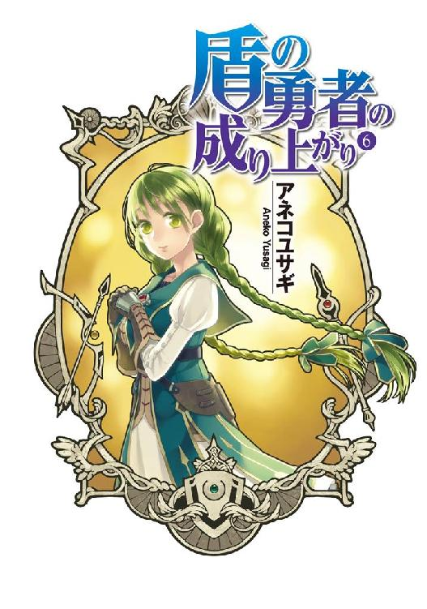

| 盾の勇者の成り上がり 6 (MFブックス) | |
| アネコ ユサギ | |

ＭＦブックス
盾の勇者の成り上がり ６
アネコユサギ
プロローグ カルミラ島ジンクス
ザザーンッという波の音に耳を傾けながら青い海と空を見つめる。
「この島にいると海が荒れているのが嘘みたいだな」
「ナオフミ様、沖合に出るとまだ嵐だそうですよ？」
俺達は今、カルミラ島というリゾート地......違ったな、活性化現象が起こっている島に滞在してしていた。
カルミラ島で起こっている活性化現象というのは、オンラインゲーム風にいうなら経験値アップイベントだ。
このカルミラ諸島で魔物を倒すと経験値が普段よりも多く手に入る。
経験値......もう慣れてしまったが、ここは異世界だ。
「ほら、水平線に目を凝らすと黒い雲が見えませんか？」
「んー......」
目を凝らして遠くを見る。言われてみれば微かに見えるような気がする。
海の波も高いし、風が湿っている。
「ラフタリアは海に詳しいな」
「漁村出身ですから、なんとなくですがわかるんですよ」
「そうだったな」
なぜ、俺達が海をぼんやりと見ているかというと、次の予定まで......割と暇だからである。
どうして俺が異世界なんかにいるのか、それを説明するには最初から話さなければならない。
俺の名前は岩谷尚文、元々は現代社会の日本でオタクをしていた大学生だ。
気まぐれに立ち寄った図書館で見つけた書物、四聖武器書を読んでいて、気が付いたら本の中の登場人物である盾の勇者として異世界に召喚されていた。
四聖武器書の内容は、波と呼ばれる災厄によって滅びに向かっている世界に、異世界からそれぞれの武器を携えた四人の勇者が召喚され、波に挑む物語だ。
四人の武器とはそれぞれ、剣、槍、弓、そして盾......。
盾は武器じゃなくて防具だろと思うが、俺はその盾の勇者として召喚された。
四聖武器書の内容は途中までしか記されておらず、盾の勇者の記述が始まるべきところから空白となっていた。
とまあ、俺が異世界に召喚された経緯はこんなところだな。
で、この異世界は言ってはなんだがゲームのようにＬｖと経験値が存在する世界だ。
魔物を倒すことでＬｖが上がり、自らの能力が向上する。
ステータス魔法とか言ったか、意識すると自らのステータスを数値として見ることができるのだ。
努力した分だけ結果が実る面白い世界ではある。
だが、盾の勇者は盾の防御専門の性質から、間接的な手段でしか敵を倒すことができない。
仲間がいることを前提とした勇者なのだ。
盾の勇者本人が魔物を倒すのは至難のワザだ。
だが、代わりに伝説の盾は様々な能力を俺に授けてくれる。
伝説の勇者の武器は魔物や素材、様々な物を吸わせることで成長し、強力な武器へと変貌していく。
そうして波に備えて強くなっていく......予定だった。
勇者四人で波に挑むことができたらよかったのだが、俺を召喚した国であるメルロマルクは盾の勇者を迫害した。
仲間ができず、やっとできたと思った仲間は俺に冤罪を被せて無一文で放り出したのだ。
そんな大変な状況を俺は乗り越え、仲間......と呼べるかどうかはわからないが、奴隷を購入して最初の波を乗り越えた。
......言い方が悪いけど事実だ。
俺は奴隷であるラフタリアという少女をなけなしの金で購入して、無理やり魔物と戦わせた。
「これからどうしましょうか？」
「嵐が過ぎ去るまでは沖に出られないんだろ？ 島で時間をつぶすしかない」
目の前にいる、俺を慕ってくれる女の子がラフタリアだ。
外見年齢は一八歳、だけど実年齢はもっと幼い。
彼女は異世界にいる亜人と呼ばれる人種だ。人種名はラクーン種だったかな。
タヌキのような耳と尻尾が生えた女の子をイメージしてくれると近いと思う。
整った顔立ち、さらさらな紅茶色の長髪、肌は白くてきめ細かい。
一〇人が一〇人共、綺麗だと思うだろう。
亜人は幼い子供であっても急速なＬｖの上昇によって戦闘に適した肉体へ体が急成長してしまう。だからラフタリアは本来の年齢と釣り合わない外見をしているというわけだ。
ラフタリアはこの世界で最初に起こった波によって、生まれ育った村と両親を失い、奴隷狩りによって奴隷となり、散々な目に遭ってきたそうだ。
最終的に俺が購入して、今に至る。
俺は冤罪で嵌められてから人を信じることができないようになってしまった。
だから主を裏切ることのできない奴隷しか信じられなかったのだ。
理不尽な理由なのだが、一度は自由の身になったラフタリアは俺の信頼を得るために再度奴隷になってくれた。
ここまでしてくれる子を信頼できないほど、俺は落ちぶれてはいない。
今では頼れる相棒だ。
性格は真面目と表現するのがぴったりだ。
使命を最優先し、俺がおかしなことを言ったりすると注意してくれる。
ラフタリアは波で家族と生まれ故郷を失った所為で波に挑む意識がとても高い。
これ以上、自分と似た境遇の人々を生み出したくないという意志があるのだ。
素直に尊敬する。
「フィーロー」
「なーにー？」
海で泳いで遊んでいるフィーロに声を掛ける。
「俺達は市場の方へ行くがお前はどうする？」

「もう少しここで泳ぎたーい」
「わかった。じゃあ好きに遊んでいろ」
「はーい！」
フィーロというのはラフタリアの次に仲間になった......魔物の女の子だ。
元々は波を乗り越えた時に渡された報奨金で購入した、たまごガチャの景品である魔物の卵──それが孵った魔物だったんだが、なぜか天使のような羽を生やした女の子に変身できるようになった。
人型の時は金髪碧眼の女の子。
艶のある金髪が光沢を放ち、透き通った海のような眼、雪のように白い肌と、海外の子役アイドルも裸足で逃げ出すんじゃないかってレベルの完成された幼女って外見をしている。
性格が無邪気なのは表情を見ればわかる通りだ。
無邪気な顔や幼い言動、馬鹿な行動で俺を和ませてくれる。
時々イラッとすることはあるけど、それも見る人にとっちゃ愛嬌だ。
その正体はフィロリアルクイーン。馬車を引く習性を持った鳥型の魔物、フィロリアルの中でも、特別な育ちをした魔物なのだ。
本当の姿は俺よりも大きく、フクロウやペンギンを混ぜたような外見をしている。
鳥の魔物だが足腰が丈夫な代わりに飛べないようだ。ガチョウに例えるといいのかもしれない。
羽毛の色は基本的に白だが、所々が桜色だ。
そして目立つ特徴として他のフィロリアルにはない冠羽が頭に生えている。
人型の姿の時はアホ毛として自己を主張して、フィーロのトレードマークとなっているな。
見た目の年齢は一〇歳前後だけど、その見た目で侮っては痛い目を見る。
動きは素早く、見た目よりも遥かに怪力でとても強い。そんな頼れる俺の仲間だ。
俺を含めそれぞれのＬｖは、俺が73、ラフタリアが75、フィーロが76だ。
俺の仲間はこの二人しかいない。
正直に言えば人手が足りなくなってきている。
これがゲームであればＬｖを上げれば仲間達と困難を乗り越えられるんだろうが、ここは異世界ではあるが現実だ。どれだけＬｖが高くても人手が足りないと不利なんだ。
「次の波に備えてどうしましょうか？」
「できれば仲間を募りたいな」
「メルティちゃんが一緒にいてくれたら心強いでしょうね」
「アイツが？ 思ったよりは強いが、さすがにメルティを勧誘することはできないだろ」
メルティはフィーロの友達であり、メルロマルクの王女様だ。
とある経緯があって仲間としてサポートしてくれたのだが、さすがに王女様を危険な波に挑ませるわけにはいかないだろう。
ああ、そうそう......俺の冤罪事件に関してなのだが、このメルティが深くかかわっている。
それを説明する前に俺を召喚したメルロマルクという国を説明しないといけない。
メルロマルクは盾の勇者を宗教的に敵視していた国だった。
三勇教、盾以外の勇者を信仰する宗教が国教であり、国民は盾の勇者＝悪人だと思い込んでいた。
なんでこんな宗教があるのか？
それはメルロマルクという国が亜人を差別する人間優遇の国だからだ。
もちろん逆も然り、亜人優遇で人間差別の国もある。
そんな国と長年......戦争をしていたらしい。
で、その敵国である亜人達の信仰する宗教の神に盾の勇者が存在するそうだ。
俺を召喚した時に立ち会っていた王は俺を差別し、冤罪に陥れた挙句無一文で追い出した。
これがメルロマルクの方針......だったわけではなかった。
災厄の波が世界に訪れている今、くだらないことで争っている暇はない。
メルロマルクの真の統治者である女王が、盾の勇者である俺と王にして夫との仲を取り持つために派遣したのが、メルティだったのだ。
メルロマルクは元々女王制の女が継ぐ国である。
女王の方も世界中で起こった波への対処に外国での交渉に追われていた。
勇者召喚も本来は外国で行う予定だったのだが、三勇教と国に残していた夫の暴走で勝手に召喚されてしまい、危うく戦争になり掛かっていたのを交渉で回避していたんだとか。
女王がいなかったら今頃メルロマルクって国はなくなっていたかもな。
そんなことを知るはずもない俺達は、波を乗り越えた後、足りない装備を行商によって稼いだ金で賄っていた。この行商が地味に様々な面でプラスに働いて、俺は盾の勇者ではなく馬車を引くフィーロに準えて神鳥の聖人と呼ばれ尊敬を受けた。
そのおかげで色々な道具や素材、新たな盾を手に入れることができて、最終的には他の三人の勇者に並ぶほどの強さを得ることに成功したのだった。
だが、神鳥の聖人は実は盾の勇者だったという事実が、三勇教には面白くなかった。
他の勇者共が起こした騒ぎで、信仰も揺らいでいたことも後押しして、三勇教は強引な手段に出た。
俺と王との仲を取り持つために派遣されたこの国の第一継承権を持つメルティを、俺が誘拐したと強引な手段で罪をでっちあげたのだ。
国は元より、他の勇者総出で追われる羽目になり、俺達は無実を証明するために逃亡。
その道中でも、かつてラフタリアを拷問した貴族との戦いや、封印された魔物との戦いがあった。
果てはフィロリアルの女王と遭遇等様々な経緯の後に、三勇教が聖戦と称して直接俺を殺しに来たのだった。
最終的には俺の奥の手にして盾の負の面である呪われた盾の力で三勇教のトップであった教皇を倒し、俺の無実は証明された。
女王も国に戻り、夫である王とメルティの姉である、俺を嵌めたビッチな王女に重い罰を課した。今ではその二人はそれぞれクズとビッチという名前に改名させられている。
で、それから俺は他の勇者達と同じ立場になり、国の援助の下、こうして波に挑んでいるわけだ。
ここまでは良いんだけど......その先でまたも問題が勃発した。
「あー......どうしてあいつ等が敵なんだよ。勧誘しようと思ってたのにさ」
「そうですね......あの方々はとても頼りにできそうだったのに......残念ですね」
「......そうだな」
このカルミラ島へ来る船で相部屋になった、ラルクことラルクベルクとテリスという冒険者。
ラルクは、なんていうか頼れる兄貴分って感じの奴だった。
戦闘経験も豊富で面倒見が良くてノリも良くて、正直に言えば嫌いじゃない。
テリスは魔法が得意で、後方援護が少ない俺達には有用な人員だった。
二人とも冒険者の中では驚異的な強さを持っていた。
だが......その正体は二度目の災厄の波が到来した時に戦ったグラス......敵の仲間だったのだ。
先日、カルミラ島にある水中神殿で見つけた龍刻の砂時計、波の到来を告げてくれるオブジェによって参加した波で、波のボスである次元ノ勇魚を倒したところで俺に敵対して戦ったのだ。
結果は......奴等が撤退したので引き分けだな。
だが、波とはどんな現象なのか謎が深まってしまった。
ラルクとグラスは波の亀裂の中に逃げ込んでしまい、俺達が追いかける前に波の亀裂が閉じてしまった。
波とは何なんだろうか？
この世界に来た当初の俺は魔物が大量に出現する現象だと思っていたのだが、グラスやラルクの言葉を聞くと、どうも違うように思えてならない。
なぜか奴等は勇者を殺すことを目的にしているようだった。
「気にしてもしょうがない。暇つぶしに市場でも覗いてみよう」
「そうですね」
現在、俺達はカルミラ島で立ち往生している。
嵐もしばらくしたら静まるだろうとの話だったしな。
カルミラ島近海で起こった波で倒したボスは既に島に運び終えている。
次元ノ勇魚という魔物だ。
大きすぎて、素材にするにしても島の連中が解体してからだから、まだ先だな。
「あ、ナオフミ様。アクセサリーが売ってますよ」
「ん？」
ラフタリアに勧められて店を見ると......売っているアクセサリーの値段を見て全てが吹き飛んだ。
「なんだこれ！」
幾らなんでも高すぎるだろ、商売舐めるのも大概にしろ、と怒鳴りたくなるほどの値段に商人を睨みつける。
平均相場の倍までなら観光地特有の値上げで我慢できる。しかし、四倍とはどういうことだ。
「おい」
「はいはい。なんでしょうか？」
「幾らなんでもこれは高すぎないか？」
俺は棚にあったネックレスを指差す。
ダミーサファイアネックレス（魔力＋）
品質 悪い→（隠蔽）→普通
メルロマルク国の平均だったら捨て値クラスの粗悪品だ。
しかもご丁寧に隠蔽の細工まで施されていて、パッと見は良く見える。
それなのに値段は最上級品でもおつりが来る金額の四倍。舐めきっているにも程がある。
他の商品を見たところ、全部似たようなものだった。
詐欺をするにしてもやり方ってものがあるだろうよ。
「何分、ここは大陸から離れた諸島ですからねぇ。しかも今は渡航も難しいですので少しは高くなりますよ」
「少し？ 隠蔽までしておきながらか？」
「......こちらも商売ですからねぇ。輸送料を考えるとお高くなりますとも」
目付きが嫌な感じだ。この商人、シラを切るつもりだな。
ただのクレーマーとでも思っているのか俺に去れと手を振っている。
女王を呼んだり、勇者として説教したりしてもいいが、ここは商売人としての権力を使おう。
「俺の知り合いにこういう奴がいるんだが」
アクセサリー商の証文を広げて商人に見せる。
神鳥の聖人をしている時に知りあったコネで本人から貰った物だ。
あのアクセサリー商、この界隈じゃ相当の有名人らしいから効果があるかもしれん。
商人の奴、チラッと証文に目を向けて黙殺する素振りを見せたが、次の瞬間マジマジと証文を読み、見る見る顔を蒼白にする。
「これを話の種にしようかな。お前の事はしっかり覚えておくぞ」
「ちょ、ちょっとまってください！」
凄い勢いでテーブルから出てきて、俺の足元で懇願するように頼み込んでくる。
「なんだ？ 俺は忙しいんだが？」
「よく見たら値札を間違えていました！ 正しい値段で提供いたしますので少々お待ちください！」
「いやいや、直さなくてもいいぞ。俺はただ奴に話をするだけさ」
「ま、待ってください！ 三割引きで提供させていただきます」
「あの値段の三割引きじゃなぁ......」
「もちろん、正しい金額の三割引きですよ！」
「いやぁ......いらない」
「ま、待ってください！ 五......六割引きで」
「あのアクセサリー商、どこ行ったっけなー」
「な、七割──」
「確か国の商人組合だったか？」
「は、八割──」
「相場の四倍で隠蔽してまで品質の悪い奴を売っていた──」
「ええい！ 九割引きで提供させていただきます！」
ま、こんなところだよな。
「買った」
商売は脅迫と権力、さらには生命の危機を理由に儲けるのが一番ボロい。こんな真似をしているのをあのアクセサリー商に聞かれたら廃業が確実な制裁が加えられるだろう。
幾らなんでも商売舐めすぎのこの商人への制裁はこれくらいがいい。
「別に薄利多売をしろとは言ってないからな。迷惑が掛かるのは同じ職種の連中であり、お前自身だ」
相場より遥かに安めで売りつける奴にも同様の事が言える。
善良な振りをしているがそういうことをするとデフレが起こる。何でも下げれば良いというわけじゃない。
相場を無視して高値で売りつける場合は、釣り合うだけの状況がなければいけないんだ。
観光地で本土とは遠い位置にいるということである程度の値上げは妥当だ。
しかし見る限り、他に本格的なアクセサリーを売っている店はなさそうだ。コイツが追い払っているのか、握りつぶしているのかは知らないがな。
他に店がないからいくら値上げをされてもここで買うしかない。
そして、この商人を抱えている組合は信用を落とす結果になる。
「儲けるのなら相手が笑顔で大金を寄越すようにするんだ」
「というと？」
「考えてもみろ、ここは活性化中だぞ？」
「は、はぁ......」
「こういう噂を広げるんだ。『この島原産の鉱石で作られたアクセサリーを付けるとＬｖアップが上手くいくらしい』......とな」
「は？」
「わからないのか？ あくまで噂だ。実際の効果ではなくジンクスを取り入れるんだ。するとどうだ？ Ｌｖ上げを目的に来た奴等は験担ぎにと喜んで買っていくようになる」
神社のお守りと同じ原理だ。
実際に効果がなくても、なんとなく守られているような気分になる。
「な、なるほど！」
少なくとも、俺はそうやって金を稼いできた。
薬が欲しいと聞けば行って売り、除草剤が欲しいと聞けば行って売り、食料が欲しいと聞けば行って売った。金額こそ高かったが、多くの客は笑顔で俺に金を渡してきた。
つまり値段の高い低いよりも、客の満足度が重要なんだ。
俺の案に商人は拳を握り締め、納得して立ち上がる。
「後は......わかるな？ 本当かどうかは本人次第と注意しつつ高めに売る。これだけで相手は喜んで金を出す。そして喜んで買っていった奴の何割かが効果があったと騒げばもっと客が来る」
まあここまで上手くいく確率は低いが、最初の一手は成功するだろう。
活性化しているということは経験値が増えている。いつもよりＬｖアップの速度が速ければ、活性化の影響なのにアクセサリーの噂が本当なのかもしれない、と気分が良くなる。
後はやってきた冒険者の数と力量に依存するので希望的観測になるがな。
「さっそく取り掛からせていただきます！」
商人は俺にネックレスを渡して店を閉めて作業に入った。
「ふう」
良い仕事をした。ネックレスは結果的にタダで手に入った。
「ナオフミ様......」
ラフタリアが呆れた様子で額に手を当てて嘆いている。
ま、見方によっては因縁つけてボッタくったように見えるだろう。
「しょうがないだろ？ 商売を舐めんな」
「わかってますけど......凄く如何わしい商品が生まれてしまったように見えますよ？」
「確かにそうだが、ジンクスなんてそんなもんだ」
そこへ女王がやってきて声を掛けてくる。
「こんな所にいたのですかイワタニ様」
「どうした？」
「他の勇者様方との会議の場の準備が整いました」
「そうか」
余計な話をしている間に思ったよりも時間が過ぎていたようだ。
俺達は女王の案内するまま、宿泊している城......みたいな宿へと足を運ぶ。
宿に着いた俺達は女王の後を追って、そのまま階段を上っていく。
「勇者様方の仲間は別室で待機となります......ラフタリアさんはどうしますか？」
「えっと......」
メルロマルクの城で行われた交流で他の勇者の仲間達とラフタリアは言い争いをしている。
というのもごく一部の自己主張の強い連中が差別するからだ。
国の長がやめようと言ったところで突然差別がなくなるわけじゃない。盾の勇者の配下というだけで嫌な顔をされるし、ましてやラフタリアは亜人だ。差別主義者の格好の的だろう。
「今のところ、勇者様方の仲間の大半は自由行動をしています。それでも別室に行きますか？」
これは、暗にラフタリアも自由行動をしていた方が余計な争いになりませんよと、女王が伝えているのだろう。
ラフタリアも察して頷く。
「わかりました。私も自由行動をしていますね」
「何かあったら呼ぶ。それまでは好きにしていてくれ」
「はい」
ラフタリアと別れ、俺と女王はそのまま勇者達が待ち構える会議の間へと向かった。
一話 七星勇者
メルロマルクの城にもあった螺旋階段を上り、見晴らしの良い塔の部屋へと招かれる。
そこには既に俺以外の勇者が集まって座っていた。
「やっと来たか」
まず剣の勇者である天木錬。
黒い服装を好む剣士って風貌の少年だ。年齢は一六歳。
髪型はショートで、顔の作り......というか全身から漂うオーラが知的でクールな印象を与えている。
実際はクールを自称するカッコつけたがりだと俺は思っている。
最近判明したのは金槌で泳ぐのが大の苦手という情けない部分か。
なんでも俺とは異なる日本から召喚されたらしい。
錬の世界は俺の世界とは違ってＶＲＭＭＯというネットの世界へ入ることのできる機械が存在する。ぶっちゃけると近未来の日本から来たそうだ。
一応ある程度話を聞く常識は持っている。あくまでも勇者の中では......だけどな。
「どこをほっつき歩いていたんですか？」
次に弓の勇者である川澄樹。
天然パーマの入った幸薄そうなか弱い少年って風貌をしている。
こう......年下の魅力を売りにしてそうな......そんな感じ。
実際はものすごく正義感の強い熱血漢......とでもいうのか？
趣味は自分の正体を隠したまま、悪人を探し出して罰すること。
勇者の権限を世直しの旅に使っている。
要するに時代劇で有名な副将軍のような活動をしているのが樹だ。
俺には傲慢にしか見えないが、それで救われた人がいるのも事実。
問題は仲間が宗教のように樹を信仰し、傲慢な態度で騒ぎを起こすことだな。
本人も止めないから厄介この上ない。
勇者の中で一番年下に見えるのに年齢は一七歳と、錬より一つ上だ。
「ナンパでもしてたんだろ？ 一番活躍したもんな」
「ふん......お前が言うな」
「元康さん、あなたが言わないでください」
「そうだ。お前が言うな」
で、最後が槍の勇者である北村元康。
俺達勇者の中で一番のイケメンで、髪型は......あれはポニーテールでいいのか？
男の俺から見ても確かに顔が良い。整っていて、硬派というよりは軟派な顔立ち。
こう、普通に接する分には嫌な感じを抱かせない奴なのだとは思う。
性格は猪突猛進だな。自分が信じたことをどこまでも貫いて突っ走る。
仲間思いの勇者らしいが俺からしたら仲間を疑わない愚か者だ。
で、女が何よりも好きで、暇さえあればナンパをしているイメージだ。
ラフタリアに会った時もフィーロに会った時も最初はナンパから入っている。
他にカルミラ島でナンパをしていたとかも耳にしたから間違いない。
コイツが俺を冤罪に陥れたビッチを仲間にしている勇者で、未だに俺がビッチを強姦しようとしたと信じている。ただ、女王から時々ビッチの本性を見せられているので、徐々に態度が変化してきているような......気がしなくもない。
で、こいつ等三人は共通して、元いた日本でこの世界に似たゲームをやりこんでいたという経歴がある。
錬はＶＲＭＭＯでブレイブスターオンライン。
樹はコンシューマーでディメンションウェーブ。
元康はＭＭＯでエメラルドオンラインだったか。
逆に俺は四聖武器書という物語だ。この違いによってどう影響が出るのか全く謎となっている。
「海岸で海を見てたんだよ」
言いながら俺は席に着く。
「ああ......まだ荒れてて島から出られないもんな」
「Ｌｖ上げやドロップ稼ぎでもして時間潰しでもするしかないだろ」
「そうですね」
一応、島で立ち往生している状況は理解しているのか。
「で？ 今回は何の会議をするんだ？」
「わかっているだろ？」
俺たちが集められた理由は明確だ。
言ってはなんだが、この勇者共があまりにも弱いんだ。
何せラルク達との戦闘に入る時、邪魔が入らないようにとラルクが放った牽制攻撃を受けて、三人の勇者とその仲間達は痺れて動けなかったのだ。
雷を使った合成スキルのような攻撃だったと思う。
その攻撃を受けた者は体が痺れてしばらく動けなくなっていた。
もちろんラルク達は本気だったわけじゃなくて、アニメや漫画でよくあるような死者を出さないように手加減した攻撃だ。
この程度の攻撃を受けて戦闘不能に陥っているようじゃ勝負どころじゃない。
その後、俺が率先してラルク達と戦ったわけだが......正直に言えば大苦戦だった。
ラルクとテリスはものすごく強くて、強化された俺でも殺されるかと思うような攻撃を放ってきたのだ。
俺は防御力が上がった盾を生み出すスキルを駆使してラルクの攻撃や回避を妨害し、ラフタリアやフィーロと協力してラルク達を追い込んだ。
だが、ラルク達も切り札を複数所有していた。
まず、追い込めたと思ったその時、ラルクの持っていた鎌が輝いて俺の肩に軽く触れた。
その時の俺は高い防御力もあって、ラルクの攻撃を耐えられると思っていたのだ。
だが、結果は負傷した。
幸い深手にこそならなかったが、ラルクは俺に対して非常に有効な攻撃手段......弱点を衝いてきたのだ。
それは高い防御力が仇となる、防御力比例攻撃だ。
防御力が高ければ高いほどに受けるダメージが増すという、ゲームとかで稀にある攻撃手段。
ゲームのような世界なんだから可能性としてあると思っていたが、まさかこんな所で撃たれるとは思わなかった。
防御力が高いことが強みである俺に対して、致命傷を与えうる攻撃だ。
威力を下げるために弱い盾に変えて防御力を下げたらラルク達の攻撃を耐えきれない。
まさしく盾の勇者の弱点を衝く厄介な攻撃だろう。
幸いにしてエアストシールドや流星盾などのスキルで生み出した防御手段を使えば、俺に攻撃が届く前に無効化することは可能だ。だけど切り札があるとないとでは戦場では命に関わる差が生じる。
一対一なら身を守れるかもしれないけど、その場合は俺の攻撃手段がないに等しい。
たとえ仲間と連携して挑んだとしてもラルクだってテリスという仲間がいる。それにあの時は戦っている最中に前回の波で遭遇したグラスまでやってきてしまった。
グラスも俺に対して有効な攻撃方法である防御無視攻撃を持っている。
防御無視攻撃も防御比例攻撃と同じく、防御力自体を無視してダメージを与えられる効果があるから、盾の勇者の必要性を否定する攻撃だ。
それでも俺達は善戦し、グラスとラルク、テリスを追い詰めた。
だが、ラルクは追い詰められたその時、疲労困憊していたグラスに魂癒水というＳＰを回復する薬を大量に振りかけた。
その後の事は、正直思い出したくもない。
防御比例攻撃や防御無視攻撃以外なら耐えきれていた俺にグラスは正面から挑んできて、俺の防御を上回る攻撃をしてきたのだ。
あの時のグラスの攻撃の激しさ、速さは驚異的だった。
強くなったラフタリアやフィーロが対応しきれないほどの速度だったんだからな。
後の事は......よくわからないがグラス達が謎の撤退をしたことで戦いは保留となった。
引き分けと言えば聞こえはいいが、倒せない相手に逃げられたのだ。
次に遭遇した時、負けるかもしれない。
そこで問題がある......もしもだ、もしも手加減していたラルクにさえ勝てない勇者共がそんな状態のグラスと戦ったらどうなる？
結果は想像に難くない。瞬殺されるのがオチだろう。
四聖の勇者が欠けると波が厳しくなると俺は聞いた。そんな事態はできる限り避けたい。
そもそも、勇者共が強ければ、俺だけでグラス達と戦う必要なんてないんだ。
俺が女王に視線を向けると女王はコクリと頷く。
「ではこれから二度目の四聖勇者による情報交換を始めます。司会と進行はまた私、ミレリア＝Ｑ＝メルロマルクが務めます」
女王の宣言を聞いて三人とも席にもたれかかる。
「情報交換か」
「十分話したと思うがな」
「ええ......尚文さん以外は」
またか......思わず溜息が出るな。
「だから何度も言っているだろ。お前等それぞれの強化方法は正しかった。その強化を実践したから俺はカルミラ島で起こった波で戦えたんだよ」
そう、カルミラ島に来る前に俺達は情報交換を行い。勇者同士で強くなる方法を話し合った。
武器にはそれぞれ強化方法があり、強化することで勇者は普通の戦士よりも遥かに強くなることができるのだ。
なのだけど、この三人の強化方法はものの見事にバラバラだった。
お互いに言い争い、自分の強化方法が正しい、お前等は嘘を言っている、と罵りあって前回の会議は中断することとなった。
実際は三人の強化方法はそれぞれ正しかったのが俺の盾で実証されているのだ。
メルロマルクが伝令に使う影を使って強化を促したり、俺が直接話したりしているのに、こいつ等はその事を信じずに強化を行わず、前回の波でも戦力外だった。
ただ、この強化方法の実践は心の底から信じないとダメらしい。
もしかしたら......とか、あるかもしれない......みたいな懐疑的な考えだと全く反応しないのだ。
勇者の武器は感情さえも力と変える。信じないと他の勇者から聞いた強化方法のアイコンは出てこないのだ。
「また嘘を言って、どこかでチート能力を得たに決まってるじゃないですか！ 早く白状してください」
「そうだ不正者め！ こんなこと許されないぞ！」
「自分の強化方法を話しきってないんだろ！ 卑怯者が！ アバズレを貶めて何が楽しいんだ！」
まったく......怒りを通り越して呆れてくる。
「俺の話を全く信じず......そのくせ、チート......不正な力で出し抜いたと思っているのか？」
俺の返答に三人共頷く。
「それに......あなたの仲間達は更に強くなっているではありませんか！ それさえも盾の力？ 信じられません！」
「前にも言っただろ。ラフタリアもフィーロも伝説の武器にある成長補正の力が働いているんだよ。クラスアップの時にもフィーロのアホ毛が反応して特別なクラスアップもしたしな」
「はい。それは女王である私も確認しております。私の目の前で、イワタニ様の仲間であるラフタリアさん、フィーロさんは特殊なクラスアップを起こし、能力が跳ね上がった模様です」
女王が俺の言葉を肯定するが三人とも懐疑的な目で俺を睨んでいやがる。
なんで俺が詰問される立場なんだよ。
「あのさー......お前等、俺の気持ちになって考えたことがあるのか？」
「は？」
「なんで尚文の気持ちにならなきゃいけないんだよ」
「そうですよ。僕達が知らないといけないのは、チート能力を得る方法です」
まったく話にならないが、こいつ等にも強くなってもらわないと俺が困るんだ。
上から目線じゃないが、盾の勇者というのはどんな問題を抱えているのかを前回の戦いで痛感した。
「一つ考えろ。攻撃ができない、防御力しかない勇者が他者を出し抜いて何の得があるんだ？」
「それは......」
三人共、返答に困ったように顔を見合わせる。何か理由を探しているな。
「あるじゃないですか！ 攻撃手段が！」
樹が立ち上がって俺を指差した。
コイツの正義感に火がついたのか？ 正義を主張する奴が、こう騒ぐと煩わしいものがあるな。
「それはアイアンメイデンとブラッドサクリファイスのことを指しているのか？」
「そうです！ あんな強力な攻撃があるのですから出し抜くことに意味があります！」
俺自身が攻撃する手段は少ない。
一つはカウンター効果、敵の攻撃を受けてから反撃する盾である。
スパイクシールドのような、針が付いた盾に拳をぶつけたら痛いじゃ済まないだろ？
そういうあくまで受け身の反撃。
もう一つが、アイアンメイデンとブラッドサクリファイス......呪われた盾、ラースシールドにしている時にのみ使うことのできるスキルだ。
ただ、この二つのスキルは両方とも問題を抱えている。
俺は溜息交じりに樹に答える。
「アイアンメイデンはシールドプリズンで相手を囲み、チェンジシールド（攻）ってスキルで攻撃してからＳＰを全て支払って放つスキルだ。問題があるのは一度破壊したことのあるお前等ならわかるんじゃないか？」
「何がですか！」
頭に血が上って考えを放棄しているな。
逆に錬は口元に曲げた人差し指を当てて考え込んでいる。元康は俺を睨みっぱなしだ。
やがて結論に至った錬が呟いた。
「前提が面倒だな」
「そうだ。シールドプリズンが破壊されたらチェンジシールドを放てない。もちろん素早く放てばいいかもしれないが、前提が面倒なんだよ」
そう、アイアンメイデンは放つまでの前提が多すぎるのも然ることながら妨害も容易いのだ。
「しかもお前等は一回、アイアンメイデンを破壊してるだろ」
挙句やっと呼び出したアイアンメイデンであっても、プリズンを破壊されれば逃げられるしアイアンメイデン自体を破壊されたら意味がない。
アイアンメイデン自体動きが鈍いから攻撃されれば破壊は簡単だ。
「じゃあブラッドサクリファイスはどうなんですか！」
「もう忘れたのか？ アレは一回使ったら俺の方が致命傷を受けるのはもとより、呪いでステータスが三割までダウンするんだぞ」
カルミラ島の波に挑む時にはある程度回復していたが、それにしたって毎回瀕死になっちゃ堪ったもんじゃない。
「そんな代償ばかり支払う面倒臭いスキルしか俺には攻撃手段がないんだよ。ラースシールドだっていつまでも変えていられるほど便利な盾じゃない」
呪われた盾故に精神を蝕まれる。
「他に......ほら、黒い炎をまき散らす攻撃があるじゃないですか！」
「アレは反撃でしか出せないぞ？ しかもラースシールドだから常時使えない」
毎回毎回変更していたらいつか怒りに呑まれてしまうっての。
結局、俺の攻撃方法は呪われた盾を使うものであって、正規の方法ではない。
その意味でチートと呼ぶのなら素直に受け止めよう。
だが、こいつ等の話はそれよりも以前の問題なんだよ。
買ったゲームを説明書もチュートリアルも読み飛ばし、自分の知っているゲームの強化方法が偶然使えたからそれで進んできた三流ゲーマー的な感じだ。
正しい強化方法をしていないから途中で詰まるんだ。
「しかもラースシールドはお前等の強化方法が適用されない強化もあるし、スキルの解放ができない」
ラースシールドに関してはアイアンメイデンにしろブラッドサクリファイスにしろ、攻撃スキルを習得するための能力解放が不可能なのではないかと思うほど、解放されない。
「わかるか？ あくまで最低限の攻撃手段しか俺にはないんだよ」
「嘘つけ！」
元康が俺を指差して怒鳴るので、問答無用で顔面を殴りつける。
そしてゆっくりと拳を引いて、俺は座った。
元康の奴、信じられないという顔で、自分の顔に手を当てる。
痛くもかゆくもないもんな。これが俺の難点だ。
「わかるか？ 俺が果てしない強さを得たとお前等は思っているみたいだが、どんなに防御力が上がったからといって攻撃力まで伸びたわけじゃないんだよ」
まったくダメージがないからな。
「お前等が自分から突撃してきたらダメージを負わせられるかもしれないな。突撃してみるか？」
やっとのこと、三人とも黙りこむ。
それでも納得できないのか俺を見る表情は険しい。
「俺がお前等を出し抜いても得なんてない。前回の戦いで......一人でも俺と同じ強さを持っていたら結果はどうなっていたと思う？」
先ほども説明したがこいつ等はラルクとテリスの放った合成スキルらしき攻撃で周りに居た冒険者と騎士団の連中諸共、失神か痺れさせられて波間に漂っていた。
「お前等流で言うなら......負けイベントがこんなにも続くのか？」
「く......」
忌々しそうに錬が呻いた。
それは樹も元康も同じようで、拳を握り締めている。
「いい加減理解しろ。あのラルク......ラルクベルクとテリス、そしてグラスは勇者を殺そうとしているんだよ。奴等は俺を勇者として認めて俺だけを殺そうとしているようだった。お前等が勇者だと知られたら、今度こそ殺されるぞ」
そうなったらどうなる？ 答えは聞いている。
フィロリアルの女王であるフィトリアの口からだ。
「四聖の勇者が一人でも欠けるとそれだけ波が厳しくなると聞いた」
勇者が一人でも戦死すると俺の負担が増えることになる。
これだけは何をしたって回避しなきゃいけない問題だ。
「そんな状況で、俺がお前等を出し抜いて何の得があるっていうんだ？」
「自分こそが勇者である、ヒーローだと主張するために決まっているじゃないですか！」
「お前......」
樹が信じられないことをほざきやがった。
「そんな自己満足で動いている人を信じることなんてできません！」
「勝手に決めつけるんじゃねえよ！」
俺自身にも言えることだが、勝手に決めつけることは自分の首を締めることになる。
だから俺は......できる限りは相手を信じようと思ったんだ。
じゃなきゃこの先、生き残れない。
もちろん、疑うことも忘れないが、信じないだけでは進めない。
「『お前は主人公なんかじゃない』。俺がビッチに濡れ衣を着せられた時に言われた言葉だ。な？ 元康」
樹に同意していた元康に語りかける。
「この状況で......どっちが主人公に見える？ 錬も考えろ。前向きに波に挑もうと話をしている時にチートだ嘘だと相手を弾劾することしかしない奴が......主人公なのか？」
俺の言葉に錬も樹も元康もばつが悪そうに視線を逸らす。
別に主人公になりたいと言った覚えはないが、もっと現実的に問題に取り組みたいんだ。
「俺が話せるチート方法は、お前等から聞いた強化方法を全部実行する、だ！ それ以上はない」
「......」
それでも何かを言おうとして言葉が出ずに三人は黙りこむ。
「むしろ俺としては今すぐにでも戦力が欲しい。確かにラフタリアやフィーロは強いが、どんなに強くても所詮は二人だ。戦力といえば、一番理想的な戦力は勇者であるお前等三人だろう？」
まったく、不快感があるのはこっちだって同じだっての。
「ふん。強くなろうと努力する俺達をお前はあざ笑おうとしているんだろ？」
「そうですね。僕達が努力しているところを内心、笑っている悪役がいたりしますし」
「......はぁ」
本当に呆れる。
「錬、さっき俺に許されないとか言ったよな？ それは......誰が許さないと言っているんだ？」
「......」
ほんと......自分が偉い前提で話しているよな。
許されないって......迷惑プレイヤーを運営に通報するみたいな言い方だ。
「なあ......お前、本当に誰が許さないとか言っているんだ？」
錬の奴、言葉を濁しながら俺から視線を逸らす。
カッとなってつい言ってしまったのか？
「それともお前にはそんな権力があるのか？ 納得できる理由を説明してくれ。お前はまだ何か知っていると見ていいか？」
「くっ！」
どうやら、咄嗟に言ってしまっただけらしい。
いるんだよなぁ、こういうタイプ。
ゲームとかで一般プレイヤーが入手することが非常に難しい武器とかを持って魔物......ボスとかと戦っていると、あまりに強いからチートだ、運営に報告するとか言い放っちゃう奴。
俺も昔は大きなギルドのマスターをしていて、同盟内でそういったアイテムを保有していたから知っている。
「今は現実に目を向けろ。俺はちゃんと真実を告げているんだ。キザな言葉だが、信じることが力になるようなんだよ」
「俺達に説教をして気持ち良いか？」
「......はぁ」
俺は冷たい目を三人に向ける。
「説教されるほどの弱さだろ？ 雑魚、ゲームは終わったんだよ」
ここはその挑発に乗るべきだと判断して俺は三人に答える。
「お前！」
「話になりません！」
「この、卑怯者！」
三人は激怒して立ち上がり俺を指差して怒鳴り散らす。
そこに女王がパン！ と大きな音を立ててテーブルの真ん中に氷の塊を落とした。
「落ち着いてください！ 今は争っている場合なのですか？」
「ふん。チート野郎と手を組む奴の話を聞いても何の意味もない」
不快そうに顔を逸らして吐き捨てる錬に女王も呆れ顔だ。
「勇者様方が強くなるために我が国は最大限協力いたします。どうか冷静になってください」
まったく......どんだけワガママを通せば気が済むんだろうな？
女王に素直に同情するよ。
「今は勇者様方が強くなる話は後に致しましょう。それよりも今回戦った相手に関して話し合いを致しましょう」
「そうだな。もしかしたらお前等がやったゲームに似たような人物がいるかもしれないしな」
俺が読んでいた四聖武器書は、波の正体に関して全く記載されていない。
だから、情報としての意味はないに等しい。
だが、他の三人は違うかもしれない。
「お前等、心当たりのあるゲームでの登場人物はいないか？」
「......いないな」
「そうですね。あの方は鎌を使っていましたが、そのようなキャラクターはいなかったかと」
「ああ、武器としてはあるがマイナーだったな」
ラルクは鎌を使用していた。かなり特殊な武器であるのは確かだ。
「むしろ尚文さんはあの方々と知り合いだったようですが......どのような関係だったので？」
「お前等がカルミラ島へ来る船の部屋を独占した時、そのツケを支払った俺と相部屋だった連中だよ。その縁で、島で一度一緒に魔物を退治して回った」
「顔見知りですか」
「ああ」
「一緒に戦っておかしな点はありましたか？」
「そうだな......まずラルクベルク......ラルクの鎌は、勇者の武器のように魔物を吸い込むことができたぞ？」
「そこでおかしいと思わなかったのか？」
とは言われても、俺はこの世界にそこまで詳しくはない。
完全に理解したつもりになっているこいつらだって、知らないことが多いんだ。
疑問に思っても問題が起こるまでは保留にするだろ。
「俺はこの世界に詳しくないし、変わった武器だと尋ねたら当たり前のように『よくあるだろ？』と答えられたぞ」
「そうなのですか？」
樹が女王に尋ねる。さすがに樹もこの辺りは詳しくないのか。
俺も女王に目を向けると女王は首を横に振った。
「そのような武器は勇者の武器以外に存在しません」
「近い性質の武器とかもない？」
「はい。魔物を吸い、ドロップ品を出す武器など再現されたとは聞いておりません」
ふむ、となるとラルク達にとって当たり前だが、この世界にとっては存在しない物......か。
「おかしな武器ですよね」
「ああ、勇者は四聖しか存在しないはずなのに、それ以外の武器が......」
「勇者様方はご存じないのですね。他に七つ、伝説の武器が存在いたします」
「「「は？」」」
「その様子だと四聖の勇者以外にも勇者がいることをご存じないのでは？」
どうしてこうも知らない情報がポンポン出てくるのかね。ウンザリする。
ご存じも何も初耳な話ばかりだ！
「では説明しましょうか」
女王の目が輝く。フィロリアルの女王の話をした時の様子や、伝承の探索とかで各地を見にいったとかいうメルティの話から考えると、女王は伝説が好きなんだろう。
「最も有名なのは四聖勇者の伝説ですが、次に有名なのは七星勇者の伝説ですね」
「七星勇者？」
「ええ、四聖勇者と同じく七つの武器に選ばれた勇者の伝説です」
七つもあるのか......。
全て別系統の武器を想定すると、またゲーム度が増すな。
ＲＰＧなんかでは後々仲間になる奴が持っていたり、手に入れる必要が出てきたりする。
しかし......この世界で伝説の武器の所持者と聞くと身構えてしまう。
俺の知っている奴等が碌な奴等じゃないからな。
「クズや三勇教のせいで問題が起こった我が国ですが、七星勇者に関する全権を放棄したお陰で目を瞑ってもらったところもあるのですよ」
「へー......」
「七星勇者は四聖勇者と深い関わりがあるとも、外伝の勇者とも言われていますが──」
女王は長々と伝説に関して話を続けていた。
「じゃあ俺達のように召喚された勇者が七人もいるのか？」
「そんなに沢山の異世界人がこの世界に来ている？」
「勇者のバーゲンセールだな」
「これだけ広い世界を四人で救うよりは遥かにマシだろ」
俺の言葉に勇者共は視線を外した。
「いえ」
「違うのか？」
「七星勇者に関してはむしろ冒険者が憧れる職種として有名でもあります。七星勇者は召喚に応じて勇者になる者もいますが、この世界の者がなることができる場合もあります」
召喚限定ではなく、この世界の者もなることのできる勇者か......。
この世界の常識がある分多少はマシなのか？
勇者と呼ばれる以上おかしい奴は選ばれないだろうし。
「一応、その伝説の武器を使って召喚は行いますが、勇者召喚が失敗した場合は選ばれた者が出現するまで、武器は一般人が触れることができるよう解放されます」
「......地面に刺さった伝説の剣みたいな感じか？」
「剣は四聖の勇者の武器なので違いますが、地面に刺さっているというのは間違いありませんね」
なるほど。腕に覚えがある奴なら一度は挑戦したくなるだろうな。
もしも選ばれたら更に強くなれるし、国家の力添えも受けられる。憧れない理由がないな。
「四聖の勇者よりも武勇伝の数自体は多いですよ。少しでも戦乱が起こると七星勇者は出現する可能性があるので」
「ほー......」
「波が出現した後は、七星勇者も大半が選定されました」
「それだけ危機ということか」
「はい」
世界単位の問題を、この世界の上層部は重く見ているとか言っていた。
「で？ その七星勇者の中に鎌の勇者はいるのか？」
「生憎と存在いたしません」
「そうか」
「なのであの者達の謎は更に増したことになります」
ふむ......ラルクの言っていた勇者の武器みたいな技能はこの世界には勇者以外存在しない。
だけどラルク達にとって当たり前のこと......。
「そういえばラルク達は『俺達の世界のために死んでくれ』と言っていた。ラルク達の世界も異世界らしい」
「どういうことなのでしょう？」
「ありえるのは......波の先は奴等の世界で、何かしら理由があって俺達の世界を侵略しようとしている......か？」
「そう考えると辻褄が合いそうですね」
「よくよく考えてみればグラスの武器にも俺達の武器みたいな宝石が嵌っていたから......ありえなくないな」
「あれは......扇でしょうか？ こちらも私共の世界には存在しませんね」
「全部でどのような武器があるのですか？」
「では説明いたしましょう」
女王は立ち上がって七星武器の詳細を語りだした。
「まずは杖」
杖......伝説の武器として存在するのなら魔法系だな。
それとも魔法少女みたいな派手なロッドとかか？ 一体どんな所持者なのか気になる。
「イワタニ様？」
「あ、ああ。続けてくれ」
「次に槌、投擲具、小手、爪、斧、鞭です」
「えっと......」
「投擲具とは大雑把ですね」
樹が手を挙げて尋ねる。
「そうですか？」
「どんな武器なのかわかりますか？」
「はい。伝承では投げナイフ、手裏剣、クナイ、円月輪、投げ斧など、投げる武器全般に変化することができるそうです」
便利そうな武器だな。あ、でも投げる武器前提か。
弓の勇者をしている樹と似たカテゴリーだよな。
遠距離ってことは近距離には使えない可能性があるな。俺の盾は防御にしか使えないし。
「小手と爪の違いはなんだ？ 同じ武器じゃないのか？」
「そうだな。俺もそう思うぜ」
錬と元康がこの二つを尋ねる。
あら探しってわけじゃないけど、同じ武器に見えなくもない。
「そこまでは......わかりかねます」
女王だってなんで似た武器が存在するのか？ とか聞かれたら答えようがないか。
それにしても......なんかパッとしないラインナップだな。
まあ四聖がファンタジーって感じだから、多少色物っぽくなるのはしょうがないのか。
特に最後。
「鞭ねー」
なんか変わった武器だよな。
宝石みたいなやつはどこに付いているんだ？ 柄か？
盾の俺が言うのもアレだが、ちょっと弱そうだよな。
まあ俺の知っている有名なゲームじゃ最強装備の一つにあるけどさ。
「伝承では鎖にも変化できる武器だそうです。フレイルにもなれると聞いたことがあります」
「それって槌と変わらないんじゃ......」
鈍器という意味で。
七星武器って境界が曖昧なんだな。盾しか使えない俺は少し羨ましい。
「槍と矛が同じ武器なんだから被るモノはあるのかもしれないな」
「......そうだな。投げナイフは俺も出たことがある」
錬がそう答える。
短剣は確かに剣のカテゴリーだからな。七星の武器と四聖の武器は被ることもあるのか。
その中で浮いているのはやっぱり盾か......。
「鞭は大きな違いとして、魔物の力を引き出すことができるそうです」
「尚文の言っていた魔物の盾みたいな感じか？」
「特化系なんじゃないのか？ 俺の持つ成長補正よりも上の力を秘めてるとか」
女王様が鞭を振るって魔物を嗾けるシーンが浮かぶ。
そういう感じか？ 目の前に女王がいるけど、そういうことは......クズ相手にしてるのか？
すっごくどうでもいい考えだ。
「槌と斧も似たような武器だよな」
違いがないわけじゃないけどさ。
「そうですか？」
ああ、疑問に思わないのね。初めからそう教わっていたら不思議とは感じないか。
とりあえず、小手と爪の違いを考えよう。俺の仲間が仮に装備できたとしたらどうなのだろう？
ってところで、フィーロを思い出して気付いた。
そうか。小手は手限定だが、爪は足でもいいんだ。
まあ、フィーロが勇者に選定されたら対応に困るけど、なんか納得できた気がする。
そこから考えるに、槌と斧も振り下ろす武器だけど役割に違いがあるのだろう。
「その七星勇者に会ったことがないな」
「四聖勇者の皆様とは別の所で戦っております。それにまだ所持者が見つかっていない武器もあるので」
「そうなのか？」
「はい」
「そいつらに波を任せればいいんじゃないか？」
そんなことをすればフィロリアルの女王が俺達を殺しに来るだろうが！
「世界は広いので、七星勇者達だけでは守りきれません」
だろうな。なんでそんな他力本願にならなきゃいけないんだよ。
「で？ 話は戻るがラルクやグラスの持つ武器は存在しないと？」
「はい」
安易に出てくる答えとしてはグラス達の方の世界にも伝説の武器がある。
だが......一つ大きな問題がある。
「問題はラルク達は当たり前のように答えていたところだ」
「というと？」
「仮にアレが伝説の武器に似ているだけで、奴等の世界じゃ当たり前の技術だったら......どうなる？」
三人の勇者と女王が息を飲む。
そう、恐ろしいのはあいつ等が勇者クラスの武器を当然のように所持し、この世界に大量に攻め込んでくることだ。
強くなった俺でさえもやっと戦えているところに、グラスに匹敵する敵が当たり前のように攻めてきたら......勝てる見込みはない。
「なるほど......これは可及的速やかに事態への対処を考えていかねばなりませんね」
「そういうことだ」
「では付け焼き刃的なモノになりますが、勇者様方に戦闘訓練を経験していただいた方が......いいかもしれませんね」
ん？ 三人の勇者がそれぞれ嫌そうな顔をする。
ああ、こいつ等、楽して強くなって称賛されたいとかが本音だもんな？
訓練嫌いなのか。
「今は次の波に備えてできる限りのことをしていきましょう。イワタニ様、どうか他の勇者様方とのすり合わせをお願いします」
「......」
できる自信はないが、次の波までに稽古くらいは付けてやれればいいか。
何度も言えば......可能性は低いができるようになるかもしれない。
死なれたら俺が困るから、できれば強くなってもらいたいしな。
「私共も騎士団や冒険者の猛者を募ります」
「そうだな。グラスとの戦い、女王の援護のお陰で有利に動くことができた」
ルコル爆樽というアルコールの塊みたいな爆弾を俺とグラスが睨みあっているところに投げつけ、グラス達を翻弄したんだ。
「カワスミ様の仲間であるリーシアさんのお陰で閃いた案でございます。彼女がいなければ今頃どうなっていたことやら、陰の功労者は彼女でしょう」
「......そうですか」
樹がなんか気になる目をして頷いている。
「リーシアさんが......なるほど」
「カワスミ様もリーシアさんをお褒めください。彼女のお陰で此度の波を乗り越える案が出たのですから」
「ええ......そうしましょう」
樹の仲間には序列がある。そんな中で最下層にいる奴がリーシアらしい。
活躍したんだ。これで奴隷よりも酷い環境から一歩踏み出せただろう。
「それでは、メルロマルクに帰還するまで勇者様方は自由行動と致します。ありがとうございました」
問題は多々あるが、一応はまとまった形になったな。
勇者共の技術、精神面での成長がない限り先には進めない。
経験値やＬｖに関しては後回しだ。既にカルミラ島で十分Ｌｖは上がっているからな。
「あ、イワタニ様は少しばかりお話があるのでお残りください」
「ん？ わかった」
三人が去る直前に女王が呼び止めたので、俺は残る。
他の勇者共には言えないことでもあるのか？
「なんだ？」
「これは他の勇者様方には話せないことなのですが、本来イワタニ様以外の勇者様方を近隣の国の波に向かわせようと考えていたのですが......」
「あの弱さじゃ危ないだろ？」
「おっしゃる通りです。なので、先ほど話した七星勇者の方々に協力を要請しようと思っているところです」
「その七星勇者ってのが、どの程度の強さなのかによるがな」
勇者共と大して変わらないんじゃ話にならない。
「ですが、イワタニ様だけに出ていただく場合、休む暇がないかと思われます」
「うー......ん」
そりゃあきついな。俺はなんだかんだでまだブラッドサクリファイスを放った時に起こった能力低下の呪いが残っている。少々不安だが、任せるしかないだろう。
「七星勇者よりも弱いとなれば四聖の威厳が下がります。何より......メルロマルクは偽者の四聖勇者を派遣した......と言われかねません」
「それは......そうなんだがな」
「七星勇者に関しては、私共は拝見したことはあります。前回の戦いを見る限り、三方よりは確実に強いようにお見受けします」
「確かな話か？」
「はい」
メルロマルクの事は正直どうでもいいが、勇者共が戦死することで最終的に掛かる負担を考えると行かせられない。
俺は参加してもいいかもしれないが......そこまで手が回るか怪しい。
もちろん、波の亀裂の先に何があるのか興味はある。
「一番近いのはいつなんだ？」
「一週間後と測定されています。地図はここに」
女王が龍刻の砂時計が記載された世界地図を持ってくる。
うーん。俺の世界基準でいうところの世界が平らだと思っているような地図だ。
端には絵が描かれていて誤魔化されてる。
「嵐の状況次第ではありますが、船を乗り継いで行けばそこまで遠くはありません」
「ポータルの移動を視野に入れると、問題はなさそうだな」
「ですが、メルロマルクでの皆さまとの訓練を考えますと......それに各地で起こるので、結局は人手を割くことになります」
どうしたものかな。
本来は三人の勇者をそれぞれ向かわせれば対処も簡単なのだが、出てくる敵も敵......か。
「他にある波についての楽観的な情報を言いますと、しばらくの間波を放置していると亀裂が勝手に閉まることが確認されています」
「そうなのか？」
「はい。魔物が大量に出現し、対処に追われますが......一時的な放置も可能ではあります」
これもどうなんだろうか？
「やらなきゃならない仕事が増えるな。とりあえず俺が考えているプランは夜間......寝る時にポータルで移動、フィーロに夜走らせて波の起こる国へ向かう。起きたらメルロマルクに帰還して訓練......か」
ハードな日程になりそうだ。
全てはあの勇者共が俺の話を聞かないことが原因だと思うとムカムカしてくるな。
「やはりその案で行くしかないでしょう」
女王も考えていたか。
そりゃあそうだろうなぁ。強行軍になるけど生き残るために世界中の波と戦わないといけない。
まったく、フィトリアも面倒な仕事を押し付けてくれる。
「では嵐が止むまで、イワタニ様もゆっくりお休みください」
「ああ、何かあったら報告する。じゃあな」
俺は女王と話を終えて会議室を後にしたのだった。
二話 幸薄少女
そうして宿泊している部屋に戻ろうとした曲がり角で。
「おとと......ふぇえええ......」
なんか大量に買い物袋を抱え、リスの着ぐるみを着てサンタの帽子を被った奴と遭遇した。
あれって......確かリーシアとか呼ばれていた樹の仲間だったはず。
「大丈夫か？」
思わず声を掛ける。今にも転びそうなのを必死に踏ん張りながらよろよろと歩いている。
「ふぇえ？」
俺が転げ落ちそうになっている袋を受け取り、バランスを取らせる。
「あ、貴方は盾の勇者様」
「また、パシらされてるのか？」
「ち、違いますよ。皆さんのために買い出しをしているんです。はぁ......はぁ......」
かなり疲れている模様だ。地味に量があるからな。
女の子みたいだし、こんな着ぐるみを着て......何の罰ゲームだよ。
「少し持とうか？ じゃないとまた落とすぞ？」
前に勇者同士で仲間を紹介する時、少しだけ挨拶をしたことがある。
知らない仲じゃないし、なんだかんだでラルクと戦った時に女王に協力した功労者だ。
そのお陰で俺達は有利に戦えたんだし、気くらい遣いたい。
「ふぇえ......で、でも......」
「俺に邪魔されて遅れたとか言い訳してもいいぞ」
「そんなこと言えませんよぉ......」
「ならよこせ」
「わ、わかりました」
一緒に荷物を運んでいくのもいいが、俺が運んでいったら樹がどんな顔するかわかったもんじゃない。むしろ城の兵士とかにお使いを頼めよ。なんでこの子限定なんだ？
人目を気にしつつ、俺はリーシアの荷物を一緒に運ぶ。
「ふう......」
いじめに近いような環境によく耐えているなぁ。
パシリ扱いされているんだろ。自己紹介でもはぶられかけていたし。
樹を頂点とした仲良しグループっぽいからな。一人はこういう子が出てくるんだ。
俺も嫌な目には沢山あってきたから理解できる。興味もあるな。
「なあ、樹の部屋に行くまででいいから質問していいか？」
「はい？ 私に答えられる範囲なら......」
「じゃあ率直に、なんであんなパーティーに入っているんだ？」
居心地悪いだろうに、あんな......自分の正義を遂行するためにはどんな手を使うことも辞さないような連中と一緒にいて嫌にならないのだろうか。
俺のパーティーに来いとまでは言わないが、錬のところならもう少しマシだと思う。
「しょうがないですよ......私はまだ入ったばかりですから」
「いや、なんでそんなにされているのにパーティーを抜けないのかってな」
「えっと......それは私がイツキ様に助けてもらったからです」
「そうなのか？」
「はい」
「よかったら事情を聞いてもいいか？」
「ふぇ!? 私如きの話を聞いても何にもなりませんよ!?」
「お前は俺をなんだと思っているんだよ！ いいから教えろ」
「わ、わかりました」
リーシアはどのような経緯で樹のパーティーに入ったのかを説明しだした。
リーシアは簡単に言うと没落貴族の娘らしい。
家にはお金がなく、細々と生活していた。
そしてリーシアの住んでいた隣の領地には金に汚い貴族がいて、リーシアの両親が治めていた領地に妨害工作を働いた。
金はあっという間に底を尽き、村人も隣の貴族の横暴に文句を言えず、泣き寝入りをしていたそうだ。
そして......妨害工作をやめて金を提供する代わりにリーシアを人質にするという条件を突きつけて、悪徳貴族は半ば強引にリーシアを連れ去ってしまったらしい。
なんとも樹が飛びつきそうな状況だ。
その後はお約束通り、樹達が駆けつけ、勇者の権力を使って悪徳貴族を懲らしめてリーシアを助けてくれたそうだ。
強い恩を感じたリーシアは家族の見送りを背に樹の仲間に加わったらしい。
典型的な恋愛話だな。
それにしてもコイツの口癖、どこかで聞いた覚えがあるんだよなぁ。
どこだったかな......あ、思い出した。
「それって悪徳貴族が重税を課してる町じゃなかったか？」
「はい。イツキ様が懲らしめた隣町の貴族はそんな経営をしていましたよ」
うん。間違いない。俺が樹の行動に気付いた時にいた町の話だ。
となるとリーシアが加入したのってあの時か。
そういやあの時、酒場で見た覚えがない。
その後、美少女に思いっきり感謝されている樹を見たが、その感謝していた奴がコイツか。
「町の往来で話し合っていなかったか？ 結構デカイ声で」
「よく知ってますね。今でも思い出す光景です」
「秘密ですよ？ だろ」
「知っているんですか？」
「じゃあ記憶力を試すか......お前の視界の端に桜色したフィロリアル......フィーロがいなかったかなー？」
「ふぇえ？」
リーシアは何度か頷く。
「ふぇえええええええ！ なんでいるんですか。馬車を引いていますぅ！」
「すげえなお前の記憶力。正確に思い出せるとかかえって凄いぞ」
むしろ俺の囁きで思い出が汚されてしまったか？
「あの時いたんですか!?」
「さてな、偶々立ち寄った時に見ただけだぞ？ とにかく落ち着け」
よくパニックになる子だな。キョロキョロとして落ち着きがない。
着ぐるみを着ているから表情はよくわからないけどさ。
「は、はい。私は......このご恩に報いたいと思っています」
俺からしてみれば樹のやっている慈善活動は無駄極まりないが、リーシアからすればまさしく勇者の偉業なんだろう。話をしているリーシアからは樹に対する感謝の気持ちが感じ取れた。
樹の配下の鎧達の自慢話よりは聞いていても苦にならない程度ではあった。
「そうか......大変だな」
「はい。ですが、なかなか上手くいかなくて」
「見た感じだと、後衛に向いていると思うんだがなぁ」
「私は昔から才能がなくて、器用貧乏で、しかもドジでして......どちらかと言うと魔法が得意なのですが、イツキ様が前衛もできる方がいいと言われたので、クラスアップで近接の資質を上げたんですよ」
「なんとも......」
長所を消して短所を補ったと。
弓を使うという樹の特徴を考えれば前衛が一人でも多い方がいいのは事実だが、それで戦いづらくなったら意味がない。俺だったらそのまま長所を伸ばしたな。
「まあ、頑張れよ。器用貧乏ではなく、万能と呼べるようにさ」
「はい！」
気は弱いけど、心は強いみたいだから大丈夫だろう。
俺も一度は底辺まで落ちたが、自分なりのやり方を見つけて今ここにいる。
リーシアとやらも頑張れば樹の役に立てるようになると思う。
「悪かったな。長話させてしまって、大丈夫か？」
「はい。まだ大丈夫です」
「そうか、それなら良いのだけど......」
と、話を終えたところで樹達が宿泊している部屋が見えてきた。
「じゃあな」
「ふぇえ。ありがとうございました」
俺はリーシアに荷物を渡して、来た道を折り返し、自分の泊まっている部屋に戻るのだった。
「おかえりなさいませナオフミ様」
「ただいま。ラフタリア」
部屋に戻るとラフタリアが待機していた。
「勇者様達との話し合い、どうでした？」
「あんまり芳しくないな。どうも俺のことをチート......ズルをして強くなったと信じ込んでしまっている」
「それは......どうしたら解決へ向かうでしょうか？」
「さあな。できる限りは説得を行うが、上手くいくか怪しい」
自分の信じるゲームの世界に入って主人公は俺！ とかそんな心境なのにいきなり弱いと思っていた奴がのし上がって自分よりも強い相手と戦っていたので不快感を抱いたとか、そんなところだろう。
ぶっちゃけ、ゲーム知識というチートをして強くなったくせに、相手が自分よりも強くなったら文句を言うのはどうなんだ？
......結局、俺達はゲーム感覚でこの世界にいるということなのかもしれない。
そもそも武器の強化システムはもとよりＬｖという概念が感覚を麻痺させてしまっている。
そういう異世界なんだろうが、俺達現代人からすればゲームにしか見えないからな。
だけど俺達はそんな世界で生き残らないといけないんだ。
あいつ等は、子供の理屈で自分がズルをするのはいいが、相手は認めないって考えなんだ。
そう思って対処しないと連中の手綱は握れそうにない。
本音は奴等が強くなって波さえ乗り越えられるのなら、その先の事はあまり考えていない。
横並びになった時、俺が弱いとしても結果的には生き残れるからだ。
なぜ、強くなる方法をタダで教えて目の前で実践しているのになぜ信じようとしないのか。
特別でありたいという気持ちが先行しているからだ。
俺も、仮に自分の知るゲームに似た世界に来たのならそう思ったかもしれない。
「あいつ等があまりにも弱いから隣国で起こる波の対処には俺達が行くことになりそうだ」
「忙しくなりますね」
「そうだな......」
「ただいまー」
フィーロが元気よく帰ってきた。
泳ぐのは飽きたのか？
「どうしたのごしゅじんさま？」
「フィーロにも言っておいた方がいいよな？ フィトリアに勇者同士は仲良くしろと言われたけど、奴らを強くさせるのにこっちが苦労しそうなんだよ」
フィーロには理解できないと思いながらも、会議の内容を噛み砕いて説明した。
「だからフィーロも他の勇者共に訓練とかする時、正直に言うんだぞ」
「んー......？」
ま、フィーロだしな。
「とにかく、隣国の波には俺達が無理をして行くことになりそうなんだよ」
と、俺が呟いたと同時だったか。
フィーロのアホ毛がピクンピクンと動き始め、フィーロが首を傾げる。
「え？ えー......うん、うん......フィーロが代弁するの？」
「なんだ？」
「えっとねーこの毛を媒介にしてね、フィトリアは状況を見てるんだって」
「盗撮か？」
ある意味監視していたのか。まあ口約束だけとか思われてたら心外だが。
フィトリアは伝説のフィロリアルでフィロリアルの女王だ。
波に関しても理解が深くて、色々と知っている。
四聖が争うのはいけないと俺に注意してきた奴で、フィーロにアホ毛を授けた張本人だ。
「でねー、弱い状態の四聖勇者を波に挑ませるくらいなら、フィトリアもある程度はフォローしてくれるって」
「つまり、波に対処しに行かなくても大目に見てくれるのか？」
尋ねるとフィーロはコクリと頷いた。
「目的が四聖勇者の仲を取り持つことと強くなることなら、いいって」
「それは助かる。ぶっちゃけるとあいつ等、全然話を聞かなくて困ってたんだ。そんな中で俺達だけ無茶しなきゃならないとか......」
「だから手伝いはするって言ってるよ？」
便利だなーそのアホ毛。クラスアップに無理やり干渉してきたけどさ。
「なあ、フィトリア。ラルク達の正体とか知らないか？」
「んー......フィトリアがなんか考えてる声を出してる。え？ 波からああいう人達が出てくることはあるけど、よくわからない？」
そういや過去の事はかなり忘れてるとか言ってたもんな。あんまり頼りにもできないか。
って戦ったことあるのかよ！
「グラス達と戦ったことがあるのか!?」
「ううん。あの人達じゃなかったって」
それでも、波から人が出てくることがあるのか......本当、奴等は何者なんだ？
「四聖以外の勇者？ に近いかも？」
「まあ、雰囲気は似てるが違うらしいぞ？」
「んー......？ フィトリアもよくわからないみたい。ただ波にはそういうこともあるって言ってる」
「そうなのか？」
結局、波って何なんだ？
「心当たり？ えっとー......四聖の物語にあったような気がするって？」
「それだけあれば十分だろ。後でメルロマルクの女王に伝えておくよ」
四聖の伝説について俺は詳しくない。四聖武器書に書かれていた話程度だ。
だが、もしかしたら女王とか歴史に詳しい奴なら、謎を解けるかもしれない。
そういう意味ではフィトリアは歴史の証人みたいなもんだ。
フィトリアが言うのなら何かあるのだろう。
「ただし、今、四聖の勇者が滞在している国の波くらいは自分で処理してほしいって」
「わかった。重荷が減ったんだ。それくらいはしないとな」
次にグラスが出てきたら困るが、それまでに問題に対処する余裕ができた。
どうにかするしかあるまい。
「というかグラス辺りをお前が倒してくれるといいんだけどな」
「もしも出会ったら退治しておくってー」
俺が話を終えるとフィーロのアホ毛も静かになった。
「とりあえずは後で女王に伝えておこう。俺達の仕事が多少は楽になるようだし」
「フィトリアさん、そこまでしてくださるのですね」
「いっそのこと全部やってほしいくらいだよ......」
「ナオフミ様、さすがにそれは」
「わかっている」
伝説のフィロリアルが代わりに波を鎮めてくれるというなら百人力だ。
少しだけ肩の荷が下りた気がする。波の正体に関しては先送りになりそうだけどな。
宿の窓から夕日が落ちる海を見ながらこれからの事を考える。
勇者共に強化方法を叩きこむのは大前提、次に何かしらの方法でグラスとラルクの防御比例と無視攻撃の対策を練る。
あいつ等は強くなった俺の防御力を利用した攻撃をしてくるからな。
次に武器屋の親父の所に顔を出して波に備える。
今、ラフタリアとフィーロが使っている武器であるカルマーラビットソードとカルマードッグクロウは繋ぎの武器だ。ブラッドクリーンコーティング、血糊で切れ味が落ちない効果は付けられていない。なので定期的に研磨する必要がある。
何か強力な武器が作れるのなら買い換えた方がこの先戦いやすくなるだろう。作ってもらう素材とかは女王に頼むか？ 余裕があるなら自分達で取りにいってついでに魔物退治も悪くない。
後は盾を完璧に鍛え上げることか。なんだかんだで、まだ中途半端なところが目立つ。
次元ノ勇魚の素材で出る盾にも興味があるしな。
三話 冤罪再び
夜になり、夕食を終えて風呂上がりに宿のテラスで涼む。
夜風を感じつつ、海を見る。嵐も大分収まってきたか？
......フィーロが食後の運動といって泳いでいるのを見つけてしまった。どんだけ泳ぐのがマイブームになっているんだ。見なかったことにしよう。
「ん？」
テラスから自室に帰る途中、元康と......リーシアがいるのを発見した。
リスの着ぐるみを着てないな。
またナンパか？ そういえば元康の美少女ランキングとやらにリーシアも入っていたな。
どんだけハーレムを作る気なんだよ。樹が何を言うかわかっているのか？
とりあえず注意しにいくか。
「おい、元康。ナンパもいい加減にしないと──」
「あ！ 尚文じゃないか！ 頼んだ！」
何か顔色が悪い元康が俺の肩を叩いてリーシアに向けて突き出す。
「なんなんだ、お前は」
「いいから！ 任せたぞ！」
どうしたんだ？ あの女好きが俺に任せるって......とリーシアの方を見て、驚いた。
なんか......目が腫れて充血している。泣き腫らした目をしたリーシアが隅に座り込んでいたのだ。
「ど、どうしたんだ!?」
「じゃ、じゃあ俺はこれで！」
「待て！ お前まさか......」
とうとう犯罪にまで手を染めるほどに落ちぶれたか。
どうしても靡かないから『大丈夫、痛いのは最初だけだから......』とか言ってリーシアを強姦したんだな。
元康ならやりそうな手口だ。快楽漬けにして寝取りとか、平然としそうだもんな、コイツ。
で、あまりにも泣くものだから動揺していると。
とんでもないゲスだ。絶対に逃がさん。
「ち、ちげえよ！」
「じゃあ証明しろ」
「や、槍の勇者様の所為ではないです......」
掠れるような声でリーシアは呟く。
む、俺の考え過ぎか。さすがの元康もそこまで腐ってはいなかったか。
「じゃあどうしたんだよ」
「事情があってだな。でも俺は苦手なんだ。だから頼んだ！」
と言って元康の奴、笑っているけど今にも吐きそうなほど、震えながら逃げていった。
元康のあんな表情初めて見たな。というか、アイツに苦手な女のタイプとかあったのか。
リーシアがそのタイプだったのか？ ただの幸薄い奴にしか見えないんだが。
「何があった？」
「気にしないでください」
「そうはいかないだろ。元康に強姦されたのかもしれないと思うと心配だ」
「いえ......私が我慢できなかっただけなのです」
「我慢できずに元康を？」
「ち、違いますよ！」
泣きそうだったのがちょっと怒り気味になった。まあ少しは元気が出たか。
「槍の勇者様も最初は私を元気付けてくれたのですが......やっぱり話さない方が良いと思うので」
「そうは言ってもな......昼間に話をした間柄だろ？」
こう、自分と重なるところがあるからなのかリーシアが困っているのなら俺ができる範囲で協力してやりたいとは思う。
「いえ......ホント、気にしないでください」
そう言ってリーシアは逃げるように立ち去る。
「......なんなんだ？」
結局、例えようもない嫌なものだけが残った。
翌朝、昨夜のリーシアの態度に疑問を抱きつつ、俺は部屋で本を読んでいた。
Ｌｖ上げはもう十分だし、正直に言えばカルミラ島で狩る意味は殆どない。
そんな暇の合間に昨日のことが思い出された。
「やっぱり気になるな」
何か......本来なら無視してもいいようなことなのだが、心がざわつくのだ。
この感覚はビッチに冤罪で陥れられた時やメルティが護衛に攻撃された時と似ている。
どうも嫌な予感がするんだ。
「何がです？」
「ちょっとな。少し調べ物をしてくるからゆっくりしていてくれ」
「はぁ......」
腕立てをしているラフタリアを置いて俺は部屋を後にした。
一体どうしたのだろうか？ 自分で自分がわからん。
不安に思いつつ、樹達が宿泊している部屋を盗み聞きする。
何か楽しげな声が聞こえてくる。考え過ぎか？
「あ......」
するとなぜかリーシアが部屋を羨ましそうに遠くから見つめているのを発見。
やがて俺に気が付き、逃げられてしまった。
......どうしたんだ？ 本当に。
これは元康を問い詰めるしか事情を聞き出せそうにない。
そんなわけで元康の部屋へ行き扉をノックする。
「はーい」
元康の配下である女が扉を開けた。
ビッチ以外に二人いるんだが、そのうちの一人......仮に女１としよう。
凄い笑みだ。俺が来るとはてんで思っていなかった、そんな顔。
「......あ、アンタは!? どの面下げて私達の元へ来れるのよ！」
数秒、俺を見た後、怒りを俺にぶつける。
相手なんてしていられないな。
「元康はいるか？」
「なんでアンタに教えなきゃいけないわけ？」
「おーい、元康ー」
「無視するんじゃないわよ！」
「そうよそうよ！」
もう一人の女、こっちは女２にしよう。
女２が便乗する。ビッチは、俺が視界に入らないように無視を決め込んでいるようだ。
ここまで来るとトラウマにでもなっているんじゃないかと勘繰りたくなるな。
コイツ等はどうでもいい。
ビッチは元康の仲間として世界のために戦うことを母親である女王に義務付けられている。
女王が戻るまでは自分勝手に父親とワガママ放題していたそうで、国に借金を抱えている。
髪は赤で、ポニーテール。顔の作りは、不快だが良い方だろうな。
元康曰く、ラフタリアやフィーロに匹敵する美人だそうだ。
メルティの姉だが、性格は最悪。ワガママで人を罠に嵌めて苦しむのを見て楽しむ外道だ。
装備が若干貧相になっている。女王に没収されたか？ ざまぁ。
「なんだよ尚文、お前がいると皆が嫌がるだろ」
元康がビッチと女２に挟まれてハーレムっぽい感じで俺を眺めている。
癇に障るポーズだ。尋ねる立場でなければ嫌味の一言でも告げて帰るところだな。
「そんなことはどうでもいい。少し聞きたいことがあるんだが」
「......なんだよ？」
「昨夜の件だ。任せたと言われてもどうすればいいんだよ」
「......わかったよ。だけど、後の事は全部任せるからな」
「他人任せな......まあいい。好奇心で行動しているんだ。それくらいのリスクは受けるとしよう」
心当たりがあるのだろう。元康はちょっと顔を青くさせながら部屋から出て取り巻きに留守番を指示する。
それから人通りの少ないテラスに移動して、相変わらず青い顔をしつつ俺を見る。
......珍しいな。元康がこんな表情をするだなんて。
普段は俺のことを犯罪者とか言って、不快感も露わにビッチは無実だ、俺が悪いとか文句ばかり言うくせに。
それでありながらラフタリアやフィーロ相手にナンパしていた。
特にフィーロはお気に入りで何かあると誘おうとしていた覚えがある。
「リーシアちゃんの事だろ」
「ああ」
そんな元康がリーシアを泣かせた？ いや、元康と会う前に泣いていたのか？
俺では口の堅いリーシアがどうして泣いているのかを聞き出せない。
元康は女には優しいからな、事情を知っていると思う。
「実はな──」
そうして元康の口から事情が説明されたわけだが......。
元康の話を聞いた瞬間、俺は自分の直感が正しかったと悟り、怒りが込み上げてくるのを感じた。
「最初は何で泣いているのかって心配になってちょっとしつこいかなってくらい声を掛けたんだけど......悪い......俺......そういう状態の子......苦手なんだ。だから頼めないか？」
「樹──────────！」
樹の部屋の扉を蹴破る勢いで一気に開ける。
扉は大きな音を立てて、中の奴等が一斉にこちらを凝視した。
「な、なんですか!?」
「貴様は盾の勇者！ 何の用だ！」
樹の仲間で序列一位の鎧が俺を睨む。
この鎧、本当の名前は別にあるのだが、派手な鎧の所為で俺が心の中で鎧と呼んでいるだけだ。
鎧は態度が非常に悪く、自分が特権階級であるかのように横暴だ。
樹の、弓の勇者の権威を利用した虎の威を借る狐みたいな野郎だ。
強さは知らん。正直、波でまともに活躍したのを見たことがない。
敵の評価だが......ラルク曰く、いつかやらかす犯罪者予備軍らしい。俺もそう思う。
「何の用だ？ それは自分の胸に聞け！ このクズ共！」
俺の大声に宿の中が騒がしくなったような気がする。
高圧的な俺の態度に鎧をはじめ、樹達が一瞬たじろぐ。
やがて最初に復活した樹が怒り混じりに声を上げる。
「だから一体どうしたのですか！」
「まだわからないのか！ この外道」
やばい、黙っていてもラースシールドに変えられそうな憤りが俺の心で燻る。
錬が来たら暴走しそうだ。ラースシールドには錬に殺されたドラゴンの核が使われている。
その所為か、ラースシールドは錬に強く反応するのだ。
「有らぬ疑惑を擦り付けるつもりだな、盾の勇者！」
鎧が俺につかみかかろうとしてきた。
だから俺はその腕を握り締めて関節技を掛ける。
『伝説武器の規則事項、専用武器以外の所持に触れました』
バシンバシンと俺の腕に弾かれるような痛みがあるが知ったことではない。
関節技も禁止攻撃に入るのか。投げるのは大丈夫だったが、この違いはなんだ？
「いだ！ いだだだだ！」
「俺は樹と話をするために来ているんだ。邪魔をするな、雑魚！」
鎧をドンと突き飛ばして、樹を睨みつける。
これほどの怒りは久しぶりだ。ラフタリアのお陰で静かになっていたからな。
だが今は抑えるつもりはない。
「お前......正義を主張するくせに何もわかっていないんだな」
「何を......」
俺の怒りを感じつつ、樹は騒ぎに駆けつけて部屋を覗き込むリーシアを見て悟った。
「まったく、何で怒っているかと思えば、その事ですか」
「わかっているんじゃないか」
「悪いのは彼女ですよ」
「ふざけるな！」
俺が元康から聞いた話、それは──。
なぜリーシアが悲しんでいたのかというと、こうだ。
昨日、リーシアは買い出しを終えて仲間の所に戻ってきた。
俺と別れてからすぐのことだ。
「リーシアさん。あなただったんですか」
「へ？ 何の話ですか？」
リーシアは帰ってきて早々、残念そうに発せられた樹の言葉に首を傾げる。
「知らない振りをしてもダメですよ。僕のアクセサリーを壊したのはあなたなんですよね」
そう言われて見ると、樹が大事にしていた腕輪が見るも無残に壊れてしまっていた。
「え？ し、知らないですよ。何のことですか？」
「嘘を吐くとは......証拠はあるのですよ」
そう言って、樹は仲間に目を向ける。
「ええ、俺達は見ましたよ。リーシアがイツキ様の大事にしていた腕輪を壊してしまって隠すのを」
「そうそう」
「見たよね」
「ええ!? ち、違います！ 私は何も......本当に知りません！」
リーシアは必死に否定した。だけど樹は信じてくれなかったという。
「だってこんなにも目撃者がいるではないですか......しょうがありませんね。反省しているのなら許してあげようかと思ったのですが......リーシアさんは今日限りでパーティーから抜けてください」
「そ、そんな！ 私は本当に知らないんです！」
その時、リーシアは鎧達が微かにほくそ笑んだのを見た。
しかしそれどころではなく、捨てられるのが嫌だとリーシアは樹に縋りつくように懇願した。
「お願いします！ どうか！ イツキ様の傍にいさせてください」
樹は少しは罪悪感があるのか、目を泳がせる。
「ここで許してはダメですよ、イツキ様！」
鎧とその仲間が後押しをした。
「残念ですが......お別れです」
「イツキ様!? 本当に！ 本当にお願いします！ どうか考え直してください、どんなことでもしますから！」
涙ながらに懇願するリーシアだったが、樹は応じずに背を向ける。
「何をいつまでイツキ様の同情を買おうとしている！ この嘘吐きが！ お前には我等がイツキ様に近づく資格はない！」
樹の仲間達はリーシアを無理やり追い出したそうだ。
その後は少しでも近づきたくて、樹の後を追っていたのだが......努力は実らなかった。
元康がリーシアから聞き出した内容はざっとこんなところだ。
「お前、そんなにもカルミラ島の波で活躍したリーシアが許せなかったのか？」
「ち、違います！」
今までの比じゃない速度で樹は怒りを露わにする。
絶対図星だろ！
女王が、リーシアのお陰で秘策が閃いたと言ったのがそんなにも許せないのか。
どうせリーシアのことを見下していたんだ。
その見下していた相手が活躍したことに嫉妬して、結託して濡れ衣を着せたんだろう。
話を聞く限り、リーシアには全く非がない。犯人は別にいてリーシアを嵌めたんだ。
俺は冤罪が大嫌いだ！ 許そうとは思わない！
だから樹を問い詰めているのは、俺個人の怒りからだ。
「頼み込むのが無理だと知ったら他の勇者に告げ口ですか......それで僕が仲間に戻すと思っているのですか？」
「リーシアは俺に何も言わなかった。女好きで手馴れている元康がやっとのことで聞き出したんだよ！」
考えてみれば元康は痴情の縺れで死んでこの世界に来たんだった。
病的なほど好きな相手がいる子が苦手なんだろう。
ギャルゲーとかのジャンルでいうところのヤンデレ？
俺の世界にもそういったギャルゲーがあった。バッドエンディングの方が有名だったけどな。
そこに至るまでの過程にある、付きまとい状態に近いリーシアの話を聞いてトラウマか何かが刺激されたらしい。
だが、問題はそこじゃないだろ！
「話したことは事実です。リーシアさんは嘘を吐いていました。どうやら助けた恩を忘れて僕を利用しようとしていたようですからね。当然の結果です」
「コイツ等が嘘を言っているとは思わないのか！」
「まったく......僕が信頼した仲間の方が嘘を吐いていると？ ありえませんね。むしろリーシアさんの方が日が浅いですから......皆さんの言うことが真実なのですよ」
コイツ......俺が何も知らないと思って適当なこと言ってやがるな。
こっちはここに来る前に情報を探ってあるんだ。
冤罪で貶められた俺が証拠もなしに感情だけで行動するわけにはいかない。それくらいは理性が働いてくれた。
リーシアは本当に犯人ではない。真犯人が誰かまで割り出してある。
まあ......影に聞いただけだが。
影というのは女王が使役しているメルロマルクの隠密部隊だ。
忍者みたいな連中で、情報収集が得意らしい。
カルミラ島で勇者達を常時監視していたのだ。その影は真相を知っていた。
犯人はリーシアではなく、樹の仲間だったそうだ。
仲間内の揉め事に関しても影は樹に進言したらしいが、樹は影の話よりも仲間の方を信じた。
そういう問答があったという内容まで裏を取ってある。
ここまで来たら、後は攻めに転じるだけでいい。
「なんと言おうと証人がいるんだ！ それもお前等と関わり合いのない、客観的視点の第三者だ。そもそもお前の仲間が現行犯を捕まえない方がおかしいだろ。そこはどうなんだよ！」
「そこまで調査済みですか......しょうがありませんね。全ては彼女のためです。彼等は彼女に自分から言い出す猶予を与えたに過ぎません。彼等は敢えて悪になることでリーシアさんを戦いから遠ざけようとしてくれているのです」
「ちょっと待て。何の話をしているんだ？」
敢えて悪を演じるならわかるが......幾らなんでも強引すぎるだろ。
「リーシアさんにパーティーを抜けてもらうことですよ。僕の仲間が悪役になることで戦いから遠ざける......仲間想いじゃないですか」
「......？」
何を言っているんだ？ 理解が追いつかない。
もしかしてやらせだったのか？ 抜けてもらうための名目!?
「リーシアは戦いには向いていない。皆で話し合って故郷で幸せに暮らした方が良いと決めたんだ」
「ええ、そうです。これは全てリーシアのため」
仲間が樹の言葉に便乗しているが、なに良い話に持っていこうとしているんだ。
その過程でリーシアが謂れのない罪をでっち上げられているじゃないか。
この状態で実家に帰ったら、実家でなんて言われるかわかったもんじゃないぞ。
もっと手段を考えろってんだ。
リーシアだって自分が弱いのはわかっていたじゃないか。
ならば死なせたくないから故郷に戻ってほしいとか誠心誠意頼みこめよ。
あそこまで心酔しているリーシアなら最初は諦めないかもしれないけど樹の真心が伝われば涙を飲んで頷くだろ？
だが、これでわかった。
樹としてはリーシアを解雇したかった。だけど一歩も引いてくれないリーシアに困っていた。
それを仲間が汲み取って罪をでっち上げたってことか？
違うな......自分よりも活躍したリーシアが許せなかったんだ。
完全に冤罪じゃないか！
仲間想い？ ふざけやがって。
自分が傷つく覚悟がないくせに相手にそれを強要したんじゃないか。
頭を下げるのを拒んで、いたずらにリーシアを傷つけたんだろ。しかも活躍に嫉妬して！
ゲームじゃないんだぞ！
そりゃあゲームだったらあっさり抜けてくれるだろうさ。
コイツはコンシューマーだったらしいからな。仲間＝ＮＰＣとでも思っているんだろうよ。
完全に呆れながらリーシアの方を見る。
すると今にも泣きそうになるのを堪えたリーシアが黙って樹を見つめていた。
俺は内心、樹の評価を最低にまで下げた。
元康はなんだかんだでビッチを心から信じている馬鹿だが、仲間の女を放っておいて逃げたりはしないと思っている。
だが、樹は勝てない相手と戦ったら仲間を見捨てて逃げるんじゃないか？
「正直なところ、リーシアさんは僕の仲間の中でも少々浮いていたというか......無理に危険な戦いに身を投じるよりも平和な所で幸せに過ごしてほしいんですよ」
「リーシアの気持ちや立場はどうなるんだよ！」
「そうは言いますが世界を救う戦いは想いだけではどうにもなりません」
「ならなんでそれを最初に言わずに追い出した！」
「では言いましょうか。戦力的に彼女は厳しいんですよ。育てれば変わるかと思いましたが、これだけＬｖを上げても変わらないのなら、故郷に帰った方がいいでしょう」
ああ言えばこう言う。
要するに自分達は悪くないと自己弁護しているだけじゃないか。
「じゃあどうして素直にそれを言わない。自分が悪者になるのが怖いのか？」
「違いますよ！ あなたはどうしてそうも短絡的なんですか」
「自分のために他人を嵌める奴が思慮深いというなら、短絡的で結構だよ」
「ですが戦力的に彼女はこの先厳しいんですよ。僕等は涙を呑んで心を鬼にしているんです」
「長所を消したのはお前だろうが！ 他人の人生をなんだと思ってやがる！」
見た感じ、魔法の資質の方がある！
にもかかわらず近接戦を要求してクラスアップさせたらどっちつかずにもなるだろう。
役に立たないから捨てると言うが、そうしたのは樹だろうが。
ふざけやがって！
素直に言った方がまだ理解してくれただろうよ。
結局、自分が悪者になるのが嫌だっただけじゃないか。
これは俺の時と全く同じだ。
結果が既に決まっていて、嵌めたんじゃないか。しかも樹も結託している。
「丁度良い機会です。僕はリーシアさんとはやっていけません。正直、あなたは弱いんです」
つまり、ここまで大事にならなければ本音すら言えないんじゃないか。
しかも自分が責められていると感じているから、その原因であるリーシアを悪と認識して、やっと言えたってところか。
とんだ偽善と独善だな。
これならまだ奴隷商や詐欺商人の方がマシだ。アイツ等は自分が悪いと思ってやっているからな。
それでも言う時は言う。その時その時の気分で動く奴よりは何倍もいい。
「──っ」
樹の言葉にリーシアは声にならない声を漏らして走り去っていく。
「リーシア!?」
「気を引こうとしているだけですよ。さあ出ていってください！」
「お前って奴は......また罪もない人間を苦しめるつもりか！」
「いつ僕がそんなことをしたというんです！」
「忘れたとは言わせないぞ。ビッチの件と成りすましの件だ」
「ビッチさんの件は僕と関わり合いがありません」
何が関わり合いがないだ。正義面して責めてきたくせに謝罪の言葉もないだろう。
どこまで自分本位な奴なんだ。他人の心など微塵も考えていない。
怒りを通り越して呆れてくる。直前まで頭に上っていた血がサーッと冷めていく。
ビッチに濡れ衣を着せられた時に感じたものと似ているとも思ったが、違う。
「そうか、正義感が強くて、問題はあるが勇者としてはまともな奴だと思っていたが、この程度だったか。期待はずれもいいところだ。お前にはガッカリだよ」
俺は樹に蔑みの目を向ける。
聞いたことがある。好きの反対は嫌いではない、無関心なのだと。
とすれば嫌いの反対も無関心ということになる。
俺にとって、もはや樹は興味の範疇から消えた。興味のない相手に怒ったりはしないだろう。
「あ、あなたにそんなことを言われる筋合いなんてありませんよ！ いい加減僕に近寄らないでください！」
樹が普段よりも更に大きな声で俺に向けて怒鳴り散らす。
ああ、なるほど。
賞賛願望の塊であるコイツは他者に評価を下げられることに対してトラウマでもあるんだろう。
「知ったことか、もうお前の独善に付き合うつもりはない。せいぜい期待以下の本性を見破られないようにな」
「失せろと言っているんだ！」
今にも弓を引こうとしている樹を俺は冷淡に見つめる。
「やれよ......その自慢の弓で俺を射抜いてみろ。この卑怯者」
「言いましたね！」
樹が室内で弓を引き絞って矢を放つ。
樹の弓は魔法の弓なのか、引き絞るだけで矢が生成される。
俺はただ一歩ずつ、樹に向かって歩く。
樹の放った矢が俺に命中し、カンという甲高い音を立てて弾かれていく。
「そんな!?」
「化け物め！」
樹の配下共が軽く防いでいる俺に驚いている。ついに化け物呼ばわりか。
「お前等流で答えるなら、外道の攻撃なんて俺には通じない、か？」
ゆっくりと樹に向かって歩くと樹はその分、部屋の奥へ距離を取って弓を引き絞った。
「イーグルピアシングショット！」
こんな狭い部屋でスキルまでぶちかますのか。
俺は目を凝らし、樹の放った鷲の形をした矢の喉の部分を握る。
「な......僕のイーグルピアシングショットを止めた？」
「どうせ防御無視攻撃なんだろうが......この程度なら防御する必要すらない」
力を込め、魔法で形作られた鷲の息の根を俺は止める。
スキルで生成されたものだから俺の力でも消すことができるのだろう。
俺はそのまま樹の目の前まで進み、蔑むように見つめる。
「リーシアが弱い？ ハッ！ お前、人のこと言えるほど強いか？」
「──!?」
樹の表情が怒りに彩られた。
もう知らんな。フィトリアには悪いが、樹とは仲良くする気がなくなった。
そうして俺は振り返り、部屋を後にする。
「調子に乗っていられるのも今のうちですからね！」
知らんな。これで歴然たる強さの差を理解して強くなるならいいだろう。
俺はその足でリーシアを追いかけたのだった。
リーシアを追って港に行ったのだが......いない。まさか......。
と、いうところでフィーロがリーシアを引き止めているのを見つけた。
周りには人垣ができている。
「お姉ちゃん、泳ぐの？ なんか全然楽しそうじゃないね？ しかも沈んでったよね？」
「放してください！ 私は、私はもう──」
「フィーロ、よくやった。後で褒美をやろう」
「よくわかんないけど、わーい！」
「で、何があった？」
「このお姉ちゃんがね、いきなりに海に落ちたの。で、沈んでったから引き上げたの」
「身投げ......」
悲しみのあまり自殺とか......酷いな。
元康が苦手意識を持つのが少しだけ理解できた。
幾ら好きな相手に悪く言われたからって死ぬことはないだろうに。
「よくやったぞ、フィーロ」
「えへへー」
フィーロの頭を撫でる。
もしもフィーロがいなければ最悪の形で幕を閉じていたところだ。港の水深は浅い所もあれば深い所もある。
船が停泊している所なんてかなり深い。死のうと思えば簡単に死ねるだろう。
そうなると寝覚めが悪い。
何より既に決めていることがあるんだ。
「さて、リーシア」
フィーロに掴まれて困惑しているリーシアの手を取って俺は言う。
「身投げをしたということはここでお前は一度死んだということだ。救われた命をどうする？」
「......死なせてください。イツキ様に捨てられてしまったのですから、生きる価値なんて私にはありません」
「それを決めるのは誰でもない。お前次第だ」
「でしたら、死なせてください......」
「お前がそう思うのならそれでもいいのだろう......だが、許さん！」
やられっぱなしというのでは俺の怒りが収まらない。
「このまま冤罪を受け入れるのか？ 見返してやりたいと思わないのか？」
「で、ですが！」
「樹に『どうか戻ってきてください。あなたが必要なんです』と言わせたいと思わないのか!?」
「わ、私が弱いのはわかりきっていることです......」
「誰がずっと弱いままだと決めた？ そんなことを言ったのは樹だけだ。ずっと弱いわけじゃない」
現に俺は弱職と言われ、他の勇者に蔑まれてきた。
だから、だからこそ見過ごすわけにはいかない。
「......本当に......私は強くなれますか？」
「約束しよう。絶対に、お前は強いと樹に思い知らせてやる！」
あの時、仲間から外さなければよかった、と思わせてやる。あの雑魚勇者に。
俺が育てたリーシアが樹の仲間よりも強いところを見せてやれば、さすがの樹も俺の話を信じるかもしれないからな。
「だからリーシア。お前が強くなる方法を見つけるまで手伝ってやる。いや、強くしてやる！」
これは意地だ。
冤罪で嵌められ、弱いと蔑まれていた過去の自分と重なるリーシアを絶対に強くして、樹を見返してやる。
「俺の所へ来い！」
リーシアは俺が差し出した手を、戸惑いながら掴む。
「私の心はイツキ様のものです」
「ああ、それでいい。別に俺を信仰しろとは言わない。お前は自分の事だけを考えていればいいんだ」
そもそも俺はリーシアが女だからこんなことをしたわけじゃない。
自分の都合を押し付けておきながら、役に立たないといって簡単に捨てたことが許せない。
俺とリーシアの境遇が似ているというのもあるだろう。
だからこそ確信を持って言える。
「お前を強くしてやる。どんな手を使ってもな」
「......わかりました。よろしく、お願いします」
嗚咽を漏らしながら、リーシアは俺の勧誘を受け入れた。
まあそんなこんなで、とりあえずリーシアが仲間になったわけなのだが......。
部屋に帰る途中でラフタリアがやってきた。
「ナ、ナオフミ様の怒声が聞こえてきたのですが何があったんですか？」
「ああ、樹が癪に障ることを仕出かしてくれてな」
「あれ？ 後ろにいるのは......確かリーシアさんでしたっけ？」
知っているのか。それなら話が早い。
「あ......あの、はい」
「どうしたのですか？」
「とりあえず、部屋に戻ろう」
「リーシアさんは？」
「とある事情で俺の仲間になることになった」
「そ、そうなのですか？ わかりました」
ラフタリアはどういう経緯かをなんとなく察したようだ。
部屋に戻り、俺は経緯を説明した。
当然といえば当然だが、ラフタリアは呆れ半分、怒り半分といった表情だ。
「あの方は......」
「い、イツキ様の悪口は言わないでください」
「そんな酷い目に遭っているのにまだ庇うんですか......」
さすがにラフタリアも呆れた声を出す。
俺もそう思うが......。
「フィーロが助けなければ溺死だったな」
「褒めて褒めて」
「ああ、はいはい。さっきも褒めただろうが」
「えっへん」
まだ褒められ足りないのかフィーロが俺に頭をぐりぐりと擦り付けてくる。
この感触は......アホ毛が鬱陶しいな。
「イツキ様が悪いわけじゃないんです。私が弱いのがいけないんです......」
また泣き出しそうになるリーシアの手をラフタリアは握った。
「......大切な人なんですね」
「はい......」
「いつかわかってくれます。共に頑張りましょう」
「......ラフタリアさんもそうなんですね。わかりました」
ん？ 何か変な雰囲気が漂っているような気がするのは気のせいか？
共に？ まあいいか。変に敵愾心を持たれるよりは何倍もいいしな。
「とりあえず......リーシア。樹のストーキングは禁止な」
「は......はい」
どうも一途が過ぎて樹のストーカーになりつつあるんだよな。
ここは一度距離を取った方がいいだろう。
「努力します」
「樹もムキになっているから顔を合わせないようにしないとな」
俺も会いたくない。すげえ傲慢な野郎だし。
「さて、じゃあリーシアにはこれから何をしてもらうかな」
「ひぃ！」
「なんだその声は......別に無茶な要求はしないぞ」
単純にパーティーの連携として何を任せるかという話をしようとしただけだ。
元々樹の所にいた奴だからなぁ。
俺を性犯罪者とか勘違いしている可能性は非常に高い。
「リーシアは何ができるんだ？ 話を聞いた感じじゃ、近接戦か？」
「そうなるようがんばっているのですけど......」
「向き不向きがあるから、少し練習してみよう。俺のところは人手が基本的に足りない。リーシアにピッタリの立ち位置があるかもしれないし」
戦力的に近接戦闘はラフタリアとフィーロがいるから問題ない。
そうなると俺のパーティーに存在しない魔法系を任せることになるのか？
「魔法は何が使えるんだ？」
「得意な魔法の属性はないです......ただ、その代わりに殆どの魔法を使えます」
「そりゃあ便利だな」
俺やラフタリア、フィーロはなんだかんだで使える魔法が限られている。
俺は回復と援護、ラフタリアは光と闇を合わせた幻影、フィーロは風の魔法だ。
だけどリーシアにはその括りがないらしい。
こういう器用貧乏な奴って何でもできる半面、中途半端なんだ。
だが、今の俺達には貴重な戦力だ。
全ての魔法を使えるのなら、その場その場で臨機応変に対応できるし、能力的問題は改善できる。
何もＬｖとステータスが全てじゃない。
頭を使えば実際の能力以上の結果を出すことだって可能なはず。
丁度良い、一度俺達パーティーの役割をはっきりさせておこう。
俺は防御兼回復、援護役。改めて言うまでもないな。
ラフタリアは遊撃。
戦闘能力ではフィーロに後れを取るが、堅実な戦いと幻影魔法でトリッキーな攻撃を行う。
フィーロはアタッカー。
単純な攻撃力と素早さ。そしてハイクイックや範囲魔法での殲滅役だ。
ここにリーシアを加えた新しい戦い方を考えないといけない。
「大丈夫ですよ、リーシアさん。ナオフミ様は口は悪いですが思ったより酷くはありませんから」
「......一度ラフタリアとはじっくり話し合った方がいいんじゃないかと思えてきた」
思ったより酷くないってどういう意味だよ。
まあ......非常に不本意だがアクセサリー商や奴隷商辺りからは危険人物扱いを受けているような気もする。
「そ、それなら......」
チラッと俺の方を見たリーシアが納得したように頷く。
何を納得して頷いたんだ。
「何？ 俺ってどういうポジションなわけ？」
「いえ......」
「いえ......じゃねえよ。教えろよ」
「こういう方なんです」
「なるほど」
なぜかリーシアは安心してしまった。女の理解とはよくわからん。
女ってホント謎だ。ギャルゲーの女くらい単純な方がわかりやすいのにな。
「そういえば......」
リーシアを上から下まで凝視する。
今のリーシアはあんまり良い装備を着ていない。
リスの着ぐるみ......確かリスーカ着ぐるみだったか？ を着用してたよな。
あそこは序列があるからな。新参者は優先順位が低いのだろう。
「リーシア、Ｌｖは幾つだ？」
「え？ 68です」
地味にあるな。ステータスは確認できないけど、それなら頼りにするのも悪くない。
リーシアは万能を目指した器用貧乏だから回復と魔法援護に集中してもらうか？
とはいえ、防御能力が不安だ。俺が守りきれない事態も想定しないと厳しい。
68もあれば、ラフタリアやフィーロには劣るだろうが、戦えはすると思う。
問題は樹が切り捨てたという能力の低さか。
その樹も程度が知れているわけだが。
「あの......確か盾の勇者様はペックルの着ぐるみを持っていらっしゃいましたよね」
「ん？ まあ、持っているな。あと、堅苦しいから名前で呼んでいいぞ？ 呼び捨てにはするなよ」
前にメルティと言い争いになった時、名前で呼び合うのは重要だと理解した。
さん付け程度ならいいと思う。親しくなったような気もするだろ。
「ふぇ？ じゃ、じゃあナオフミ、さん」
「それでいい。で？ ペックル着ぐるみか？ なんでそんなモノを？」
「よかったら......私に着させてください」
「は？」
「リスーカ着ぐるみも......みんなに着るのを強要されたのですけど......」
「お前に押しつけるように着せたんじゃないか？」
「はい」
はい、じゃねえよ。なに当然のように頷いているんだよ。
幸薄いよ、やっぱ。完全にいじめの罰ゲームじゃねえか。しかもヘラヘラ笑ってやがる。
「とても素晴らしい装備でした。でも仲間から外される時に取られちゃいまして」
「そりゃあな......」
「着ると色々な効果が出て楽になるんですよ」
「付与効果は立派だもんな」
多分、リスーカのも魔力上昇とか付いていたんだろうし、リーシアとは相性が良かったんだろうな。
と、俺はペックル着ぐるみを取り出してリーシアに渡す。
色々と万能でラフタリアの鎧よりも性能が高い。
「ナオフミ様......さすがにそれは」
「しょうがないだろ。本人が望んでいるんだからさ」
適当な安物だと、今、リーシアが装備しているのと大して変わらなくなってしまう。
ちなみにペックル着ぐるみは合計三着ある。カルミラ島の島のボスであるカルマーペングーを倒しすぎたな。
他に倒したカルマーシリーズは着ぐるみは落とさなかったけど。
「......気に入っているのか？」
「便利ですので。それに落ち込んでいてもこれを着ていたら気付かれないと思うんです」
完全に負け犬の発想だ。いじめられっ子みたいなことを言う子だな。
「お前はそれでいいのか？」
「はい！」
はい！ じゃねえよ。
これは大変だぞ。素直でいいけれど、心根から改善しないと成長は見込めそうにない。
着ぐるみを着れば泣いていてもバレないとか......。
「最初はそれでもいいけど、しばらくしたら卒業しろよ」
「はぁ......」
ラフタリアが微妙な顔をしている。
さすがにこの子と仲良くするのは難しいか？
性格的に相性は悪くないとは思うんだが......まだ判断できる段階にないか。
「えっと、少しずつ強くなっていきましょう」
「はい！」
返事だけは元気だなぁ。従順そうな錬の仲間と仲良くなれそうだ。
いそいそとリーシアはペックル着ぐるみを着た姿を披露する。
「どうですか？ ペンペン」
「ああ......うん」
微妙にお調子者っぽいところがある。この世界に来る前の俺を思い出すな。
喜んでそれを着るのはフィーロを入れて二人目か。
なんか、人が仲間になったはずなのに魔物が仲間になったような気分になってくる。
「これからよろしくお願いします」
「ああ、よろしく」
「よろしくー、フィーロとおそろい」
「こちらこそよろしくお願いしますね」
と、リーシアは俺の仲間に歓迎された。
四話 発注
島の沖に出現していた嵐も収まり、勇者を含めた国の連中はカルミラ島から去ることになった。
カルミラ島の活性化はまだ数日続く予定だが、俺達の方は十分Ｌｖが上がったし、ドロップも大量に稼いだから滞在する意味はない。
ただ、俺は樹達と同じ船で旅をするのが嫌だったのでスケジュールをずらしてもらった。
どうせ途中でポータルスキル......瞬間転送能力を使って城に戻る予定だし。
という話をすると女王が行きがけのついでにと同行することになった。
勇者達は一応、城に戻ることになっている。
この後は波に備えた戦闘訓練を行う予定だ。
その前に手に入れた波のボスの盾を確認しよう。
勇魚の盾の条件が解放されました！
勇魚の皮の盾の条件が解放されました！
勇魚の肉の盾の条件が解放されました！
勇魚の骨の盾の条件が解放されました！
勇魚の瞳の盾の条件が解放されました！
勇魚の魔法核の盾の条件が解放されました！
......以下、沢山。
解体することでいろんな盾が出るから全てを説明するのが面倒だ。
強化方法を知った段階だと詳細を見るのも厄介なので、専用効果や詳しいものは省く。
ステータス上昇系は無視しよう。
この中で変わったスキルや技能のある盾というとこの辺りか。
勇魚の盾 ０／50 Ｃ
能力未解放......装備ボーナス、スキル『ドリットシールド』
熟練度 ０
勇魚の魔法核の盾 ０／45 Ｃ
能力未解放......装備ボーナス、スキル『バブルシールド』 船上戦闘技能２
熟練度 ０
勇魚の角の盾 ０／60 Ｃ
能力未解放......装備ボーナス、 水中戦闘技能３
熟練度 ０
ドリット？ と思って確認するとエアストシールドに連なる三枚目の盾を出すスキルだった。
バブルの方は使用してみたんだけど盾からシューって音がするだけで何も起こらない。
考えられる可能性は水中で泡を作り出す技能......と思って海で試してみた。
答えは水中で呼吸することができる膜を作り出すスキルだった。
ただ、ずっと潜っていられるわけじゃなく、一度使うといったん水上に出るまでは使えないようだ。
海中戦だったら便利だよな。しかし海中戦は先日やったばかりだ。
勇者共もそれぞれ手に入れた武器を試してはいたみたいだけど......連中も訓練をするうちに、理解してくれるといいんだがな。
で、樹達より先の船に女王と共に乗り、ポータルスキルを使って城に戻った。
「あ！」
ポータルスキルを使ったところでフィーロが声を上げる。
「なんだ？」
「馬車......」
「後で城の者達が運んできます。ご安心ください」
「そっかー」
「結局カルミラ島じゃ使わなかったな」
毎日ピカピカになるまで馬車の手入れをしていたフィーロ......俺は金属製の馬車が潮風で錆びるんじゃないかと不安だったぞ。
使いもしない物を載せていくんじゃないっての。
しかし、ポータルでの移動が当たり前になるとしたら馬車は荷物になりかねないな。
だからか？ 勇者共が馬車を使っていないのは。
「それでは戦闘の心得がある者......腕に覚えがある方を派遣致します」
「ああ」
女王には既にフィトリアが他の地域の波に対してある程度融通を利かせてくれるとの話を通してある。
そのお陰か、俺達は若干余裕がある状況だ。
メルロマルクの次の波まで二週間半くらいある。それまでに勇者共の強化をすればいいだろう。
他の勇者共もすぐに転送でやってくる。その間にリーシアの扱いをどうするか考えよう。
「以前、カルミラ島の波に参加する前に用意させた物のチェックをしてはどうでしょうか？」
女王が俺に用意した倉庫に関して尋ねてくる。
「そうだな......ついでに倉庫を再確認しておくか」
埃くさい城の倉庫。古いＲＰＧとかだとこういう所で優秀な装備が手に入るんだよな。
俺は一つ一つ確認する。
前回の波に参加する時にも来たが、奥の方はそこまで詳しく調べていなかった。
あ、結構装備品も用意されてる。騎士団の装備もここに保管されているようだ。
うわ......汎用性が高いものが大半で優秀な装備となると厳しい。
「イワタニ様の要望がまだ掴みきれていないのもありまして......申し訳ありません。依頼された品々以外は大雑把になっています」
「問題ないさ」
魔法銀の剣がここに並んでいるが......カルマーラビットソードの方が攻撃力が高い。
使いづらいらしいが......武器屋の親父に頼んでみよう。
「ありがとうございます。その代わりに素材を一式、集めさせてもらいました」
次に色々な素材が保管されている倉庫を見せてくれる。
そして女王は羊皮紙に文字が書き込まれた書類を俺に渡す。
「これがリストです。特注するのでしたら鍛冶師と話をしてくれればここから運ばせますので」
「ふむ......協力に感謝する」
素材系か......。
「少しもらってもいいか？」
「どうぞ」
俺は城に保管されている素材を少しずつ盾に吸わせて新たな盾を解放させる。
ツリーが足りないものも結構あったが、また種類が増えたな。
次の波までに全て解放するのは無理だな......。
「あと、鍛冶師に依頼するというが、頼みたい奴がいるんでそいつに頼みに行く」
「......そうですか。イワタニ様がそういうのでしたら」
俺にとって武器や防具を作ってくれる奴は武器屋の親父以外イメージが湧かない。色々と力を貸してくれたし、その親父以外に武器や防具を頼むというのは恩を仇で返すように感じる。
何より、俺は親父の腕を信用している。
ラフタリアとフィーロの武器や防具を発注しに行くか。
「リーシア、贔屓にしている武器屋に行くからついてこい」
「は、はい」
「で......その着ぐるみ......本当に常時着ていくのか？」
「え？」
首を傾げるなよ。俺がイロモノに思われるだろ。
下手に突くと騒がしそうだから自由にさせておくか。
「親父さんとは一週間ぶりくらいですよね？」
「そうだな。あの時の約束通り、武具を依頼する。どんだけ強力な武器を作ってくれるか楽しみだ」
カルミラ島で手に入れた素材の多くは船に積んである。だけど一部は持ってきているから親父もどんな物を作れるか見繕うこともできるだろ。
メルロマルクが用意した倉庫に女王が色々な鉱石や素材を集めてくれているので足りなくなることはまずない。これで良い物が作れるといいな。そうすれば戦いが非常に楽になる。
もしかしたら着ぐるみよりももっと良い装備だって作ってもらえるかもしれない。
「お？ アンちゃんじゃねえか」
「毎回、俺が来るとその挨拶から始まるよな」
「言うなよ。顔馴染みには似たようなもんになっちまうんだよ」
わからなくもない。親しみが込められているから悪い気もしないし。
「カルミラ島の活性化はどうだった？ なんかあっちでも波が起こったらしいな」
「島では有意義にＬｖアップができた。僅か数日で30以上もＬｖが上昇した」
「はぇえな！」
ん？ 親父がすごく驚いている。何かおかしなことでも言っただろうか？
ラフタリアに顔を向けると、ラフタリアも首を傾げている。
「アンちゃん達、相当無理したんじゃねえか？」
「島の狩りじゃあ無理なんてしてないぞ？ 上がりやすいんだから不思議じゃないだろ？」
「確かに上がりやすいとは聞いたが、クラスアップ後にそんな速度で上がったなんて聞いた覚えがねえな。必死に狩りをして地味に長い活性化が終わるまでに25行ったら過労死すると言われている領域だぜ」
それを僅か数日で......知らないって、時に凄いな。
「うーむ......俺達が強くて効率が良かったか、あるいは伝説の武器の加護か？」
「かもしれねえな。嬢ちゃん達が知らないのは、アンちゃん以外とＬｖ上げをしたことないからじゃないか？」
「......だろうな」
なるほど、ここにも盾の不思議な加護があるのかもしれない。
実証できないのは周りに違いを経験した連中がいないから......だな。
その辺りの技能があるのなら女王辺りが知っていそうだ。今度聞いてみよう。
「で？ 今日は何の用なんだ？ 島に行く前に話したやつか？」
「そうだ。色々と島で手に入ったから、城の倉庫に集まっている素材と合わせて強力な武具を作ってほしい」
俺は女王に貰った素材一覧の書かれた用紙を親父に見せる。
必要な材料は知らないが、ある程度まとまった量があるから足りないということはないはずだ。
「この素材で親父が今の俺達にピッタリだと思う武器と防具を作ってほしい」
「わかった。しかし、かなり希少な素材もあるようだな、腕がなるぜ。金は？」
「国が受け持ってくれる」
「アンちゃんも随分と良い身分になったよな」
装備に素材、身分、そして金。これだけあったら留まらない理由がない。
結局は波と戦うことになるんだ。有利な環境があるなら時間は無駄にしたくない。
......ないのだが、少し気に掛かることもあるしな。
「あと......」
ラフタリアとフィーロに視線を送る。
それぞれが今、装備しているカルマーラビットソードとカルマードッグクロウをカウンターに載せた。俺もペックル着ぐるみとその他、カルミラ島で手に入った素材を親父に見せる。
「これも追加で頼む」
「アンちゃん色々と持ってきたな。ところでこの寝巻きみたいなのを着ている嬢ちゃんは仲間かい？」
「ふぇ？」
「ああ、リーシアだ。こんな格好だが中身は人間だ」
「ナオフミ様、さすがにその説明はどうかと......」
「しょうがないだろ。着ぐるみを脱がないんだから」
顔が隠れていいらしいが、単純に着ぐるみフェチの可能性が出てきた。
「そ、それは置いとくとして、変わった武器を持ってきたなぁ......癖はあるが確かに今の嬢ちゃんにはピッタリな品だ」
カルマーラビットソードを値踏みしながら親父は答える。
色々と難点はあるが、攻撃力が高いのも事実だからな。
今のラフタリアが魔法銀の剣を本気で振りかぶると、曲がる。
親父の意見を聞いて、改造するか手放すか決めたい。溶かして素材にするという手もある。
「問題はブラッドクリーンコーティングが掛かっていないことなんだ。どうにかできないか？」
「あれは打ち出す段階で施す加工だからなぁ......精度は落ちるができないこともない。それでいいのか？」
「頼む」
「ふむ......それもいいが、改良してみるのも面白いかもしれねえ」
蛮族の鎧を追加パーツで付けたみたいな真似ができるのか？
頼んでみるのもいいかもしれない。
「色々と面白い依頼を持ってくるなアンちゃん」
「まあな。改良もだが、ついでにこのリーシアって子に武器を見繕ってくれないか？」
「ん？ いいが......着ぐるみを脱いで手を見せてくれねえか？」
「リーシア」
「わ、私は剣が好きなんです」
「俺はお前に後衛を任せたいのだが......」
「どっちもやります！」
「意気込みは評価するが、一応見てもらえ」
「はい......」
リーシアはおずおずと着ぐるみを脱いで親父に一礼してから手を出す。
「こりゃまた別嬪さんだな。アンちゃんも幸せだろう」
「幸せ？ 元康じゃないんだから何とも思わんが？」
「朴念仁も相変わらずか、嬢ちゃんの苦労がまた増えたな」
「ええ......本当に」
何やら親父とラフタリアが理解しあうように頷きあっている。
「ふむ......見た感じだと突剣が相性良さそうだ。後衛もさせたいとなると、魔法加護も付いた物が良いだろうな」
「そうか、見繕ってもらえるか？」
「まて、他に弓や槍を持たせるという手段もあるぞ？ 力がなさそうだからオススメできないが」
「ふぇ......弓はダメです！」
「樹と被るのが嫌か？」
「そうではなく、皆さんに当てそうで怖いです......」
「ああ、そういうことね」
考えてみれば戦闘中に味方への誤射の心配もしなきゃいけないのか。
樹はその点、外したことはないようだし......一応はさすが勇者といったところか？
「とりあえずはいつまでに作ればいいんだ？」
「波まであと二週間と少ししかない。それまでにできる範囲でいい」
「わかった。が......」
親父がペックル着ぐるみを持って尋ねる。
「これはどうするんだ？ 分解でもするのか？ というか......誰だよこんなの作ったの」
「そこなんだよ。性能は優秀なんだが、見栄えが悪くてな。それは魔物が落とす......悪い、わかりやすく言うと魔物を材料に伝説の武器が作り出した物だ」
そうだよな。魔物が落としたっていってもこんなもの落とすかとか突っ込まれる。
こういうところが異世界なんだと実感させられる。俺が気付かないはずだ。
気付かなかった俺がおかしいんじゃない。気付いた他の勇者等がおかしいんだよな。
そもそもウサギやヤマアラシみたいな動物が自分の体格以上の武器を落とすとか、普通におかしいだろ。
「変わった物を作るなぁ......確かに効果は優秀なのはわかるが......」
「付与効果だけでも別の物に移せないか？」
「難しいな。色々と施して見るが期待しないでくれよ。細かい調整が必要になると思うからその時は、またアンちゃんに聞く」
「頼む。蛮族の鎧とかも強化に使うなら置いていった方がいいか？」
「そうだが......一応、嬢ちゃんの鎧用として試作してみるから後回しでいい」
ラフタリア用か。上手くいけばだがな。
「な、なんですか？」
「気にするな」
なんか嫌な予感というか、妙な勘が疼くんだよな。
この改造は悪いベクトルへ行くような気がする。
「何かワクワクしますね」
......着ぐるみ愛好者が期待に胸を躍らせている。
これは悪い方向に転びそうだな。なんといってもリーシアみたいな幸薄い奴が期待に胸を躍らせているとか、どう考えてもフラグだろ。最悪、リーシアに着てもらうか。
「じゃあな、親父。何かあったら俺が依頼した武器屋だと言って、城にこの書類を持ってくれば通してくれる」
「わかったぜアンちゃん。期待して待っていてくれ」
「ああ、頼んだ」
こうして俺達は武器屋を後にした。
城に戻ると見慣れた顔の奴が丁度馬車から降りるところだった。
「あ、盾の勇者様。あの時はご迷惑を掛けました」
俺が賞金を懸けられて逃亡中、一時的に匿ってくれた貴族の優男だった。
確か女王の話じゃ、衰弱が激しくて領地で休養を取っていたはずだ。
隣には犬のような耳を生やした、身なりの良い子供がいる。
「ラフタリアちゃん！」
「キールくん！」
そうそう、キールって名前のラフタリアと同郷の子だったな。
昔、ラフタリアを拷問していた貴族の屋敷に捕えられていた奴隷の子だ。
「ラフタリアちゃん、大丈夫だった？ 何かおかしなことされてない？」
「問題ないですよ？ もう追われてません」
「そっかー......」
で、キールは俺を見る。
「ラフタリアちゃんに無茶させてないよね？」
「......」
「なんで黙るんですか！」
「させる時はさせてるなーって思って」
「むしろナオフミ様の方が無茶をしすぎです！ キールくん、安心して。私が大怪我とかしたことはないから！」
「呪いに巻き込んでしまったことはあるな」
「ナオフミ様は黙っていてください！」
「だってラフタリアの幼馴染だろ？ 騙したら失礼じゃないか」
「ははは、盾の勇者様の周りはいつも楽しそうですね」
ん？ 貴族の優男が俺の方を見て笑っている。
何かおかしいことを言ったか？
「で？ どうしてお前等がここに？」
「私の体力が回復したのもありますが、一度ご挨拶にと来たのですよ」
「ああ、そうなんだ」
キールって子をラフタリアの仲間として迎え入れるか？
俺がジッとキールを見つめているとラフタリアが気付いたのか考え込む。
「ラフタリアはどうする？」
「な、何がですか？」
「その子の身の振り方だよ。いつまでもそいつに預けてなんていられないだろ？」
俺が優男に尋ねると、優男は微笑みを浮かべながらキールの頭を撫でる。
「問題はありませんよ？ 全てはこの子しだいです」
そうか......だが、ラフタリアがどうしたいかに掛かっているし、キール自身の意志もある。
「ラフタリアちゃんは波に挑んでいるんだよな！」
「はい。盾の勇者様であるナオフミ様と一緒に戦っています。数日前だってカルミラ島という場所の近くで起こった波に挑みました」
「すげー！ ラフタリアちゃん！ 俺も強くなって波と戦いたい！」
お？ 良い返事だな。
「え......？」
だが、ラフタリアの表情が曇る。
「ラフタリアちゃん？」
「えっと......」
「イヤなのか？」
俺が尋ねるとラフタリアは困った表情で見つめてくる。
「お姉ちゃんどうしたの？」
フィーロもキールと同じく首を傾げている。
気持ちがわからないわけじゃない。
おそらく、キールが厳しい戦いをしないでほしいと思っている......のだろう。
ラフタリアは俺を期待するような目で見つめてくる。
「そうだな......訓練に参加するとか少しくらい強くなるために努力するんならいいんじゃないか？」
「ナオフミ様......」
「それに......何も強くなることは悪いことじゃない」
ラフタリアの住んでいた村は波の最初の被害を受けた地域で、波から出現した魔物に大打撃を受けた後、奴隷狩りに遭ったと聞いている。
村で生き残っていた者達が少しでも強かったら被害はもっと抑えられたのかもしれない。
「ラフタリアちゃんは俺が戦うのは、イヤなのか？」
「......」
ラフタリアはキールを見ながら静かに考えているようだった。
「そういうわけじゃないんです。ただ、思っているよりも厳しいことなんです。乗り越える覚悟がありますか？」
「当たり前だ！ 俺は......みんなを守れるくらい強くなりたい！」
「答えは出たんじゃないか？ 決意ある奴を下手に押さえつけたって不満を煽るだけだし、自分の身を守れるくらい強くさせるのもいい」
俺の言葉にラフタリアは静かに頷いた。
そうだ。キールって子だって俺の仲間として歓迎してもいい。
今の俺達には人手が足りないんだ。ならば信頼できる奴は少しでも仲間にして強くさせたい。
ラフタリアと同郷なら裏切ったりしないだろ？
「じゃあ、ナオフミ様。キールくんをよろしく頼めますか？」
「ああ、そうだな」
「ラフタリアさんと同じ故郷の人なんですね」
リーシアがキールに向かって一歩踏み出して自己紹介をする。
「わ！ なんだこの人、変な服着てるぞ!?」
「ふぇ？」
今気付いたのか。
「では盾の勇者様、キール......くんをよろしくお願いしますね」
優男は微笑みを浮かべながら俺にキールを預けて、女王に会いに行った。
「では自己紹介をしようか」
「フィーロの名前はフィーロ！ 前に会ったね」
俺が言うと同時にフィーロが自己紹介をしやがる。
ちょっと待てっての......。
「私の名前はリーシア＝アイヴィレッドと言います。どうかよろしくお願いしますね」
「後はナオフミ様だけですよ。キールくんに自己紹介をしてください」
「ああ、俺の名前は岩谷尚文だ。盾の勇者をしている。戦いは厳しいかもしれないが恐れず前に出ろ、俺が守ってやる」
俺の言葉にキールは力強く一歩踏み出して口を開く。
「俺の名前はキールです。どうかよろしくお願いします！」
キールって子は背格好はフィーロと殆ど同じだ。
ラフタリアと同郷だからな。実際よりは若く見えるのだろう。
考えてみれば俺の仲間で男か。色々と気安く話ができる間柄だと助かる。
ラフタリアやフィーロ、リーシアの会話で俺が入れない話題とかあるし。
「さて、じゃあリーシアとキール、それぞれに聞いておこう」
「なんだ？」
「なんですか？」
「お前等、具体的にどれくらい強くなりたいんだ？」
ラフタリアが不穏な気配を察して俺を見ている。
勘が良いな。多分、こいつ等に言ったら驚くだろうし。
「一番強くなりたいに決まってる！」
「ふぇ!? そうです！」
強い意気込みを感じる良い返事だ。
その気持ちに応えるべく、俺はハッキリと言った。
「じゃあお前等、俺の奴隷になれ」
五話 戦闘顧問
「ふぇえええ～～～～～～～！」
「な、なんだよそれ！ 結局盾の勇者ってのも嘘なんだな！」
リーシアの凄く大きな情けない声が城の庭に木霊する。キールは激怒してラフタリアと俺を睨んでいるな。そしてリーシアは俺から脱兎の如く逃げ出した。
妙なところで行動力を発揮する奴だ。
「捕まえろ！ 生きて帰すな！」
「なんですかその台詞は!?」
「いやぁ、なんていうかノリで言っちゃったな」
「やっぱり！」
「キールくん！ 落ち着いて。ナオフミ様はこう説明不足なところがありますが、ちゃんと理由がありますから！」
「どんな理由があるんだよ！」
おや？ 余計な混乱を招いてしまったか。
「はーい！」
フィーロがフィロリアルの姿に変身して逃げるリーシアを追いかけ始める。
キールがその変化に驚いて絶句してた。
「ち、違う！ フィーロ、冗談だ！ 普通に捕まえろ！ 足に力を入れるな！」
「くちばしもダメです！ リーシアさんが死んでしまいます」
やべぇ、ノリで言ったのに惨事になった。気をつけよう。
フィーロがリーシアを捕まえ、担いで連れてくる。
リーシアがめっちゃ暴れている。
「放してください！ 故郷に帰るんです！ パパとママの所に帰ります！ イツキ様ぁああー！」
「冗談だよ......」
「奴隷にするのも？」
「それは本当だ」
「な、なんでですか!?」
「強くなるというのは魔物を倒してＬｖを上げることだろ？ 勇者には成長補正といって仲間の能力の伸びを良くできる力があるんだ。ラフタリアがとても強いのもそれが関わっている」
「そ、そうなのか？ ラフタリアちゃん、凄く強いのか？」
「ええ、それは確かですよ」
ラフタリアが素早くキールの背後に回り込む。
キールは反応しきれずに、背後に回り込まれたところで気付いた。
「すげー！」
「その成長補正を受けられるのは俺の盾の場合は奴隷か魔物なんだ」
これが最大のネックだよな。
成長補正以外にも奴隷と魔物には能力補正を掛けられる。
これを使えればリーシアとキールを目に見えて強化できるはずなんだが。
「選ぶのはリーシアとキールの自由だが、奴隷にならないなら強くなる加護はあまり受けられないぞ」
「でも......」
「よく考えろ、強くなるためにはどうすればいい？ 貪欲に、可能性を模索するんだ。俺はその手段を提示しているだけだ」
「......」
迷うようにリーシアとキールは深く考え込んだ。自分の事だからな。しょうがない。
俺はそこに補足を加えていく。
「まあ、リーシアはＬｖ68にもなっている。Ｌｖアップの遅さもあってあまり恩恵を受けられないから必要かどうかはわからないがな。それでも無いよりは成長が見込めると思う」
こういうのって低いＬｖの時から行うのに意味があるんだよな。塵も積もれば山となる論理だ。
ゲームなんかでいるじゃないか。
最初からＬｖが高い奴は死ぬか裏切る。あるいは成長が悪い。
......ラルクのことじゃねぇか。この思考は危険だ。ゲーム思考はやめよう。
「なんならＬｖリセットをするか？ メルロマルクの波が大分近づいてきていて戦力外になってほしくないから後にしてほしいが」
俺達のＬｖが70台なので、この先の補正を考えていくとどんどん引き離されていくだろうな。
「そう、ですね」
「ただ、奴隷になれば......逃げるな！ 別に拘束はまったく掛けないから──聞けっての！」
俺が奴隷の話をする度にリーシアは逃亡を図る。面倒な奴だ。
「別にお前に酷いことを強要したりしないって言っているだろうが！」
「ふぇええ～～～！」
「いいかリーシア、俺は強くなる方法を教えているだけなんだ。どうする？」
俺の言葉にリーシアは目を泳がせながら考え出す。
奴隷になるかと言われて、なると答える奴は相当だがな。
......ラフタリアか。
「俺は手綱を握るが、お前等を縛ったりはしないと誓おう」
「......本当にワガママで困らせてしまう時以外は何もしない方ですよ。私が保証します」
「ラフタリアさん......」
「ごしゅじんさま。フィーロを滅多に縛らないよ？」
まあ、洗脳してしまったようなラフタリアとフィーロの言葉じゃリーシアやキールには届かないかもしれないけど。
「強要はしない。嫌ならそれでいい。次の手段を考えるまでだ。キール、お前にも言うが一つの可能性を提示してるだけなんだ。選択はお前に委ねる」
「......うん。俺は強くなりたい。そのためなら悪魔にだって魂を売ってやる！ みんなを取り戻せるなら！」
「俺を悪魔とでも思ってるのか？」
「悪ぶってるだけでとても良い人ですから！」
キールの決意もラフタリアの言葉で台無しだ。
というか俺は悪魔か!?
リーシアが胸に手を当てて......着ぐるみなので表情はわからないが、決意を込めたような声を出す。
「決めました......私も奴隷にしてください！」
「......それでいいのか？」
結論が早いな。リーシアの事だからうやむやにするかと思っていた。
だけど一度決めたら前向きに考えていくその姿勢は高評価だ。
「はい！ 私は強くなりたいんです！」
「じゃあ女王に頼んで二人を奴隷にしてもらうか」
俺達はその足で女王に頼みに行った。
「う......く......」
奴隷化の儀式は問題なく終わった。
リーシアとキールの胸に高度な奴隷紋が刻まれている。
元々奴隷だったキールだけど奴隷紋は外されていた。また奴隷に身を落とすとは因果なモノだ。
ビッチと同じく、発動した時以外は見えないやつだ。
俺の視界に禁則項目が現れた。
が、全てのチェック項目を外す......と、弾かれてしまった。
どうやら縛りのない仮面奴隷という状態にはできないらしい。なので些細なものにだけチェックを入れて完了させよう。
......俺に対して嘘を言わないという項目にチェックを入れておく。
可能性としてビッチみたいなことをする場合も考えられるからな。
実は樹が送ったスパイとか、そういう場合に備えてだ。
奴隷になることを選択した時点で、その可能性は大幅に減少したんだがな。
「はぁ......はぁ......」
「お前等大丈夫か？」
「はい。大丈夫です」
「こ、こんなのへっちゃらだぜ」
「そうか、それならいい」
そして俺は悪いとは思いつつ、リーシアとキールのステータスを確認する。
先にキールを見よう。
ふむ......Ｌｖが低い所為でまだどうとも言えないが、初期の敏捷は高い。
犬っぽい耳と尻尾がある亜人だし、スピード系なんだろう。
で、次はリーシアだ。
「──っ」
「どうしました？」
「い、いや、なんでもない。気にするな」
思わず絶句してしまった。
なんだこれは......俺やラフタリア、フィーロに比べて致命的に低い。
Ｌｖ68であるはずなのに一桁のキールよりは高い程度。樹が弱いからと解雇したのも納得が行く。
だが、俺は見捨てない。ここからどう伸ばしていくかが俺の腕の見せどころだ。
一般人はこんなものなのか？
特徴を挙げればステータスが殆ど均一だ。弱点らしい弱点がない。
しかし元々の低さが災いして、まさしく器用貧乏という感じに仕上がっている。
本当にＬｖ68なのか？ これは本格的に強化方法を模索しないとやばそうだな......。
「イワタニ様」
女王が声を掛けてくる。その隣には見覚えのない騎士が立っている。
「なんだ？」
「現在、有能な戦闘顧問を招聘しようとしている最中です。ですが剣術に関して我がメルロマルクで五本の指に入る猛者に稽古をしてもらうというのはどうかと思って連れてまいりました」
「一番強い奴を呼ぶまでの繋ぎ？」
「ナオフミ様、そんなハッキリ言わなくても......」
「だが、間違ってないだろ」
なんて思いつつ、時間を有効活用するために策を講じよう。
「ああ、キールだったか。お前はＬｖが低いからフィーロと一緒に少しＬｖ上げしてこい」
キールの基礎体力をある程度上げた方がいいだろう。
そのためには元々強くて足の速いフィーロとパワーレベリングというネットゲーム用語でいうところの急速Ｌｖ上げをした方がいい。最低でもクラスアップまでは上げておきたい。
「フィーロがこの子のお手伝いするの？」
「ああ、日が落ちるまでの間でいいから走ってこい」
「うん！」
ボフンとフィーロがフィロリアルクイーン形態に変身してキールを背負う。
「え!? あ、ちょ──ラフタリアちゃ──」
言い終わる前にフィーロの羽毛が器用にキールの両手を掴んで走り出す。
「ぎゃああああああああああああああああああ！」
「あああああ......キールくん！」
「そんな不安になるなっての、フィーロは強いから大丈夫だって」
まずは下地が重要なんだ。こっちの訓練だってＬｖが高い方が身になると思えるし。
「リーシアも次の波を乗り越えたらアレを経験することになるから覚えておくんだぞ」
「ふぇええええ！」
騒がしいなぁ。
ま、しょうがないか。フィーロの乗り心地ってラフタリア曰く最悪らしいし。
これも強くなるための試練だと思って諦めてほしい。
「盾の勇者殿のところは騒がしいようだ」
と、女王の隣に立っていた騎士が兜を外す。
外見は......ゲームとかで出てきそうな女騎士。顔はラフタリアに匹敵する美女って感じだ。
髪はロングで、ストロベリーブロンド。兜とかを被っている時は纏めているんだろう。
男装の王子とかが似合いそうだ。
「まずは自己紹介からですね」
女王がそう言うと女騎士が一歩前に出て、軍隊式の敬礼をしながら大きな声で自己紹介する。
「エクレール＝セーアエットと申します。此度は勇者達の訓練指導という大任を仰せつかったことを光栄に思う所存です！」
「セーアエット？ ......初めて見る奴なんだが......？」
聞き覚えのある名字だ。どこで聞いたんだったか？
「ナオフミ様、セーアエットって私の住んでた村があった領地の名前ですよ？」
「ああ、確かあの優男が言っていたな」
ということはコイツ......ラフタリアの領地を統治していた貴族か？
確か死んだと聞いたが。
「はい。この者はラフタリアさんが住んでいた領地を担当していた貴族の娘です」
ふむ、人選は悪くない。
確かラフタリアの領地を経営していた貴族は相当有能だったと聞く。その貴族が波で亡くなったのがラフタリア達の不幸を更に加速させたんだし。
「で？ コイツは今まで何をしていたんだ？」
「我が父が亡くなったと知るなり奴隷狩りを行った同じ騎士や兵士の者達に危害を加え、その罪で投獄されていました」
へぇ......こんな奴がこの腐った国に残っていたのか。盾の勇者である俺的には、ラフタリアの領地を統治していた貴族の娘というのもそうだが、その行動自体も好印象だ。
「この者の話の通りです。我が城の牢屋に投獄され、衰弱していました。イワタニ様がカルミラ島に赴いている間に治療が終わり、本日付で復帰させ、勇者様方の稽古の相手に抜擢いたしました」
まあ三勇教やクズがいたわけだし、この国じゃあ普通に処刑されてもおかしくなかったんだろうな。
問題は実力か。
そこは重要だ。ラフタリアより弱い奴の稽古を受けても話にならないからな。
「腕は確かなのか？」
「はい。我が国の剣術大会では上位入賞をする猛者です」
「......コイツ以外の奴は？」
「三勇教に肩入れして投獄か死亡、左遷させております」
つまりコイツ以外、俺達の稽古に付き合える奴はいないのか。
経歴は問題ないが......。
「我が父が亡くなり、領地を守れなかった私を怨んでいい」
「そんな......あれはしょうがない事情があったんですよ。頭を上げてください」
自己紹介が勝手に進んでいる。
このエクレールという奴、ラフタリアに対しては肩に力を入れずに親しげに話をしている。
「そうか......私は領地の人々のためにもこの大任、ぜひとも力を注ぐ所存だ。ラフタリア嬢」
「えっと、そこまで仰々しくしないでください。ラフタリアと呼んでくだされば結構なので」
「あいわかった。ではラフタリア、私も人に教えるほどの腕前があるか自信はないが、できる限り剣技を教えていきたい」
とにかく、このエクレールという奴がラフタリアに剣を教えてくれることになるのか。
「俺も訓練には参加すべきなんだよな？」
「盾の勇者殿に教えられることがあるかわかりかねますが、それが私の任務なので」
すっげー喋りが硬い。たったこれだけでクソ真面目なんだと伝わってくる。
「では私は公務に戻ります。何かあったらご報告ください」
女王が去り、俺達だけが残った。
「で？ これからどうするんだ？ 今日から訓練を開始するか？」
走り込みとかメルロマルク流訓練法とかされそうな空気だ。
「まずはどの程度の腕前なのかを確かめねばなりません」
「走り込みとかはしないんだな」
「盾の勇者殿達がその程度の訓練を怠っているとは思えないので、実戦的な段階から始めようと思っています」
別に走り込みとかはしてないぞ？
せいぜいラフタリアが暇さえあれば腕立て伏せとか懸垂とかしているだけだ。
というかむしろ俺はインドアな方で、暇があると薬の調合とかアクセサリー作りとかしてた。
それ以外だとラフタリア達の飯作りか......。
やばいな。肉体的な訓練を殆どしていない。魔物と戦った時くらいだ。
「ぶっちゃけ、そんなことしてないぞ？ ほぼＬｖと盾の補正で俺は誤魔化している。訓練してるのはラフタリアだけだ」
「ナオフミ様、もう少し差し障りのないようお願いします」
「そうなのですか......では少しの間城の訓練場を走りましょうか」
別に走りたいわけじゃないけど、エクレールの言うことはもっともだ。
体をほぐす意味でも走っておいた方がいいだろ。
俺達はエクレールを先頭にして城の訓練場を何週か回ることにした。
ザッザと走るのだけど......盾の補正のお陰か殆ど疲れがない。
正直、面倒だなーとか思いながらエクレールの後ろを走っている。
ぶっちゃけ遅い。
「もう少し速めに走っていいか？」
「あ、そうでしたか。盾の勇者殿の好みの速度で問題ない。私が合わせる」
「ということだ、ラフタリア」
俺とラフタリアは疲れない範囲で走ることにした。
「ふぇえ......」
あ、リーシアが既にスタミナ切れ寸前で歩いている。着ぐるみを着ている所為だろ。
で、十分ほど走った頃。
「ちょ、ちょっと盾の勇者殿達......」
エクレールが呼び止める。なんか疲れたような声を出してるなぁ。
リーシアに関しては途中でダウンしてるから暇だった俺が担いで走ったんだった。
「基礎はどうやら十分な様子、実戦訓練で問題ない」
「そうか？」
「Ｌｖの力もあるのでしょうが、十分な領域だと判断します」
カルミラ島で強くなって帰ってきた影響か？
あまり走っても疲れないんだよな。リーシアも軽い軽い。
もう少し重い物を持っても疲れることなく走れそうだ。というか早足で歩いてただけだし。
ゲーム的な強さが現実的な鍛錬の意味を薄くしてしまっている。
楽なのはいいが、こういう地味なところを蔑ろにすると痛い目を見そうだよな。
反応速度とかできる限り上げたいし、実戦訓練をして動きをよくしたい。
これで強くなれればラルクやグラスの攻撃を容易く避けられるようになるかもしれないし。
ただ、エクレールが肩で息をしてる。やっぱり病み上がりで厳しいとかなんだろうか？
「では実戦的な剣術の稽古から入る」
と、エクレールはラフタリアとリーシアに剣の持ち方、相手を見ること、構え方と細かいことを教え込んでいく。
なんだかんだでラフタリアの剣技って武器屋の親父に講習をしてもらったが、その後は我流なんだよな。魔法とかを組み合わせて不意打ちをしたりしているが、本格的に剣の心得のある奴と戦ったら不利だ。現に盗賊の中にいた強めの奴相手に苦戦したしな。
「さて、それじゃあラフタリアとリーシアさんで組み手をしてみてほしい」
「......いささか不安だが、やってみてくれ」
リーシアのステータスを見て不安になるが、万が一にも光るものが......あったらいいな。
ラフタリアが渡された木の剣を握り、リーシアに対峙する。
リーシアの方は着ぐるみを着用しているからかなり間抜けな光景になってるけどさ。
「いきます！」
「は、はい！」
ラフタリアが腰を深く落としてエクレールに言われた通りの動きでリーシアに打ち込む。
「ふぇええええ！」
たったそれだけなのにリーシアが吹き飛ばされてくるくると飛んでいく。
おいおい......弱い弱いと思っていたが、身を守ることもできないとか。もっと接戦になるかと思ったのだが、鍔迫り合いにすらならなかったぞ。
これはかなり厳しいんじゃないか？
「え？ あれ!?」
ってところでラフタリアが自分の手の中の木の剣と飛んでいくリーシアを交互に見て呆気に取られてる。
「手加減しろよ......」
「加減しましたよ......なのに飛んでいっちゃったんです」
なんだかなー。俺はリーシアが地面に叩きつけられる前に受け止めて降ろす。
「ふぇえええ......」
「ふむ、リーシアさんとラフタリアの稽古は危険だな。盾の勇者殿」
もはや近接戦は諦めろとか言いたい。才能がないとか言いたくなる領域だ。
だけど、ここで投げ出しては負けたような気になってしまう。
才能がなんだ。そこは努力でカバーさせたい。
「そうだな」
何か良い方法を模索しないと稽古が難しいな。俺が相手をしてやればいいか？
俺なら普通には攻撃できないから相手に良いだろう。
問題は俺自身の練習にはならなそうなことだけど。
「盾の勇者殿はどうする？」
「じゃあ俺が受けるからエクレールは攻めてきてみてくれ」
「了解した。本気で行ってよろしいか？」
「お前がどれだけ強いか知らないが、俺の防御を突破できるならやってみてくれ」
「承知」
エクレールが剣を構えて俺と向き合う。
「ハッ！」
お？ かなり速い。無駄のない動きと体をバネにした突きで加速している。俺は追いつくのもやっとだ。
盾で剣先を弾いて逸らす。
「私の突きを往なしましたか、さすがは勇者......ではこれではどうですか？」
エクレールが剣を連続で素早く突いてくる。
かなり反応が遅れる。何本も剣があるような攻撃だ。
対処できないことはないが、弾いたり逸らしたりするのに苦労する。訓練でスキルを使うのもどうかと思うし、反撃系の盾で反撃するのも問題あるだろうと思って避け続けた。
それでも、時々奇策に等しい一撃が俺の腕や肩に命中した。
これが剣術の心得のある奴の攻撃か。
ステータス的には俺の方が上なんだろうが、対処しきれなかった。
「なるほど、なかなかの腕前って話は本当みたいだな」
この剣技をラフタリアが習得すれば確かに役に立つ。
前回、強化されたグラスに対応できる状況じゃなかったが、ラフタリアが強くなれば勇者の代わりにグラスと良い勝負ができる可能性が広がる。
「盾の勇者殿は私が教えることのできる領域を既に超えているように見受けられるのだが......」
「ステータスで強引に往なしているだけだからな、気にするな。ところでエクレール」
「なんでしょう？」
「この剣技には特殊な効果を付与したりできるのか？ わかりやすく言うなら魔法剣とか......」
「その辺りは応用に入るができる。では一つ、受け止めてみてほしい」
女騎士が剣先に手を添えてからツーと魔法を詠唱する。そして俺に向かって突き出した。
剣の周りの魔法で固められたエネルギーがランスのような太さになって俺に向かってくる。
速い！
咄嗟に剣先を上に向けるよう盾で弾いた。
触れた感想としては、多分当たっても俺にダメージは入らない。だが、俺がおかしいだけで魔物やグラス達にはダメージを与えられるはずだ。
「なるほど、こんなこともできるのか」
「応用の剣技だ」
「じゃあ......その中で......防御力に比例した攻撃や防御を無視する攻撃とかはあるのか？」
俺の問いにエクレールは黙りこんで考える。
「私の習得した流派の剣にはない。ただ、噂で存在すると聞いたことがある」
そうそう、この世界の人間には勇者のようにスキルは存在しない。
だが、スキルに似た必殺技を所持していることもあるようなのだ。
ラフタリアが魔法と組み合わせて作り出した魔法剣のようなものだな。
確か......幻影剣とか言っていたか。
魔法で姿を隠して相手の背後に回って突く攻撃だ。他にもラフタリアが無意識にしていたんだろうけど、剣に魔力を添えて......ちょうどエクレールがやったみたいに刀身が輝いていた。
やはり訓練の末にそういうスキルみたいな攻撃ができるのか......。
「そのような攻撃に覚えが？」
「ああ、波から出てきた敵が撃ってきた。見ての通り俺は盾の勇者だ。防御を突破される攻撃に弱い。だから防御比例攻撃と無視攻撃に対する対抗手段を見つけたいんだ」
「なるほど......その場合は私の手に余る。盾の勇者殿に教えられることはどうやら私にはないようだ」
自分のふがいなさを嘆くようにエクレールは俯く。
「気にするな。元々盾でしか戦えない俺が特殊過ぎるんだ。他の勇者共も訓練に参加する予定だから、俺の分まで教えてやってほしい」
「盾の勇者殿の心意気、確かに承った」
堅いなぁ。
あの不真面目俺スゲーしたい勇者共がエクレールの言葉を聞き入れるか不安になってくる。
とりあえず、エクレールがそれなりの腕前なのは理解した。
ラフタリアが剣を学んでくれれば頼りになるだろう。
「ふぇえ......」
問題はリーシアの方か......応用よりもまずは基礎を上げていかないとダメだろ。
Ｌｖ補正での能力は低い。それでありながら鍛錬をするほど体力もない。
本人はやる気こそあるが、スタミナが追いつかない......か。
「じゃあエクレール以外の戦闘顧問が来るまで俺はリーシアと基礎訓練とやらをやっておく」
「承知！ リーシア嬢には私も剣の基礎から叩きこもう」
「ふぇええ......」
「情けない声を出すなよ。強くなるんだろ」
「ふぇ──はい！」
やる気だけは人一倍だな。
そんな感じでその日は城の訓練場で訓練をしていたのだった。
夕方になってキールを背負ったフィーロが帰ってきた。
「ただいまー」
「で？ どうなってる？」
「えっとねー、走ってたらすぐにお日様が沈みそうだったからあまり倒せなかったよ？」
フィーロの背中でぐったりしているキールのステータスを確認する。
Ｌｖ14か......程々の速度で上がったんじゃないか？
「うう......気持ち悪い」
「頑張れ。その分強くなったぞ」
「ラフタリアちゃんもこんな苦痛を経験したのか？」
ラフタリアは......一度乗り物酔いでダウンしたな。
そういう意味では間違ってないが、フィーロに乗せて魔物退治はさせたことがない。
「いいや？ フィーロに乗せて急速Ｌｖ上げはさせたことがないな」
「え？ じゃあなんで俺、こんなことしてるの......？」
結果的に実験になってしまったが、フィーロを使ったブートキャンプはハードそうだ。
キールがどれくらいの時間で戦力になるのか楽しみだな。
「うー......腹減った」
ぐーっとキールの腹がなってる。
亜人独特のＬｖアップ上昇で体が成長しようとしているんだな。
「キールくん大丈夫ですか？」
エクレールとの稽古を終わらせたラフタリアが駆け寄ってきた。
「フィーロ、キールくんに無茶させたらダメですよ？」
「えー？」
フィーロからしたら無茶もクソもないんだろうな。
「とにかくそろそろ晩飯にしようじゃないか。明日からまた忙しくなるんだろ？」
「そうですね。エクレールさんの話では剣術の訓練以外にも魔法を学んだりと忙しくなりそうです。寝る前に城の人達が色々教えてくれるそうです」
「ふぇえ......勉強の方は得意です」
「うん。わかってた」
その後、城の方で準備された飯をフィーロとキールがバカ食いしていた。
こんな感じで訓練初日は終了した。
カルミラ島でのＬｖ上げの時より合宿している感じがした。
まあ俺は中学高校と帰宅部だったからアニメやマンガでしか知らないけどさ。
「そういや他の勇者共は遅いが、何をしているんだ？」
女王に尋ねたら教えてくれた。
何でも帰ってくると同時に各自自由行動を始めたそうだ。
話によるとメルロマルクにはいるらしいが、まったく人の話を聞いていない。
稽古するって言っただろ。
今日はいいが、明日からは本格的に始めないといけないな。
奴らを引き止められるか不安だ......。
六話 変幻無双流
翌日の早朝。
「盾の勇者様。女王様から招集が掛かっています」
城の部屋で寝ているとノックの音と共に起こされる。
「ん......」
のそのそと起き上がって扉を開け、兵士に了解の意を伝える。
「おはようございます」
「おはよう......こんな朝早く、女王は何の用なんだ？」
既にラフタリアは起きていて、何やら動きやすい服装で準備をしていた。
リーシアは......ベッドから転がり落ちていてそのまま寝てる。
着ぐるみを着たまま寝るとか器用だ。まあペックル着ぐるみは寝巻きみたいなもんだけどさ。
キールがリーシアに乗っかっていびきをかいてる。こっちも落ちたのか。
「ラフタリアは何してんだ？」
「エクレールさんと朝の訓練をする約束をしているんですよ」
「そうなのか？ リーシアもか？」
「はい。リーシアさん、起きてください。キールくんも」
「ふぇええ......」
「うう......ラフタリアちゃん、まだねみーよ」
ラフタリアに揺すられてリーシアはムクリと起き上がる。
そのポーズがなんとなくあざとく感じられるのはなぜだろうな？
「さ、身だしなみを整えてから朝の訓練ですよ」
「ふぇえ......おはようございますぅ」
「おはよう。ちょっと俺は用事があって女王に会いに行く。その後、合流するから先にやっていてくれ」
問題は、リーシアと樹達を会わせることになってしまいそうなことなんだよな......。
下手に刺激すると喧しそうだ。
「ラフタリア、リーシアの事をよく見ておいてくれ」
そしてラフタリアを手招きして近づいてきたところで耳元で伝える。
「樹達が来たらできる限りリーシアとは距離をおくようにさせてほしい。騒ぎになるからな」
「わかりました。じゃあ行きましょう、二人とも」
「はぁい......」
「ねみー......」
眠そうにしている二人とラフタリアを置いて、俺は先に部屋を出る。
「それで？ 朝早く何の用だ？」
俺は玉座の間に呼び出され、女王に声を掛ける。
「はい。実は昨日、戦闘顧問をしてくれそうな者を探す話をしたと思います」
女王の奴、もしかして徹夜で何かしていたんじゃないか？
どことなく顔に疲労の色が出ている。
「ああ......」
「その件である方に頼み込んだところ、了承を得たことを報告致します」
「へー......どんな奴なんだ？」
「もう高齢の方なのですが、我がメルロマルクが参加した過去の大戦で並々ならぬ成果を上げた猛者でございます。その者ならばイワタニ様をはじめとした勇者様方を更なる高みへ引きあげてくださるでしょう」
そんなにも凄い奴がこの国にいたのか？
聞いたことがないが......俺の脳内で世捨て人をしていた仙人みたいな奴がイメージされる。
そいつに武術を習って俺達は更に強くなる......のだろうか？
Ｌｖだけのごり押しで訓練を蔑ろにしたくないな。
「その流派の名前は変幻無双流と言います」
なんだその名称。昔のバトル漫画みたいだ。
俺が微妙な顔をしていると、女王は詳しく説明してくれる。
「過去にこの流派は、勇者でなければ解決できない問題を解決したという伝説が存在するのです」
「ふーん......」
「七星勇者に劣らないほどの伝説、その流派の最後の伝承者だそうです」
「そんな流派がなんでこの世界に浸透していないんだ？」
「そこまでは私も存じておりません。何分、謎の多い流派なので......」
門外不出の特別な流派とかそんな漫画的なモノもこの世界にはあるんだな。
「確かな話なのか？」
「はい。私も幼少の身の時、その方が戦場で敵を屠る姿を見たことがあります」
うー......ん。いまいち信用できないな。
人伝の問題だよな。本物を確認しなきゃ対応のしようがない。
「実はカルミラ島の奥地で、本島に戻らず修行をしていたとの話で、前回の波に参加できずにいたそうです。波が終了した後に気付き、次の波はいつ起こるかを尋ねてきたところに、今回の話を持ちかけて了承を得ました」
「は？」
「あの方がいれば少しは異なった結果になったかもしれませんね」
女王にそこまで言わせる奴ってどんな奴なんだよ。
というか......俺は周りを確認する。
「他の勇者共は？」
「アマキ様は魔物退治に出かけてしまい、カワスミ様はまだ就寝中、キタムラ様は朝の入浴をしておいでだそうです」
アイツ等やる気ねぇな。呆れて物も言えない。
「アマキ様は昼には戻るとのことです」
「なんで俺だけ呼び出されてんだ！」
「その......応じてくださったのがイワタニ様のみになってしまい。真に申し訳ありません」
はぁ......頭が痛いな。朝早く起こされる方の身にもなれ！
まあ、どうせラフタリア達が起き出したから結局俺も起きたんだろうけど。
「それで？ その凄い奴はいつ来るんだ？」
「昨日の夜にメルロマルクの港に到着した船に乗っていた様子、今日の昼過ぎには到着する見通しです」
ということは、俺が乗っていた船か樹や元康達が乗っていた船に乗ってたんだ。
そんな凄い奴がいるなんてねー......とりあえず会って確認しないと始まらないか。
なんて話をしていると兵士が扉を開けて女王に報告してくる。
「戦闘顧問が到着されました！」
「早いな」
「は！ 夜通しでメルロマルク城へ来てくれた模様です！」
敬礼して事情を教えてくれる兵士に礼を述べる。
「じゃあここに来るのか？」
「それが......」
俺と女王が首を傾げていると兵士がその戦闘顧問がどこにいるのかを教えてくれた。
「おお、この子は百年に一人の逸材じゃー！」
「ふぇええええええええええ！」
......その戦闘顧問に会いに行ったところで俺は額に手を当てて俯いた。
場所は城の訓練場だ。
なんでババアがリーシアの体を揉みまくっているんだ？
このババア、俺が行商をしていた時に病でぐったりしていたのを薬を飲ませて助けた経緯がある。
その後、グラスと初めて戦った波の時にクワで波からあふれ出る魔物達を屠っていた。
最初は老婆と心の中で呼んでいたのだけど、そのあまりにも元気な姿から俺はババアと呼んでいる。
ババアの息子も、なんか装備が豪華になっている。
ババアは中華風の道着を着ているし......もしかしなくてもあれが変幻無双流の戦闘顧問なのか？
「おや聖人様、お久しぶりでございます」
「......一応聞くがお前が戦闘顧問なのか？」
「はいですじゃ」
聞いた俺も悪いが、認めたくなかった。
というか、なんとなくわかってはいた。頭の中で拒否反応が働いていたのだ。
「聖人様に助けられた命、世界を救うために馳せ参じましたぞ」
「あー......うん。それはわかった。ところでなんでリーシアを捕まえているんだ？」
「わかりませんか聖人様？ この者には並々ならぬ素質が眠っております。ワシの次期後継者にふさわしいほどの大きな素質が」
「ふぇええええええ、ナオフミさん、助けてくださいぃいいい」
叫ぶリーシアは無視して......リーシアに素質がねー。
「で、戦闘顧問をしているお前のＬｖは幾つなんだ？ 確か前は年齢と同じとか言っていたが」
「あの後、昔の勘を取り戻すのと、更なる鍛錬によってＬｖ95になりましたですじゃ」
Ｌｖ95！ ずいぶんと高いな、おい！
「本来は限界のＬｖ１００まで上げてから聖人様の元へ馳せ参じようと思っていたのですじゃが、聖人様が望むのならと修行を切りあげて参りましたのじゃ」
この世界のＬｖ限界は１００なのか!?
今の俺達は70後半だ。もう少しで限界だぞ？
ああ、だから技術を学ぼうってことになったのか。
こりゃあもう少し真剣にやっていかないと危なそうだな。
「そうか、１００が限界Ｌｖなのか」
「い、一応そうなのですけど、伝説ではそれを超えるクラスアップが存在するそうです」
リーシアが補足する。博識な奴がいると楽でいいな。
なんだかんだで俺は世界に疎いし、ラフタリア達にこの手の知識があるはずもない。貴族様々だ。
「四聖の勇者は？」
「その限りではないそうですよ」
なるほど......つまり、伝説の勇者は１００以上になる。
だけどクラスアップでその上限を突破する方法が伝説にはあるが、今はその方法は失われたということか。
「そういやラフタリアはどこだ？」
「彼女ならそこだ」
疲れた様子のエクレールが指差す方角を見る。
するとラフタリアがぐったりとして、座り込んでいる。
どうしたんだ？ まあ見当はつくが。
「大丈夫か？」
「あ、はい......あの老婆が私の体をまさぐって、正式な伝承者として認めるとか勝手に......」
「強いらしいからなぁ」
Ｌｖじゃラフタリアより上だし。ステータスは知らないが。
「私が動く間もなく、押さえつけられてしまいました。幾ら力を入れてもびくともしなかったんですよ」
「そりゃあ凄いな」
関節技とか、そういう類か？ 生憎と俺はそういったことに詳しくない。
元の世界では典型的なオタクだったからな。せいぜい格闘アニメを見たことがあるくらいだ。
どちらにせよ、ラフタリアを押さえ込むって相当な実力者なんだろう。
「聖人様はおわかりだと思いますじゃが、所詮ステータス魔法の恩恵など実際の戦闘では勝利のための材料。本当の実力は経験や資質で左右されるのですじゃ」
「まあな」
どんなに力があろうともそれを使いこなせるだけの能力がなければ実戦では役に立たない。
むしろ高いことが問題になることだってある。
今日まで戦ってきた俺はそれをよく知っている。
どんなに高Ｌｖであろうとも、実際の戦闘では弱い連中なんて山ほどいる。他の勇者共のようにな。
Ｌｖで推し量れないところに本当の強さがあるんだ。なにより限界Ｌｖなんてものが存在することが判明した今、小手先だろうと最終的には技術は必要になるはずだ。
「で、お前の武器はなんなんだ？」
前はクワを持って戦っていた。あれを武器として取りだしたら追い出してやる。
「変幻無双流に特定の武器は無いですじゃ」
「何？」
「どんな物であろうとも武器として活用し、敵を殲滅する万能の戦闘術、それが変幻無双流なのですじゃ」
......クワも武器であると。武器を選ばない流派とかどんなモノだよ。
「では聖人様、ワシの強さを身をもって体験していただくというのはどうでしょうかな」
「相手くらいはしてやるが、何で来る？ というか俺には攻撃能力がないのだが」
「ではハンデとして木の棒でお相手いたそう。大丈夫ですじゃ、聖人様は、たった一撃耐えれば十分。耐えきれたならなんとでも言ってワシを追い払うといいですじゃ」
と言ってババアは木の枝を折って俺に向かって構える。
盾は一応、一番防御力の高いソウルイーターシールドにしておこう。
「では行きますじゃ」
ババアが一瞬で俺の懐に飛んでくる。
は、速い！ 昨日のエクレールよりも遥かに速いだろう。
グラスに匹敵するほどじゃないがラルクくらいの動きの良さだ。
だが対処できない速度ではない。
俺は、ババアの木の棒の一撃が盾に当たるより先に、僅かに盾を前に出す。
こうすることによって攻撃の威力を著しく下げることができる。
「さすがは聖人様、戦闘慣れしているですじゃ、ですがこれはどうですじゃ？」
ガツンと、木の棒であるにもかかわらず盾に衝撃が走る。
「!?」
そして盾を持った手を伝って何かが俺の体に向かって走ってきた。
それが腹部に到達し......思いっきり腹を殴られたかのような衝撃が走る。
「グフ......」
な、なんだ今の？ いや、覚えがある。その感覚よりももっと具体的な痛みが走った。
「変幻無双流の型の一つ『点』。本来は強固な鎧に身を固めた者に放つ型、聖人様には相当な深手になりかねない攻撃ですじゃ」
意識を集中させて、回復魔法を唱える。
「ツ、ツヴァイト・ヒール」
木の棒でこの威力......考えられるのは対象の防御力に比例したダメージを負わせるスキルだろう。
俺にとって致命傷になりかねない類の攻撃だ。
樹のイーグルピアシングショットがこれに近い性能を持っている可能性がある。
まあ、奴の攻撃は掴んで無効化できるが、ババアの攻撃には対処できなかった。
「ですが......返し技もあるくらいは聖人様もご存じなはずですじゃ」
「あるのか？」
「そうですじゃ。ぜひとも聖人様には体得していただきたいのですじゃ」
「......わかった」
かなりの強さを持っているのはわかった。
仮に敵になったとしても勝てない相手ではないが、戦闘顧問としては優秀そうだな。
協力してくれるのなら拒む必要もない。むしろ俺が欲していた防御方法を知っているようだ。
この能力をラフタリア達に覚えさせられれば相当な戦力強化になる。
「具体的にはどうすればいいんだ？」
「あの型は相手の内部に気をねじ込み、相手の内部の固さを利用して暴れさせるものなのですじゃ」
「はあ......」
俺の頭の中には陶器で作られた置物の中にビー玉を入れて振るようなイメージが浮かぶ。
たぶん、論理的には間違っていないはずだ。
振りまくったらやがて陶器は割れるかもしれない。それ以前に陶器の置物は中身が空洞だけど、俺は空洞じゃない。そんな攻撃を受けたら割れる前に内部が破壊される。
「この型でダメージを受けない簡単な方法は、やわらかい部分を意図的に作って破壊しようとする力を逃がすのですじゃ」
「なるほど」
つまり力が暴れ出す前に外へ出す。
豚の貯金箱みたいな陶器の器に例えると穴を作って、振る前に出すようなものか。
そんなマンガじゃないんだから......実際にできそうなのがファンタジーだよな。
......今まで盾を召喚したり、バリアを張ったりしていた俺が言うのもアレか。
「理屈ではわかるが実際にやるとなると難しそうだな」
イメージでどうにかなるものなのかわからない。
このババアもなかなかの実力者だな。
「わかった。お前を俺達の戦闘顧問として認める」
「ありがとうですじゃ。さしあたって勇者様方とこの子を重点的に見させてもらいますじゃ」
「わかった。一応剣術の稽古をしてくれるエクレールと一緒に色々俺達に教えてくれ」
俺が指し示すとエクレールはババアに敬礼していた。
「あの伝説の変幻無双流の老師に顧問をしていただけるとは......若輩者ながら私も色々とご教授願いたい所存です！」
「ホッホッホ！ ワシの訓練は厳しいぞ。ついてこれるかの」
「何があろうとも耐えきってみせます」
「お前は教える立場だろ......」
なんでエクレールも教わる立場になってんだ。ラフタリアに剣技を教えろよ。
えっと......キールは身知らぬ人が増えて脅えてるのか尻尾を丸めてる。
ホント、犬みたいな奴だな。
「強くなりたいんだろう？ 俺も一緒に覚えていくんだから真面目にやっていこう」
何かを覚えさせるには良い機会だ。
Ｌｖは最終的に１００で打ち止めだが、それこそ武術なんかを学べば更に強くなれる。
ラフタリアにはもっと強くなってもらわないといけないし、リーシアだって強くなりたいと願っていた。
「さあ、今日からビシバシ行くですじゃ！」
「わ、わかりました」
「ふぇええ......」
「他の勇者がまだ来てないがな」
と、ついでに俺はババアに少しだけ事情を説明した。
リーシアに色々と叩きこみたいなら弓の勇者とはできる限り会わせないようにしてほしいと。
ババアも理由を聞くなんて不粋なことはせず頷いてくれた。
「そういやフィーロはどこだ？ 朝飯が終わったらキールのＬｖ上げをしてほしいんだが......」
むしろフィーロの背中に乗せていたら吐くか。
ビクッとキールが震えてラフタリアの陰に隠れる。そんなにも嫌か。
「多分、メルティちゃんと一緒なのではないですか？」
「そうだろうな。じゃあフィーロを呼んでキールのＬｖ上げをしてきてもらおう」
「盾のお兄ちゃん！ お願い！ それはやめて！」
あ、キールの奴、俺に慣れてきたのか勇者様って呼ばなくなった。
「だが、それでは強くなれないぞ？」
「う......あの気持ち悪いのを耐えなきゃ強くなれないってのか......」
「そういうわけじゃないと思うんですけど」
「キールはまだＬｖ的に成長が見込めるんだよ。こっちの訓練は後だ」
昨日の事を考えるに、それが無難だ。
低いＬｖの奴を低いまま鍛えて得られるものなんて経験だけだ。
それも重要ではあるがな。
だけど期間限定というわけでもないし、俺達が教えられるほど技術が向上してからでも遅くはない。
「フィーロが来たらまた出かけてもらう。それまではこっちで訓練でいいか？」
「わ、わかったよ！」
キールも頷いてくれた。
それから俺達は朝食の時間までエクレールとババアの指導のもと、基本的な訓練を行う。
とりあえずババアはレクチャーを始めた。
「変幻無双流とは弱者が理不尽な強さを持つ強者を倒すために生まれた流派なのですじゃ」
変幻無双流を習得するには、気という生命力のような......古い漫画とかでよく使われた概念を扱えるようになる必要があるそうだ。
「気、ねぇ」
ＳＰとは違うのか？ 違うんだろうなぁ。
「じゃが、勇者様方は伝説の武器の力で気による能力倍加を素で受けているとの話ですじゃ」
「じゃあ俺は習得できないのか？」
「そういうわけではありますまい。勇者様方は変幻無双流の技を使用できないだけで応用は可能だと思われますのじゃ」
「ん？ どういう意味だ？」
「勇者様方が独自に放つ技を強化する......というのも変幻無双流の伝承では存在するのですじゃ」
これ......スキルをシステム外で強化可能とか、そういう意味で言っているのかもしれない。
つまり今よりも更に強力なエアストシールドとかも作れると。
「なるほど」
習得する意味はあるわけだな。だが、ラフタリア達よりも効果は薄いと。
「そして重要なことなのですじゃが変幻無双流はその概念故に他の流派にも応用が利くのですじゃ」
「武器を選ばないって言ってたがそれか？」
「そうじゃ。その代わり、特出したことは別に習得する必要があるのが難点じゃ。基礎であり真髄を理解した後は自分に合った武術を習得するのがよかろう。変幻無双流はそういった流派なのじゃ」
えっと......つまり、ババアの理屈を整理すると、どうやら変幻無双流独自の攻撃方法はあるが、武器を使った攻撃の場合......多くは他の流派に応用が利く。
で、強力な攻撃は別の流派の方が良いものが多い......？
魔法とスキルに当てはめてみよう。
スキルが変幻無双流だ。で、魔法が別の流派。
例えばラフタリアにファスト・ハイディングという魔法を唱えてもらい、エアストシールドを俺が唱える。
すると使える合成スキルはハイディングシールドとなり、姿を隠す盾を作り出すスキルになる。
だけどフィーロにツヴァイト・トルネイドを唱えてもらい、同様にエアストシールドを唱える。
完成する合成スキルはぶつかった相手を吹き飛ばすトルネイドシールドだ。
エアストシールド自体でも意味はあるし役割も存在する。
だけど別の流派も使えなくはない......合成スキルとして意味を持つ。
そういうことなのだろう。
流派というよりも概念っぽいな。武器に拘らないのもここが関わっているのだろう。
初歩は変幻無双流を学び、中級者は別の流派を参考に自身を磨き、上級者は変幻無双流の奥義を覚える......とか説明している。
「これが攻撃の基本ですじゃ。回避となるとまた別ですじゃが」
「ふーん。ところでリーシアが才能があると言っていたが、どう関わりがあるんだ？」
「そこが重要なのじゃ！ この子は気を集め、留める資質が人一倍高い！」
「リーシアがねー」
「ふぇえええええ！」
ババアに触れられてリーシアが絶叫を上げている。
「まずは習得の早い、表・変幻無双流を覚えてもらい、後に裏・変幻無双流を習得してもらう予定ですじゃ」
「表？ 裏？」
「言わば使用する容量に大きな差があるのですじゃ。ただ、表は誰でも習得することは可能じゃが裏には才能が必要ですじゃ」
才能がなかったら意味がないか。表だけでも強くなれるようだけど......どうも小難しそうだ。
「俺やラフタリアに才能はあるのか？」
「聖人様は勇者故によくわからないところがありますが、ラフタリア門下生にはあると思われますじゃ」
わかりづらいな。面倒だとも思う。
だけど......先ほどの攻撃から俺にとっても覚えなきゃいけないことであるのは一目瞭然だ。
最低でも防御比例と無視の対抗手段を覚えることで、グラスやラルク達と有利に戦えるようになる必要がある。
「と、そろそろ朝飯にするか。ババア、他の勇者にも同じ話をしてくれないか」
「無論そのつもりですじゃ」
「それで？ この流派の習得って何が必要なんだ？」
「本格的に習得するには、山籠りをする必要があるですじゃ。才能のある者で最低でも一月は籠らねば概念も理解できますまい」
一月......波が二週間後に迫っている今じゃ無理だな。しかも早くてだろ？
「一般人は？ もっと本格的に覚えるには？」
「十年は必要ですじゃ」
話にならねー！ 基礎を覚えるのが精いっぱいだな。
他にすることも多いし......波で召喚されるまで籠るのも悪くはないが、することが多い。
まあ、波が終わっても修行を続ければいいのか？
「話はわかった。勇者には便利な移動手段があるから山籠りも視野に入れるか」
そのまま俺達は朝食をとりにいったのだった。
七話 習得不可？
「で......それがお前等の理屈か？」
朝食を終えて、ババアが戦闘顧問として勇者達に戦い方を教える。
という話をしたところ、他の勇者共が挙って修行を辞退した。
俺は城の庭で女王、エクレール、ラフタリアと一緒に、城から出ようとした三人の勇者とその仲間達を呼び止めたところだ。
リーシアは変幻無双流のババアが呼ぶまで城の図書室で勉強してもらっている。
樹達には会わせられないからなぁ。
フィーロはキールを連れて出かけてもらった。キールが何か叫んでいたが、よく聞こえなかった。
「だって俺達はＬｖがある。戦闘だって慣れているんだ。必要がない」
「小手先の技術よりも根本的な問題があるだろ？ 俺達は暇じゃないんだ」
と、錬が切り捨て、元康が槍をくるくると回しながら答える。
「ええ、そんなことに時間を割く必要はないでしょうね。もっと強力な武器が必要なんです」
つまり自分達が弱いのは武器の所為だと？
錬の場合は何か心得があるから必要ないとか言ってるみたいだ。
「それに根本的な問題があるぜ？」
「なんだよ元康？」
「気とかを使うのは、拳闘士に決まってるだろ？ 槍を使う職業じゃない」
「何を言っているんだモンクに決まってるじゃないか。剣を使えないクラスだ」
「修行者ですよ。使えなくはないですが専用装備じゃありませんよ」
......えっと、こいつ等の理屈を俺なりに噛み砕いてみようと思う。
ネットゲームにおいて職業という括りは装備できる武器、使うことのできる技能で種類分けされる。
どうやらこいつ等の理屈では該当する職業の勇者ではないから覚えることができない、ということらしい。
だが、これはある意味収穫じゃないか？
コイツ等は別々に答えたが気という概念は存在すると遠まわしに証言した。
それはつまり気という技能は存在する可能性が高いことになる。
武器強化の時もそうだったがコイツ等の話が真実だと仮定するなら十分ありえる話だ。
「俺達は勇者なんだろ？ 特別に習得できるとか思わないのか？」
「いやいや、さすがにそこまで覚えられないだろ。武器の系統が違うっての」
「そうだ。おそらく七星勇者の爪か小手辺りが習得できるスキルだ」
元康と錬の理屈は確かに筋が通っていると思えなくもない。
例えば元康が錬のスキルを習得するとか、俺だって不自然だと思う。
元康が『流星剣！』とか言って槍が剣になるようなもんだ。
だが、ババアの理屈では武器を選ばずに習得できると言っているんだ。
ゲームではできなかったという考えは捨てた方がいい。
もしかしたら別系統の攻撃ができるようになるかもしれないんだしな。
それが本当だったらどれだけいいか。俺はぜひとも試したい。
「ふむ......どうやら盾の勇者殿と他の三方は考えが異なる様子」
エクレールも困ったように他の勇者共を見つめている。
「なんだお前は？」
錬がエクレールを睨む。どうもこいつ等は不機嫌だな。
そんなに波で連続敗北したのが悔しいのか？
......俺の事を未だにチートとか思っているようだしなぁ。
「私か？ 私は変幻無双流の老師とは別の、剣術の指導を任されたエクレール＝セーアエットと申す」
「剣術？ ふん」
「......何がおかしい」
カチンと来たのかエクレールが一歩前に出る。
「弱い奴が小手先の技術を学んだとしても結果は見えている。もっとＬｖを上げることを意識しろと思っただけだ」
「ほう......剣の勇者殿は剣術に自信がある様子......私にご教授願えないだろうか？」
「エクレール、少し落ち着け」
「盾の勇者殿、申し訳ない。私も剣術には多少の自信がある。それを馬鹿にされたら引けないのだ」
あー......武人っぽいもんな。触れちゃいけないところに触れてしまったか。
「いいだろう。そんなに望むのなら相手をしてやる。後悔するなよ」
と、剣の柄を握り締めて構える錬を、錬の仲間が心配そうに見ている。
元康とその仲間......ビッチは高みの見物だ。
樹と仲間達は欠伸をしながら見ている。本当にやる気がなさそうだな。
もうやる気がないなら帰れよ。ラフタリア達にまでうつったらどうするんだ。
「我が国の騎士エクレールと剣の勇者であるアマキ様が練習試合をする......で、よろしいですか？」
女王が一歩前に出て声を発した。まあ、このままじゃ勝手に勝負を始めそうだもんな。
ルールとかがないと加減もクソもないし、最悪大怪我をする。
「では、それぞれの武器で相手の急所に攻撃する直前まで追い込んだ方が勝ちとします。それ以上の攻撃はご法度でお願いします」
「わかった」
「女王様の慈悲に感謝する」
錬が剣を抜き、エクレールが腰に下げた剣を抜いて構える。
「あ、ついでにルールを追加していいか？」
「なんだ？」
「エクレールは勇者の持つスキルが使えないんだ。だからスキルの使用は禁止......エクレールも使えるかわからないけど魔法の使用もなしで単純に剣術で戦う。それでいいか？」
その方が技術的な面がわかりやすくなる。
錬曰く、小手先の技術がどの程度影響を及ぼすのか確認もできるしな。
「わかった」
「技の使用はいいんだな？」
錬も頷く。
ああ、スキル以外の、この世界の連中が使う攻撃方法は理解しているのか。
「いいだろう」
「では、勝負......」
女王が扇を上に掲げてから振り下ろす。
「開始！」
合図と同時にエクレールと錬の剣がぶつかった。
「は！」
「よっと！」
鍔迫り合いになった後、それぞれ一歩下がって剣を振りかぶる。
錬の方がやはり速い。何度も剣を振りかぶってエクレールに斬りつける。
だが、エクレールも錬の太刀筋を見切っているのか紙一重で躱し、突きを繰り出す。
錬は強引にエクレールの突きを剣で逸らしたり、結構無茶な体勢で大幅に避ける。
最初はすり足の剣道っぽかったが、ピョンピョン軽快に動き回る。
「思ったよりやるじゃないか」
「私はこれしかしてこなかった。さあ、剣の勇者殿、もっと打ち込んできてくれ！」
「言ったな！ じゃあ少し本気で相手してやる！」
なんて言って錬が思い切り斬り掛かる。そして返す刃でＶの字切りをした。
ツバメ返し？ 剣術に関してよく知らないからそう見えた。
だけど......子供のチャンバラみたいな動きだったな。攻撃に重みが感じられないように見える。
エクレールは刀身で錬の攻撃を弾いて、戻す刀を錬の顔面に向け横に薙ぐ。
「!?」
錬は驚いたような顔をしてしゃがみ、体勢を崩す形で避けた。
その隙をエクレールは逃さず剣を上段から振り下ろした。
振り下ろす剣を確認した錬は強引に後ろへ下がって避ける。
「はぁ！」
仕切り直しとばかりに錬が上段の構えから斬り下ろした。
半歩右にずれたエクレールが踏み込み、剣で突くと、錬は仰け反る形で体勢を崩し、背中を見せて素早く距離を取る。
なんだその動き？ かっこ悪いぞ。エクレールもその姿に何か絶句してるように見えた。
徐々に錬が防戦一方になってきている気がする。
「へー......俺のこの攻撃を避けるとは、面白い」
「ん？ ちょっと剣の勇者殿？ 先ほどの避け方に意味があるのか？ 異世界の剣術とはどうも変わった型なのだな」
エクレールが拍子抜けした感じで尋ねている。
俺も何かおかしいなと思ってる。背中を見せて距離を取るって何だよ。後ろから斬られるぞ。
会話をしつつ二人の攻防は続いていく。
というか現状......エクレールが押しているのだが。
エクレールは斬りや薙ぎをやめて突き攻撃をメインにしている。
錬は顔を反らしたり、横っ跳びで回避したりしているが......なんだろう。エクレールから距離を取るような無茶な動きになり始めているのが俺にもわかる。
「ハッ！」
錬が突然、距離を取るために強引に後ろへ跳躍する。
なんだそのバックステップ、意味があるのか？
「甘い！」
あ、エクレールがバックステップして距離を稼ごうとした錬の懐に入る。
そして錬の胸元に剣を突きつけ......。
「させるか！ エアストバッシュ！」
「く......」
錬の剣が輝いてエクレールの剣を叩き落とす。
「ふん。俺にスキルを使わせるとは、なかなかの腕前のようだな」
「というかお前の反則負けだろ」
訓練中だが、俺は間に入ってそう告げた。
カッコつけているが、当然ながらルールはルールだ。
「花を持たせてやっただけだ」
「俺には剣術で負けそうだからズルしたようにしか見えないがな......」
エクレールも錬の戦い方に不満があるのかムッとしてる。
「スキルを使用するなというルールは尚文が言っただけに過ぎない」
「その理屈だとエクレールが魔法を使用してもいいことになるんだが......」
どうも敗北しそうになってワザと反則負けを選んだように見える。
スキルを使わせたのだから強さを認めてやる。
って、そっちの方がカッコ悪いことに気付いているのか？
「実戦じゃあルールなんてないんだ！」
「ああ、はいはい。もういいよそれで」
さすがに元康も樹も呆れ気味だ。
「Ｌｖが低いから俺が少し本気を出すだけでこれだ。もっと強くなれ」
「......剣の勇者殿、言いたいことはそれだけか？」
エクレールがわなわなと震え始める。これは怒っているな。
気持ちはわかる。剣術だけで生きてきた、みたいなことを言っていたし、バカにされたと思っても不思議じゃない。
「何？」
「異界の剣技かと思って戦っていたが、高い能力によるごり押しにしか見えなかった。正直、剣の勇者殿から学ぶことは一つもない」
「そう思うのはお前が未熟だからだ。もっと強くなるんだな」
「そうかぁ？ 俺にはお前の方が未熟に見えるんだが......」
俺の言葉にムッとした表情の錬が睨みつけてくる。
「昔、別のゲームでトッププレイヤーだった奴にブレイブスターオンラインで俺は勝ったことがあるんだ！ 未熟なわけないだろ」
「お前は何を言っているんだ？」
「尚文が前に言っていたじゃないか！ 別のゲームのギルド戦とやらでトップギルドの一つを管理していたと」
ああ、前に俺は錬達に話したことがあった。
波に関して編隊の項目があるから経験があるという話を。
「それと同じだ。俺の剣の腕前は一級品だ」
「あのさー......俺がギルド戦やチーム戦の経験があるのと、お前の戦闘経験とは話が違うと思うのだが？」
錬は別のゲームでトッププレイヤーだった奴に勝ったことを誇りにしているようだが、これを現在の状況に当てはめても何の役にも立たない。
俺がいい例だ。
なんだかんだ言って、俺は元の世界でやっていたネットゲームでは上から数えた方が早いギルドを運営していた。
だが、何も知らない異世界の......錬の理屈だとブレイブスターオンラインの世界に転移してしまっている。
ルールはわかったが、戦わされて勝てと言われても無理がある。
勝てなくもないかもしれないが、仕様の違いとかで得意な動きができないかもしれない。
そんな状況で、本来の力を出せるか？
現に俺は盾という制限を受けているし、元居た世界のゲームとは根本的に戦い方が違う。
そんな所でいきなり戦って勝てるわけないだろ。
操作法を知っていても相性があるだろうし、とあるゲームでトップでも別のゲームで凡人ってのはよくある話だ。
「違いなんてない」
「あるんだよ。知識とか勝手が違えばお前に負けるだろうよ。それに俺は経験はあるとして、それが必ず役に立つなんて言ったか？」
「ふん」
「ふん、じゃねえよ。お前は勝って誇りにしているようだが、そいつが得意な戦いが再現できる土壌だったのか？」
俺の問いに錬は視線を外して腕を組む。
なんだその態度は！ 絶対自分が有利な状況で戦って勝利してんだろ。
穴だらけだぞ、お前の自慢は！
「相手が得意なゲームで勝ったら自慢しろ、意味がねえよ」
「そうだぜ！ 今回ばっかりは尚文の意見に同意だ！ 別のゲームの奴に勝って何の自慢になるんだ」
「不服ですが同意します......別のＲＰＧをやらせて自分の方が上手いって自慢しているようなものです」
元康と樹まで俺に同意したので、錬が不快そうに眉を寄せる。
「お前等はＶＲを知らないからそんなことが言えるんだ！」
「そりゃ知らねえよ。そんな漫画要素、というかそんなにムキになるってことは、お前の世界のゲームって......ブレイブスターオンラインよりもそっちのゲームの方が有名タイトルなのか？」
なんとなく話していると憶測が出てくる。
有名人と対戦して勝った！ とか自慢する場合はな。
俺や元康達の反応に錬は自分の不利を悟ったのかエクレールに矛先を向ける。
「とにかく、お前は弱いんだ！」
「ふざけ──」
エクレールが叫ぶ前に女王が間に立ってエクレールを睨む。
「セーアエットの名が泣きますよ。落ち着きなさい」
「......申し訳ございません」
「とりあえず、これは勇者様方に最重要事項として依頼している案件だとご了承ください。我が国の戦闘顧問と共に......訓練演習をすることが次の波までの課題なのです。会議の時に連携が重要であると話したと思いますが？」
かなり強引に女王がまとめ上げる。
俺以外の勇者が弱いってのをどうにか解決させなきゃ、できることもできないからな。
「もちろん、演習外での行動に関しては私共は容認いたします」
俺の目的は三人の勇者に強くなってもらうことだ。そのための環境に強引に引きずり込むしかない。
ムッとした表情の勇者勢とその仲間達......逃げられると思わないでほしい。
今、必要なのは連携だしな。
こうして俺達は変幻無双流のババアに従って修行へ出ることになった。
「山籠りってどこへ行くんだ？」
「歩いて数日、馬やフィロリアルで一日の山奥で気を感じ取る修行をするのですじゃ。では勇者様方、出発ですじゃ」
荷物を纏めて俺達は修行に出発する。
城が用意したフィロリアルでどんどん進んで俺達は山奥へと進んでいったのだった。
修行開始一日目......夜になったらポータルで移動するので宿泊施設は無しだ。
近くにドラゴンの生息地域があるらしく、時々遭遇した。
勇者勢もいるので、俺が先頭になってドラゴンを押さえつければ難なく撃破可能だ。
ドラゴンといってもどうやら俺達が戦ったドラゴンゾンビほど大きな個体は存在せず、せいぜい二メートル。大きくて三メートル辺りの個体ばかりだった。
俺以外の勇者が弱いといってもあまり強くないドラゴン相手に後れを取る連中じゃない。
で、目的地の山奥に到着......滝のある沢だった。
時刻は昼をとっくに過ぎてもう少しで夕方になりそうだった。
「ここで気を感じ取る訓練から入るのじゃ。さあ皆の者、大きく深呼吸し、座禅を組むのじゃ」
「座禅とか......スマートじゃないだろ」
やる気がなさそうに元康が岩の上で胡坐を組んだ。
さっきから文句ばっかりで、そっちの方がむしろスマートじゃないだろ。カッコ悪いぞ。
「面倒臭ーい」
ビッチが聞こえよがしに異議を唱える。
影が現れてビッチの耳元で注意すると忌々しそうな目を向けて元康の隣で座禅を組む。
一応、他の連中も愚痴りながらも同様にやり始める。
「ナオフミ様」
「ふむ......」
ラフタリアも見よう見まねで座って目を閉じ、深呼吸を始めた。
俺も......と座って意識を集中する。
精神集中っていってもな......座って一体何を感じろっていうんだ。
そもそも気って何だ？
魔力とは違うんだと思う。エクレールも剣閃みたいの放てるし、実在する概念なんだとは思う。
気とは何かがわかれば、習得も早まるんじゃないか？
勇者にしかない要素......ＳＰ......これって違うのか？
ＳＰ......回復アイテムの魂癒水は、一般人は意識の回復や集中力の増加のために服用するらしい。
勇者にはＳＰ回復という要素がある。
もしかして気ってＳＰの事を指していたりしてな。
そもそもＳＰって何なんだろうか？ ソウルポイントの略称？
......ん？ なんか引っかかる。
魔法を習得した時の感覚と同じモノだったりするんだろうか？
あの時はアクセサリー商が渡してくれた欠片に触れることで、俺の中にあった魔力を認識できた。今では魔力付与をする時、体の中にあるもう一つの手のような感覚で魔力を行使する。
魔法を使う時も似た感じだ。
それを応用すればもしかしたらＳＰという概念も同じように扱えるんじゃないか？
試しに魔力を動かすようにＳＰを操れないかやってみる。
そんな感じで三〇分経過した頃だろうか。
「よし！ 今回の座禅はこれまでじゃ！」
パンとババアが手を叩いて座禅を終わらせる。
「まったく......何の意味があるんだよコレ」
元康が不満そうに愚痴る。
無意味な時間と思うか、自身を振り返る時間と思うかは人それぞれだな。
錬や樹も元康と同じなのかムスッとしていた。
「ではこれから手合わせを始めるのじゃ。勇者様方、ワシと勝負ですじゃ」
ババアが腕を組んで言い放つ。無謀な婆さんだとか勇者共は思っているんだろうなぁ。
面倒なのか勇者共が誰を先に出すか睨み合いを始めている。
はぁ......しょうがない。俺は一歩前に出て手を挙げた。
「俺が一番手だ」
「では聖人様、少々手合わせをするのですじゃ」
「ああ」
俺は盾を前に出して構える。
ババアは木の棒を右手で持ち、左手を後ろに広げた。
「はぁぁぁ......」
そして腰を深く落としたかと思うと瞬間的に俺の懐へ飛び込んでくる。
事前に来るのもわかっていたし、速いといっても対応できる速度。
俺は盾でババアの攻撃を受け止める。
最大の問題点はババアの攻撃が防御比例攻撃ということなんだ。
ずしんと盾を伝って何かが俺の腕を通り過ぎ、胸へと向かってくる。
確か弱い部分を作って逃がすんだったか？
魔力を体に巡らせてババアが俺に入れた何かを外へと導く。
う......かなり難しい。意識を集中してどうにか肩辺りで逃がすのに成功した。
「さすがは聖人様。ではこれではどうですかな？」
ババアが連続で木の棒で突いてくる。
その一つ一つが防御比例攻撃の効果を持ったモノであるのが感じ取れる。
ぐ......こんなに処理しきれない。
「グフ......」
腹部を思いっきり殴打されるような錯覚を俺は覚えて腹を押さえる。
対応しきれなかった。
いや、思い切り加減してくれているんだ。最初の一撃だって本気で来られたら逃がしきれない。
「発想は間違っていないのじゃが、やり方が間違っているのですじゃ」
「なに？」
「魔力だけでやろうとしてはならん。もっと別の、生命力を巡らせるのじゃ」
いや、それがわからないから魔力でやったんだけど。
こりゃあ、魔力を認識するように気を覚えないとダメなんだろう。
その後、ババアは勇者勢全員に稽古をつけた。
錬、元康、樹......全員ババアの速度に対応できず、一発受けていた。
ここまでやって、やっとの事で勇者共はババアの能力に驚いているようだった。
ただ、負けたことにグチグチ文句を言っている。
なんでコイツ等、修行が始まってからこんなに不満そうなんだ？
Ｌｖ上げとか大好きなんだし、修行も似たようなものだと思うんだが......。
「盾の勇者である聖人様と他の勇者様方とは戦い方が異なるのですじゃ。本日の課題は気を使って岩を破壊することですじゃ。このように」
と、ババアは岩に指を埋める。
するとまるで豆腐のように岩にババアの指が刺さって、ヒビが入り砕ける。
「これを勇者の特別な力を入れずに行うのじゃ。壊れ方で一目でわかるのでちゃんとやってほしいのじゃ」
凄いとは思うけど、真似しろと言われても無理だろ。ババアも無理難題を言いやがる。
勇者共はウンザリした様子で各々ババアがやったように岩に指をめり込ませる練習を始めた。
「俺は？」
「聖人様は攻撃ができない様子、なので座禅を続行し、気を感じ取るのじゃ」
「ああ......そう」
俺だけさっきの作業に戻るのか。
岩を指で突くラフタリアを見て、どっちかというと一緒にやりたかったな、とか思ってしまった。
ここでも俺は仲間はずれなのね。
とはいえ......座禅をしていると色々と考えが巡ってくる。
......本当、気って何なんだろう？ 魔力やＳＰじゃないのか？
うーん。魂癒水はＳＰを回復する物だけど、それを飲んだ時に感じるモノが気なのかもしれない。
ババアに聞いてみるか。
「なあ」
「なんですじゃ？」
座禅を中断し、俺はババアに魂癒水を投げつける。
「お前の気というやつはそれを服用した時に補充できるものか教えてほしい」
「これは魂癒水じゃな。聖人様は珍しい物を所持しておられる......残念ですが違うのですじゃ」
「そうか......」
どうやら気はＳＰじゃないようだ。となると別の要素か？
「ただ、魂癒水と魔力水は服用することで僅かに内なる気を回復することができると言われておる」
むう......何か未知の概念が存在すると見ていいかもしれない。
他の勇者共が知らない要素がないとは言いきれないんだ。
考えろ。何か......もしかしたら習得の近道になるものが見つかるかもしれないんだ。
「しかし、僅か一日じゃが、勇者様方には若干手掛かりを掴んでもらえた模様」
練習中の勇者とその仲間達を見つめてババアが呟く。
いや、何を言おうと俺にはてんで理解できてないんだからな。
魔力で無茶をすれば疑似的に気を使ったような状態にできるが、それくらいしか進展してない。
八話 命力水
なんて修行を夜になる頃までやらされた。
帰りはポータルで城に帰還して自由行動となる。
「あーだる」
「確かに、なぜか疲れますね」
エクレールと一緒に訓練した昨日よりも体にダルさがある。
この後は別口でリーシアとババアの修行が待っていると思うと憂鬱にもなる。
「ラフタリアはこの後は、エクレールと稽古か？」
「はい。エクレールさんが色々と教えてくれるそうです」
休む暇がないな。だが、そうでもしないと次の波を乗り越えられないのだからしょうがないか。
「今のうちに栄養剤でも作るか......ついでに薬屋に顔を出してくるとしよう。ラフタリアはエクレールと稽古をしていてくれ」
「はい。夕食の後は城の魔法使いさん達が魔法の勉強を教えてくださるそうなので、何かあったら知らせてください」
やっぱりスケジュールが厳しくなってきたような気がする。
訓練に修行に勉強と、強くなるためなのはわかるけど金稼ぎやＬｖを上げる暇がない。
もしかしてメルティのＬｖが低かったのはこの所為か？
考えてみればメルティはＬｖの割に強いよな。
なんて考えながら、俺は少ない自由時間を使って武器屋と薬屋に顔を出すことにした。
武器屋では、まだ依頼した品は完成していなかった。
昨日の今日だもんな。そりゃあそうだ。だから薬屋に行った。
「......なんだ？」
相変わらず愛想は悪いが口調はやさしい薬屋が俺を見るなり聞いてくる。
「疲労回復に効果の高い栄養剤の作り方を知りたくてな」
「それなら──」
と、無愛想だけど丁寧に使う薬草を教えてくれた。そこでふと閃く。
カテゴリーからすると魂癒水も魔力水も薬屋の管轄だ。
何かババアの気という概念に良い薬を知っているかもしれない。
「なあ、魂癒水と魔力水に似た......変わった薬はないか？」
「ん？ 一体どうしたんだ？」
「いやな、魂癒水と魔力水で僅かに回復するという項目、ステータス魔法で見ることができない何かを補充する方法を探しているんだ」
そうだ。近道というわけじゃないが、俺が魔力を認識できるようになった、アクセサリー商が持っていたあの欠片みたいな道具があれば習得も早まる。
考えてみれば今は当たり前のように魔法が使えるけど、この世界に来た当初は魔法なんて使えなかった。それに似ているんだ。
「ふむ......ずいぶん昔、俺の師匠の師匠から伝わったレシピにそんな薬があったような気がする。待っていろ」
と、薬屋は店の奥へと行き、しばらくして古びた本を持ってきた。
ページがカサカサで穴だらけだ。どんだけ古い本なのだろう？
「これだな......」
「めい......りょく......すい？」
命力水という名の薬のようだ。
生命力を回復させる傷薬とも違う......活力を与える物らしい。
ただ、傷を治すとかの効果は低く、傷を治りやすくさせる薬だ。複合で利用する面倒臭さから市場では流通していないらしい。
確か魂癒水は勇者以外が服用すると集中力を回復させる薬だ。
「材料は......魂癒水と魔力水。ろ過と遠心分離させて集める？」
工程がかなり特殊だな。遠心分離機にフィーロの服を作った時に使った宝石を使うようだ。
「高濃度の魂癒水と魔力水を作る時にできる廃棄物を加工したもののようだ。何分、魂癒水と魔力水自体が希少だから使う者は珍しい」
薬屋の言葉に俺も頷く。
なるほど、酒粕みたいな感じで抽出した物の残りカスを集めたものだ。
損はないけど、一般流通させるには魂癒水と魔力水自体が少なすぎる。
この二つの薬自体が上位の薬を作る材料であるのは確か......なんだがな。
上位の薬を作る時にそこまで高濃度の物を作る必要性はない。むしろ濃度が高過ぎると体に毒になりかねない。だから誰も作らず、破棄されるレシピと化した......のか。
そもそも傷の治りをよくすると言われても、回復魔法があるこの世界、しかもヒール丸薬のような低級回復薬でもそれなりに効力があるのだ。
上位の回復薬の効果を更に......って腕でも吹っ飛んでいたら使うかもしれないが、それほどの傷を治せるような効果は期待できないと書かれている。
何もかも中途半端の、用途が不明瞭な薬なんだな。
だが、これは何かの役に立つかもしれない。
「魔力水と魂癒水があれば作れるか？ 遠心分離機に取り付ける宝石は魔法屋が持ってる。貸してもらってくれ」
「ん？ まあ、半日もあれば作れるが......まさか欲しいのか？」
「ああ、材料はある」
俺は盾の技能で調合作成した魔力水と魂癒水を出して薬屋に渡す。
「報酬はろ過した魔力水と魂癒水の一部......頼めないか？」
難易度自体は高い方じゃない。何せろ過して遠心分離するだけなんだ。
俺も城の方で機材を使って作成を試みる。だが、数が確保できないと実験もできない。
「......いいだろう。報酬でおつりがくる」
薬屋は気難しい奴だが、商売に関してはシビアだ。
後日知るのだが、守銭奴で俺にアクセサリー作りを教えたアクセサリー商とは旧知の間柄らしい。
あのアクセサリー商、俺の薬に入っている独特の風味で、誰が作り方のコツを教えたかを見抜いていたそうだ。
「そんなわけで作ったのが、この命力水だ」
翌日の夕方、その日も実りが実感できない修行を終えた俺は薬屋に顔を出して頼んだ薬を受け取り、訓練中のラフタリア達のところへ持ってきた。
昨日もそうだがラフタリア達は、昼間は勇者共と修行、夜は城でリーシアの稽古と魔法の勉強を行っている。
休憩時間はあるが、かなりハードスケジュールだ。
まあ、夜の稽古はリーシアがババアや俺と組み手するだけなんだけど。
フィーロとキールは別行動でＬｖ上げをしてもらっている。
キールのＬｖが25まで上昇しているのは良い感じだな。
成長痛で今日はあんまり動けなかったらしいが。フィーロに乗りつかれたらしく、今は部屋で寝ている。
明日......動けるか？
「そのような薬があるのじゃ？」
ババアが興味を持って俺に尋ねる。
「ああ、気という概念がよくわからないからな。もしかしたらこの薬はそれを補充することのできる物かもしれない......ってだけだ」
「ふむ......修行に近道はありませぬが、否定しては始まりませぬ。リーシア門下生は事情があって山で気を集めることができませぬゆえ、試すのも手じゃろうて」
「ふぇええ......」
あ、人体実験されそうだと思ってるのかリーシアが情けない声を出してる。
「大丈夫だ。先ほど俺が毒味したが、何も問題がなかった」
毒耐性が俺にはあるが、飲んでみておかしなところは感じられない。
魔力水、魂癒水と共に盾に吸わせてみたが調合系の技能を習得できただけで、便利な効果はないようだった。
ちなみに盾の名前はそれぞれ、魔力水＝エーテルシールド。魂癒水＝スピリットシールド。命力水＝オーラシールドだ。
オーラシールド以外は専用効果に魔力、もしくはＳＰの回復（強）が付いていて自然回復を促してくれるモノとなっている。
ただ......なーんか気になるんだよな。
今まで出した盾全てに言えることなんだけど、他の勇者共の話を信じてから出た項目に合わせて強化限界とか出現したわけだし。
これで気の概念をシステム的に理解したその時、オーラシールドに何か追加される......なんてことがありそうで怖い。
「そのような物があるのだな」
エクレールも俺が持ってきた薬を見て呟く。
「ああ、そっちの調子はどうだ？」
「順調だ。ラフタリアは覚えが早くて目覚ましい成長を見せている。次の波では今までの比ではない強さを見せてくれると私が太鼓判を押そう」
「そうか。で、話は戻ってこの薬を素質が高いリーシアに飲ませてみたいんだ」
俺が飲んでも何か変化があったような......程度で今一つ理解できない。
だが、ババア曰くリーシアは才能が特出して高いらしい。
なら別の結果が出るかもしれないじゃないかと思って飲ませるわけだ。
「話はわかりましたですじゃ。さ、リーシア門下生、聖人様の処方した薬を飲んでから、聖人様と組み手ですじゃ」
「は、はぃい......」
だからびくびくするなっての。
露骨に怖がりながらリーシアが俺から命力水を受け取る。
震えながらもその手をゆっくりと口元に近づけ、勇気を振り絞るように目を閉じて飲む。
「あ、あれ？ 苦くない......むしろ甘いです」
「魔力水と魂癒水からできた薬だからなぁ......」
魔力水はソーダみたいな味、魂癒水はケミカルな味、命力水はスポーツドリンクみたいな味で、どれも化学飲料のような味がするんだ。果物とか混ぜても効果に変化はないらしいし。
「おお？ リーシア門下生、自身の変化を理解できるかの？」
ババアが声を上げて驚いている。
「なんだ？ 何か変化があったのか？」
「さすが聖人様、確かにその薬は気の回復が見込めますのじゃ」
「え？ え？」
リーシアがキョロキョロと落ち着きなく俺とババアを見る。
「で？ 何か変化があったか？」
「えっと......その」
よくわかってないか。まあ、期待するだけ無駄だな。ダメ元だったわけだしなぁ。
と思った直後。
「体がポカポカしますよ？ あと、スッキリとしてきました」
さも当然のようにリーシアがそう答えた。
あれ？ 俺が飲んだ時にはそんな感覚しなかったぞ？
「でも、なんか少しずつ冷めてきている気がしますぅ」
「リーシア門下生！ その熱を体に留めるように意識するのじゃ！」
「ふぇえええ！」
ババアに注意されてリーシアは情けない顔のままオタオタとあわてて自分のお腹を触る。
それで留められるのか？
「聖人様、どうやらリーシア門下生は留めることができない様子。今のうちに感覚を掴ませるために稽古じゃ」
「ああ、わかった」
盾を前に出して俺は戦闘態勢に入る。
リーシアのステータスって凄く低い。なので援護魔法であるツヴァイト・オーラを唱えておくか。
それだけで能力が上昇して動きをしっかりと見る余裕ができるかもしれない。
意識を集中し、勇者にしか取得することができないと言われる全能力が上昇する援護魔法のオーラを稽古相手のリーシアに唱える。
「ツヴァイト・オーラ！」
リーシアに俺の唱えた援護魔法が届いた。そこでリーシアが更に首を傾げる。
「ぽかぽかしたものが増えました。行きます！」
「む!? 聖人様！」
リーシアが駆け出すと同時にババアが声を掛ける。
「なんだ？ 稽古を始めるぞ」
「聖人様が唱えた魔法にも気が活性化する効果があるようですじゃ」
何!? って、考えてみれば気は別の呼び方をするとオーラ！
命力水を盾に入れて出た盾もオーラシールドだったじゃねえか。
関係性が薄いかと思ったが、これは幸先が良さそうだ。
「む？」
リーシアが......前よりも目に見えて速く俺に向かって走ってくる。
援護魔法で上昇したにしては不自然な速さだ。
というかリーシア自身も驚いていて止まれないようだ。
「ふぇええ......体が勝手にぃいいい」
泣くなよ情けない。
と思いながら俺は木剣を持つリーシアの手首を掴んで回し、背後を取る。
関節技にならないように注意しながら押さえつける。
あれ？ 腕力も上昇してるような気がする。
ゴスッと脇腹に肘が当たった。
いって!? おい、俺はリーシアの攻撃じゃビクともしないほどの防御力を持ってんだぞ？
なんで俺が痛みを感じるんだよ。
「こら、抵抗するな」
「ふぇええ......止まりませんんんん！」
これはリーシアには刺激が強すぎたと見ていいのだろうか？
それから五分間、リーシアは猛る体に振り回されているかのようだった。
やがてへたりと座り込んで自分の手を見つめている。
「わ、私にこんな力があるなんて」
「で？ 感覚は掴めたか？」
「ふぇえ......？」
よくわからなかったのか......まあ、簡単にできたら苦労なんてしないか。
「ふむ、盾の勇者殿に向かっていった時のリーシア殿の速さはなかなかのモノだったと私も思うぞ」
「そうですね。確かに......」
エクレールとラフタリアがそんな様子を見つめて感想を述べる。
確かにな。命力水一つと援護魔法でこんなにも結果を出せるとなると、相当なモノなんだな。
「しかも無意識に俺に効果的な攻撃ができていたみたいだ。肘が当たった時に痛かった」
「ふぇえ！ すいません」
「別に怒っちゃいないから気にするな。その感覚を早く身に付けろ」
命力水は限りがあるわけだし、制御できない力を振るわせるために消費するわけにもいかない。ステータス画面を確認するが、目に見えた変化は見受けられなかったしな。
これが技術的な強化......なのか？
「じゃあ次はラフタリア、お前も試してみてくれ」
「は、はい」
薬と併用することで習得が早まるならそれに越したことはない。
と、ラフタリアにリーシアと同じく援護魔法を掛けて、稽古を始めた。
のだけど......リーシアのような劇的な変化は感じられなかった。
若干、まさしくほんのわずか素早くなったような......気がする程度だ。
「この調子ならリーシア門下生は薬との併用で思いのほか早く気を習得できそうじゃ」
「はい！ 期待に応えられるようにがんばります！」
現金な奴だ。だが、これで強くなってくれるのなら良しとしよう。
薬でドーピングしてるように見えなくもないから恐ろしい......中毒性が出たら即刻使用を中止しなきゃいけない。
「ナオフミさん......私、がんばります！」
リーシアが前向きに修行に取り組む姿を見ていると、俺達も頑張らないといけないと思った。
翌日、俺は命力水を勇者共に支給して服用させることにした。
俺やラフタリア達に効果が薄いから、勇者共に効果があるかどうかはわからないけどさ。
一応は飲んでくれたが......やはり難しいらしい。
岩に指を刺す修行は上手くいっていないようだった。
その次の日から、勇者共はサボタージュを始めた。
九話 修行の意味
修行開始四日目、錬が来なかった。
三日坊主か？ 探したら露骨に嫌そうな顔をしながら『あんな無駄なことをしている暇があったら強力な武器を探すべきだ』とか言い訳していた。
で、その日の昼、元康がビッチ達と共にポータルで逃げた。
それに便乗して樹もいつの間にか姿を消していた。
ま、女王が口利きしているから国から出られないし、ギルドからも城に戻るようにと通達されていた所為で渋々城に戻ってきたがな。
そんな騒ぎで波まで一週間と差し迫った頃のことだ。
城下町へ続く門の前で俺が逃げる勇者共を呼び止める。
現在、城の訓練場でエクレールとババアに、ラフタリアとフィーロ、キールとリーシアを相手に模擬訓練をしてもらっている。
最初から不穏な空気があったからな。余計な茶々を入れさせないために外してもらった。
「なんで邪魔をするんですか！」
「それはこっちの台詞だ！ なぜサボる」
「意味がないからです！」
「援助を受けるなら要望にも応えなきゃダメだろうが！ 今の俺達の仕事は訓練なんだよ」
魔物を倒してＬｖを上げるだけが仕事とか舐めてんのか？
それともクエストと称して正義の味方ごっこをやりたいのか？
「お前らさ......それこそ武器が欲しいなら国の鍛冶師とかに頼めよ。Ｌｖは十分なんだからさ」
自分達が弱いのを武器の所為にしたり、Ｌｖの所為にしたりとウンザリしてくる。
こっちがどれだけお膳立てして、強くなる方法はこうだと勧めても聞き入れやしないし、少しでも不満があるとワガママを言って連携を考えもしない。
ババアの岩破壊の修行以外にも魔物退治の修行と称してドラゴン退治に行ったけど......こいつ等、自分の好き勝手にスキルを放っているだけなんだよな。
俺が足止めしているのが忌々しそうだったし......。
正直に言って、俺の役目ってネットゲームの盾職と動きが変わらない。
そこまではいいんだ。問題は自分達に攻撃が向かうと俺とは協力せずに、自分の仲間達とだけ連携して戦おうとするんだ。
で、良い素材の確保とかするのかと思ったら既に持っているから必要ない......だもんな。
「この国の鍛冶師の腕はよくない」
錬がまたもゲーム知識を頼りに言いやがる。
こう言われると武器屋の親父を悪く言われたような気がして不快な気分だ。
売り言葉に買い言葉ではないが、言わせてもらおう。
「それはゲーム知識だろ。実際に頼んだのか？」
「......」
図星なのかだんまりだ。
最近じゃあ、俺と話をするのさえこんな感じで、俺の言葉なんか聞き入れやしない。
話をするごとに関係が悪くなっていっているような気がする。
元康や樹はこの辺りの問いに関しては前向きに頷いてくれたが錬はゲーム感覚が抜けきらない。
「良い武器を作るのに素材が足りないんだ！」
で、最終的に元康や樹も同じ言い訳をして、国の鍛冶師に武器を作らせるのを却下した。
俺には武器屋の親父がいるが、国の鍛冶師の腕前も良いらしい。
「何がそんなに不満なんだよ」
「不満？ なら言ってやろうじゃないか！ チート野郎と一緒に訓練なんてやってられないんだよ！」
元康が俺を指差しながら言い放ちやがった。
「そんなに人が苦労しているのを見て楽しいか？ この卑怯者」
錬も元康の意見に同意して俺を睨みつける。
「そうですね、冤罪を見抜けなかった負い目のある僕達に因縁を付けて、何が楽しいのですか！」
ああもう......いい加減にしてくれ！
錬の仲間は困ったようにオロオロとしているだけだが、元康の仲間であるビッチとその取り巻き、そして樹の仲間である傲慢な連中が俺を犯罪者のような目で睨んで指差してくる。
ゲーム知識とテクニックを使って強くなったくせに、出し抜かれたらその相手にチートとか言い放つのか？
自分達は特別である。が、他の特別なものはチートであって存在を認めてはいけないとか......子供か！
仮にチートだったとしても敵を倒せれば別に問題ないだろ。
それ以前に敵が同じくらいの強さなんだからチートも糞もねぇだろうよ。
「チートをする卑怯者を擁護する国にもウンザリだ！ 俺達は好き勝手させてもらう！」
錬がそう言うとズカズカと不機嫌そうに立ち去ろうとし、元康も同意するように頷く。
「尚文、教皇を倒してからお前は自分勝手だ。付き合っていられない」
自分勝手なのはどっちだってんだよ！
弱い自分を伸ばそうと努力せずに何が付き合っていられないだ！
「僕も正直、この国の方針と尚文さんには付き合っていられません」
「そうだそうだ！ さすがイツキ様、さあ！ この国を捨てて新たな地へ正義を指し示すために出発しましょう！」
鎧が便乗してウッザイ表情で挑発してから樹の後ろを歩く。
「ええ、そうですね。皆さん、いずれ僕に頼るようになるはずです。それまではしばしの別れです」
なんだそれは。負け犬の遠吠えだとしても訳がわからん。
そもそも、戦力外扱いを受けたお前等が俺を差し置いてなぜ頼られるんだよ。
状況が想像もできないんだが。
もう我慢するのも限界だ！ 一言言わせてもらおう。
「錬、お前は独り善がりだ。仲間との連携を全く考えていない。そんな調子で行くといずれ誰か死ぬぞ」
仲間を紹介された後のここ数日での戦い方を見ればその懸念が自然と出てくる。
俺のゲーム経験からしても錬の戦い方では後輩プレイヤーを死なせかねない。
「元康、お前は異世界にハーレムを作るためだけに来たのか？ 格上の相手と戦った時、そのハーレムが決壊するぞ？」
暇さえあれば、ビッチはもとより女の尻ばかり追っている。
勇者の強さで保たれている信頼だが、自分達よりも強い相手と相対した時、その仲間達は付いてきてくれるのか？
「最後に樹、自己満足を押し付けて努力を放棄するのが正義なのか？ 力なき正義は無力だが、正義なき力は暴力でしかない。自分が正義だと思っているモノを客観的に見ろ。お前は元康と変わらないぞ」
力が通じない敵と戦った時、樹を頂点とした序列は容易く瓦解するだろう。
そうなったら暴走した仲間が何をするか俺は想像したくない。
俺の言葉を聞き入れず、三人の勇者は仲間を引き連れて城から出ようと歩いていく。
「......なるほど」
そこに女王がやってきて扇で口元を隠しながら頷く。
「キタムラ様、おわかりでしょうが我が娘ビッチは国に借金があるために無断で去ることは認められませんよ？」
「キャアアアアアアアアアアアアアアア！」
便乗して逃げようとしたビッチが転げ、元康が急いで駆け寄る。
「ふざけるな！」
元康が女王に槍を向けた。
く......とうとう引き返せないところまで来てしまったか？
「カワスミ様の配下の皆様、亡命は家族が悲しみますがよろしいのですか？」
「く......卑怯な」
樹の仲間達がそれぞれ歯ぎしりしながら睨んでくる。
振り返った樹がこっちに向かって弓を構えた。
「人質に僕達が屈するとでも？」
二人の殺気を無視して女王は錬に顔を向ける。
「現在、メルロマルクの国境警備隊に勇者様方を通さないように命じております。同時にギルドにも勇者様方に依頼を出さないように手配していますが......それでも出ていきますか？」
これは行動制限を施していると暗に伝えている。
こんな状況で出ていくとしたら亡命しかない。だが、メルロマルクと繋がりのある国は勇者を名乗る者を受け入れないと思っていいだろう。
相当メルロマルクから離れるなり、第三者を主張する国に行かないと思い通りに行動できない。
錬も剣の柄に手を添えて一触即発の気配を醸し出している。
そんな中で女王は深い溜息を吐くと、肩を落としてから顔を上げて答えた。
「......いいでしょう。これから二つの依頼さえこなしてくださるのでしたら、制限を解除いたします。勇者様方も好きに他国へ行くとよいでしょう」
これは妥協、これは譲歩、これは冷却期間、これは猶予。
様々な言葉が俺の頭を過る。
確かに、今のこいつ等は不満が限界を迎えてしまって、話を全く聞かない。
そんな連中をどう説得したらいい？ 答えは冷静になるまで放置するしかない。
三人の勇者は負けた理由をＬｖと武器が足りないせいだと思っている。
ならある程度好き勝手に行動して満足させ、それでも壁にぶつかった時に......手を差し伸べるしかない。やりたいようにさせてから手綱を握るしか......ないのかもしれない。
俺も、もうウンザリしていた。
毎日毎日、強くなる方法を教えて実践してみせたにもかかわらず、聞いてくれないこいつ等の相手をするのは。
もしくは......どこかで手痛い目に遭う、みたいな荒療治しか残されていない。
できれば経験してほしくはない。それで死なれたり戦えなくなったりしたら元も子もないからだ。
「......なんだ？」
元康が不機嫌そうにビッチを支え起こしながら尋ねる。
「数日前から各国で謎の魔物が出現しているとの話が舞い込んでおります」
「謎の魔物？」
「はい。詳しくは証言が安定しないので一概に言えませんが、見たことのない魔物だそうです」
世界中に出現している謎の魔物？
何かが起こっている？ だけどそんな魔物退治、勇者が出るほどの問題なのか？
各国......というところが引っかかるが。
「依頼とは、この魔物の討伐と一週間後に起こる波への参加です。この二つを達成した暁には勇者様方の自由を約束いたしましょう」
「ビッチの自由もか!?」
「キタムラ様、それは別の話です。まずは借金の返済があります。ですが自由に行動できる猶予は約束いたしましょう」
「話にならない！」
元康が切れているが、それであの存在自体が害悪の女に逃げられたら厄介極まりないだろ。
「ビッチ、アナタには多くの罪と国への借金があるのです。ここは譲歩できる問題ではありません」
「ママ！ 私をそんなに苦しめて何が楽しいの！」
「獅子は我が子を千尋の谷に突き落とすという言葉もあります。私の跡を継ぎたいのなら乗り越えてみなさい」
答える女王にビッチは嘘泣きをやめて思い切り睨みつける。
こりゃあ反省してないな。ビッチに同情しているのは不満を持った連中だけだぞ。
「勇者様方！ こんなママが王であることを認めて──」
「それ以上の言葉を続けるのでしたら、この話はなかったことになりますがよろしいのですか？」
ここは......俺が間に入らないきゃもっと厄介になるな。
「女王を殺す動きをしたとして......根本的な解決になるか？ 波を乗り越えられるのか？」
俺は女王と勇者達の間に立って勇者共を睨む。
そして右手を上げて挑発気味に呟いた。
「お前等、修行なんてする暇がないからと国を出ていこうとしているんだろ？ で、俺の目の前で女王を殺すなんて無駄で時間の掛かることをするつもりなのか？」
実力の差はカルミラ島の波で既に判明している。
攻撃できない盾の勇者といえど、ダメージを負わせられない雑魚勇者の足止め程度は容易くできる。そんな状況ならこの勇者共を一人一人、国の連中に処分させることもできなくはないはずだ。
もちろん、俺にそんなつもりはない。
ただ、俺が商売で学んできた交渉を行っているだけだ。
商売に必要なのは相手の欲する物を提供すること、そして相手に舐められないようにすることだ。
今、女王が自由を得るための依頼と条件を持ってきた。
だが、それが飲めずに踏み倒す......ことをさせないために俺が前に出て脅迫する。
こうでもしないと強行突破とかしそうなほど、今の勇者共は不満を爆発させている。
僅か一週間でこれとは......どんだけ気が短いんだよ。
ビッチがワガママを言いきれず、忌々しそうに俺を思い切り睨みつける。
もっといい方法があるんじゃないかと後悔ばかりが脳裏を過るが......根本的にこいつ等に何を言っても聞き入れてくれないんじゃないかと思えてくる。
「......わかった。その依頼を達成すればいいんだな？」
「チッ！ しょうがない。これが最後だぞ！」
「そうですね。この仕事が終わったら僕達は自由に行かせてもらいますよ」
組み伏すのは困難と察した勇者共は不機嫌そうに武器を仕舞った。
女王も緊張していたのだろう、肩の力が抜けているように感じる。
「ではそれぞれ指示書を配布いたしますので、皆様は各自国内を回ってください。何か問題があったら報告をお願い致します」
女王の隣に影が現れて、スクロールをそれぞれの勇者に手渡す。
「それと一日の終わりには必ず我が城に来ることをお願い致します」
「......逃げないようにということか」
「ふん」
「しょうがありませんね......」
勇者共は渋々といった様子で頷き、立ち去っていった。
「で？ この依頼は俺にも来ているのか」
「はい。イワタニ様も出発をお願い致します」
「ふむ」
俺は渡されたスクロールを開いて依頼内容を確認する。
南西の村ってバイオプラントがあった所？ その近隣に謎の魔物が出没してるという話だ。
報酬に関しては書かれていない。まあ、国が全面的に援助しているのだからしょうがないか。
「修行の方はどうするんだ？」
「一時保留で、事態の解決をお願いします」
「ふむ......わかった」
正直、リーシアの訓練は捗っていたけど、俺やラフタリアは殆ど進展がなかったからな。
なんとなく程度しかできていない。
それでも、体の底にある何かを感じ取るというのはわかった。
命力水を疲れている時に飲んだらリーシアのポカポカする感覚とやらを実感できた。
魔力でババアの防御比例攻撃を往なすのも多少はできるようになったし......本格的な習得は程遠そうだけど。
「エクレールと変幻無双流のババアはどうするんだ？」
「イワタニ様に同行してもらおうと考えております」
「わかった。じゃあ俺も出発の準備をするとするか」
まったく......カルミラ島から戻ってきてから、何の進展もないような苦労ばかりが舞い込んでくる。
これで何もなく終わればいいんだが、そう上手くはいかないだろうなぁ。
グラスが次の波で出てくるかもしれないんだ。
戦力になるか怪しい連中ばかりだけど、今度こそ因縁に決着を付けなきゃいけない。
さて、出発前に修行の成果をある程度纏めよう。
驚いたことにラフタリアはクラスアップの影響で幻影の魔法以外にも適性が発現したらしく、スポンジが水を吸い込むかのように色々な魔法を覚えていっているらしい。
のだけど、さすがに二、三日程度でそこまで強力な魔法は覚えられないとか。
ただ、もう少し頑張ればドライファクラスの魔法が覚えられるんじゃないかと、宮廷魔術師は教えるのを楽しむようにラフタリアに講義していた。
将来有望だな。
フィーロはある程度キールのＬｖ上げをさせた後はメルティとずっと遊んでいたな。
メルティ曰く、フィーロと勉強していたらしいが。
フィーロの学習能力が地味に高くて城の教育者が唸ってるとか......ウソ臭い話だ。
ついでとばかり訓練に参加はしているが、ババア曰く、自然と気を使いこなせるらしい。
魔物としての本能とか、そういうものなのかもしれない。
やり方？ フィーロに聞いてみたが、ギューとねー力をスーッとねー、などと、メルティでさえ解読不能な感覚説明で終わったよ。
リーシアは命力水の影響で気をある程度意識できるようになってきている......らしい。
確かに、ここ一週間で技術的な伸びがあったのはリーシアだろう。
初日の遅かった動きが、今では多少改善されている。
ただ本人の性格からか、へっぴり腰であまり上手く気を使いこなせていないようだけどな。
キールはＬｖの急激な上昇で、成長痛を覚えるほど日に日に身長が伸びていっている。
とはいってもラフタリアに追いつくにはもう少し掛かりそうだ。
Ｌｖは34。戦闘経験が浅いからエクレールに剣術の稽古をしてもらっている真っ最中だ。
「そろそろ出発するぞー」
「待ってー」
馬車の準備を終えて、後はラフタリアやフィーロ達が来るのを待っている状況だ。
変わった魔物の出現か......どんな魔物なのか確かめてみないとわからない。
「もし、そこの御仁」
「ん？」
声を掛けられて俺は振り返る。
そこにはローブを深く被った......俺より僅かに背が低いくらいの怪しげな奴が立っていた。
「貴方様は盾の聖武器......の所持者様で間違いはありませんね？」
羽織っていたローブのフードの部分を外して怪しげな奴は顔を見せる。
凄く顔が整っているラフタリアやリーシアを見慣れた俺でも、美女と表現するほかないほど、人を魅了する顔立ちだった。
それでありながらビッチや女王のような......敢えて言うなら妖艶さを醸し出している。
年齢は幾つだろうか？ 二十代中盤......いや、もう少し若いか？
女王が年齢に釣り合わない外見をしているから俺の認識もかなり怪しい。
リーシアだってあの中学生っぽい見た目で一七歳なんだし。
髪は透明感のある茶色......ラフタリアとは色合いが違うな。
シニョンを付けているのが目に留まる。どことなく中華風な感じだ。
胸も大きく、ローブを着ているのになんとなく体型がわかる。
手を見ると、肌のキメも細かい。足も長いんだろうな。
切れ長の目が、こう......東洋的な雰囲気だ。強いて言うならキツネみたいな人だ。
なーんとなく俺は嫌いなタイプだな......人を利用しそう。総合するとビッチに近い容姿だ。
「聖武器というのはよくわからないが、盾の勇者だ。それで俺に何の用だ？」
無言で見ているのもどうかと思って答える。
これで何か俺に向かってクネクネしながら近寄ってきたら、問答無用で距離を取ろう。
だが、この女性は......妖艶な態度は全く見せず、あくまで下手に......本当に困ったという様子で俺の手を握って頭を下げた。
「お願いします。どうか、私を早く倒してください」
「は？」
言うに事欠いて俺に自分を倒せ？ 意味がわからない。
俺は盾の勇者で攻撃手段は限られている。
しかもその攻撃手段はリスクを背負うものばかりだ。
「このままでは、使命を果たせません。それならば......聖武器の所持者様に助けを求めます！」
と、女性が言ったのと同時か。盾の宝石の部分がピカッと光ったように見えた。
え？ なんだ？ 何が起こったんだ？
「何を......？」
何だろう。この女の言葉が妙に引っかかる。
伝えたいことがよくわからない。
が、盾が反応しているということは俺の知らない何かがこの女にあると見ていい。
「私は......あそこにいます、どうか止めてください」
と、女は東の空を指差す。
「あのさ、事情がわからないと俺だって返答のしようがないんだけど──」
「ナオフミ様ー」
「おまたせー」
と、ラフタリア達の声に振り返り、手を振る。
「お前等遅いぞー」
「──お願いします。でないと無意味な犠牲者が増えてしまう。ああ──」
「だから、事情を聞かなきゃ答えようが──」
振り返った俺は息を飲んだ。
だって、それまでいた女が突然、消えたんだから。
ラフタリア達が来たから急いで逃げた？
いや、幾らなんでも早すぎる。まるで瞬間移動をして消えたかのようだ。
「今、女が俺の前にいたよな？」
「はい？」
「フィーロも見たよな？」
「んー......？」
「リーシアも見てないか？」
「え？」
ラフタリア達はそれぞれ顔を見合わせている。
「いたよーな......いないよーな？」
フィーロが近寄ってきてくんくんと辺りの匂いを嗅いでいる。
「うーん......」
どういうことだ？
......いや、どんな魔法を使ったのかわからないが、おかしな奴の相手をしている暇はないか。
というかお化けとか幽霊の類かもしれない。
この世界ってアンデッドもいるみたいだし、昼間から出てきて脅かした......とかかもしれない。
自分を倒してほしいとか訳のわからないことを言う怪しい奴の存在は記憶の片隅に入れて、俺はやるべきことをするために口を開いた。
「じゃあ出発するぞ。みんな乗り遅れるなよ」
俺達はこうして事件解決に乗り出すのだった。
十話 着ぐるみ
事件に挑む前に途中経過を尋ねるため、武器屋に顔を出しに行く。
エクレールとババアには馬車で待ってもらうことになった。ババアの息子が外で見張っている。
「おうアンちゃん達じゃないか」
「経過はどうだ？」
「そうだな......鳥の嬢ちゃんが友達を連れて遊びに来たぞ」
友達って......メルティだろそれ。
この国の第二王女だぞ。あ、今は唯一の王女か。ビッチに王族の資格はない。
そもそも俺の指名手配を見たのなら知っているだろうに。
というかメルティもあんなことがあったのにお忍びで遊びに行くとか結構余裕だな。
「いや、そんなことはいいから」
「わかってる。それも関わってくるんだ。見てくれ」
と、親父は店の奥から武器を持ってきてくれる。
まずはラフタリアの剣だ。
なんかカルマーラビットソードのような外見......この剣は元々刀身が黒っぽい物だったんだけど、白くなっている。
「禍々しい力を持っていたろ？ アンちゃんが命じて届けさせてくれた黒いウサギの素材を使って強化してみたら逆に白くなってな」
「ほー......」
「ブラッドクリーングリスで加工しておいた。コーティングほどじゃないが血糊を弾く」
ブラッドクリーングリス？ 聞いたところコーティングの劣化版って感じか。
「あ......何か前のよりもしっくりくる感じがしますよ」
「切れ味は上がって、付与効果も上昇しているぜ。我ながら上手くいったと思ってるぞ」
「何か凄いです」
「同じように鳥の嬢ちゃん用のツメもやってみたら上手くいったぞ。こっちは黒い犬か？」
「わーい！」
フィーロのツメも同様に白くなっている。
何だろう。呪いが解けた的な？ 徐にこの二つを目利きしてみる。
ウサウニーソード 品質 高品質
付与効果 敏捷上昇 魔力上昇 剣技威力向上 ブラッドクリーングリス
イヌルトクロウ 品質 高品質
付与効果 敏捷上昇 魔力上昇 爪の威力向上 ブラッドクリーングリス
マイナス効果がなくなって、良い部分だけ残っている。これってかなり凄いんじゃないか？
物作りのゲームとかだとマイナス効果を打ち消すのには相当の労力を要する。
ゲームのような世界でも、ここまでするのは難しいだろ。
だって、俺はアクセサリー作りとかをしていてマイナス効果が出てしまった場合、それを消すことなんてできたことがない。
「良い仕事をしてくれたな」
「おうよ」
使いやすくなったのなら期待できるだろう。というか名前がちゃんと付いているということは蛮族の鎧のオプション改造みたいなものとは異なるのか。
ウサウニー......イヌルト......カルミラ島の伝説の魔物だ。
ペックル着ぐるみもそうだが、あの島のボスは謎の武器や防具を落としたな。
「ラフタリアちゃんの剣？」
キールがラフタリアの持つ剣を見つめて尋ねる。
「そうですよ？」
「お？ 見たことないお客さんだな。アンちゃんの新しい仲間か？」
「ああ、キールだ。ラフタリアとは同郷の仲間なんだ。よくしてくれ」
「よろしくな！」
キールが元気よく武器屋の親父に挨拶する。
「あいよ。この子の武器はどうするんだ？」
「適当に見繕ってほしい。一応は剣術を教えている」
「ほー......この坊主......？ 爪とかジャマダハル辺りが得意そうだな」
「それにするか？」
「よくわかんねーよ」
「まー、将来的にでいいんじゃねえか？ 今は剣で十分だろ」
「そうか」
「アンちゃん。うちで武器を買うのもいいが、この子には今持っている剣がいいと思うぜ」
ああ、そういやキールには城の倉庫にあった剣を持たせておいたんだった。
そこまで値打ちのある物じゃないが、今のキールにはぴったりの代物ってことだろう。
「無理な販売をしないのが親父の良いところだな」
「身に合わねえ武器を持たれると武器が可哀想だと思うだけだぜ」
こういうところが武器屋の親父の店が流行っている理由なんだと思う。
贔屓目が入っているのかもしれないが、城の鍛冶師よりも腕前が良いと俺は迷いなく言える。
「......問題は依頼されていた着ぐるみの改造なんだがな」
と言って、親父は申し訳なさそうに店の奥からペックルの着ぐるみだったものを持ってくる。
「おい......着ぐるみの体裁を維持して改造するとはどういう了見だ」
全体的に白くなった着ぐるみっぽい物を見て俺は注意する。
「俺も頭がどうかしていると思ったさ。でもな、鳥の嬢ちゃんが友達連れて遊びに来た夜に閃いちまったんだからしょうがねえだろ。結構大変だったんだぜ？」
「......凄く嫌な予感がする。広げるな」
「なんですか？」
「こら、リーシア！」
リーシアはためらいなく着ぐるみを広げる......これは......。
「なあ親父、幾らなんでもこれはないだろ」
「俺だってどうかしていると思っちまったさ！」
嘆くように親父は俯く。
そう......ペックル着ぐるみはよりにもよって、フィロリアル着ぐるみに変貌していたのだ。
しかもどう見てもフィーロをモデルにしている。フィロリアルクイーン形態のフィーロの姿をしているのだから。
今ここにこれをフィーロ着ぐるみと名づけよう。
フィーロ着ぐるみ
防御力アップ 敏捷上昇（大） 衝撃耐性（小） 風耐性（大） 闇耐性（小）
ＨＰ回復（弱） 魔力上昇（中）
自動修復機能 牽引技能向上 積載量向上 サイズ補正 種族変更
・魔物装備時、種族変更以外なし
......親父と俺は揃ってフィーロ着ぐるみから目を逸らす。
「わー、フィーロの真似？」
「よく似てますね」
「フィーロちゃんそっくりだ！」
「ステキな着ぐるみですね」
「コラ！ 勝手に着ようとするんじゃない！」
リーシアが勝手に着替えだす。
「どうですか？ クエクエ」
......人型のフィーロの隣に魔物の姿のフィーロが一羽。まあ本物に比べれば小柄だけど。
残念な光景だ。
徐にリーシアのステータスを確認する。
高っ！ 盾の補正による効果、高！
ラフタリアのステータスの三分の一まで上昇している！ 一桁だったキールと同じくらいだったのに......ものすごいな。
装備だけでこれって......種族変更でフィロリアルの補正が入ったな。
とりあえず、効果は高いからいいか。
「うん。見栄えは悪いが......いいかもな。むしろキールも着るか？」
「え!?」
キールが俺の方を見て固まる。
リーシアが脱いだペックル着ぐるみがまだあるからな。
効果は優秀だからキールに着せるか？ なんて思っていると。
「嫌だよこんなの！」
「ひどーい！」
「キールくん。リーシアさんが着ているのですから......」
ラフタリアがキールに注意する。だが、リーシアは別段気にしていないようだ。
そこでこそ『ふぇえ』と情けない声を出せよ。まったく。
まあいい、リーシアが嫌がらないから着させておこう。
「そうだぞ。見た目は問題が凄くあるが、効果は優秀だ。強くなりたいなら手段を選んじゃいけない」
「ごしゅじんさままでー！」
フィーロが抗議している。知らんな。
「今のところはこんなもんだ。後は嬢ちゃんの鎧を作れば一段落だな」
「俺のは？」
「鎧を置いていけば作るが間に合うかわからねえなぁ」
「丁度良い。こっちもこれから出かける予定だったんだ。後回しにしてくれ」
「あいよ。で、着ぐるみの嬢ちゃん用に小剣でも作ろうかと思ったんだがまだ手を付けてねえ」
「そうか......まあ、次の波までに時間があるんだ。任せていいか？」
「わかってらぁ」
まあ、盾の強化が進んでいるお陰で鎧は後回しでもどうにかできそうだから我慢するか。
「じゃあまた顔を出す。よろしく頼む」
「ところでアンちゃん」
「なんだ？」
「盾を作るという方法もあるんだぜ」
そうだよな。変わった材料で解放されていない盾を作ってもらうという方法もあるんだよなぁ。
盾に吸わせたら素材はなくなるようなものだし、もったいないという意味では親父に作ってもらってからコピーすればいいかも。
次の波のボスとかの素材を親父に任せてみるか。
「変わった素材があったら頼みに来るかもしれないな。その時は頼む」
「期待しているぜ。アンちゃん」
武器屋を後にして俺達は馬車に乗って出発した。
エクレールがラフタリアが作ってもらった剣を見て感心した声を上げていた。
なんか仲間が増えた感じがして騒がしい。
うん。嫌いじゃないなこの空気は。
「盾のお兄ちゃん。どこへ行くんだ？」
「ああ、国を騒がせている変わった魔物の討伐に行くんだ。そこまで強い魔物じゃないらしいから良い経験になると思う」
「そっかー」
キールが剣の柄を握り締めてやる気を見せている。
俺はキールに視線を合わせて肩をポンと叩く。
「やる気を見せるのはいいが、無謀な突撃だけはするんじゃないぞ？」
「わかってる！」
「ラフタリアも前に似た感じで指示を聞かずに突っ込んだことがあるんだ。今のお前はその時のラフタリアに似てるから、こうして注意しているんだ」
「え？ ラフタリアちゃんが？」
キールがラフタリアの方を向く。するとラフタリアも頷く。
「そうですよ。あの時は危うく大怪我をするところでした。ですから気を付けてくださいね」
「わ、わかったよ」
なんて話をしながら、俺達は南西の村に向かったのだった。
十一話 ──の使い魔
フィーロの足で一日半。
俺達は早々と南西の村に到着した。村は密林みたいになっている。
「これは俺の所為だよな......」
「おそらく......」
生い茂るプラントの森を掻き分けながら進む。
キールが、これが俺の仕出かしたことだと知って驚いていた。
改良したバイオプラントの種を村人に渡したんだけど......まさか元の木阿弥になってしまっているとは。
元康の事をとやかく言う資格はないな。これが魔物？ 俺の所為じゃないか？
などと思っていると近くをすれ違ったらしい冒険者の声が聞こえてくる。
「この辺りで出現する魔物辺りも材料になるぜ？」
「本当なんですか？」
「疑い深いなー、まあここよりもう少し魔物の強い所へ行った方がいいと思うぜ」
「それだと強くなるのに時間が掛かりませんか？ 無駄なことをしている暇はないのですよ？」
「大丈夫ですって、私達が手伝いますから次の波まで頑張りましょう」
「ええ......」
道行く冒険者も波に備えて頑張っているんだなぁ。
今まで冒険者は波に関しての話を碌に知らされてはいなかったからなぁ。
勇者共の無能の所為で編隊を使ってなかったのが原因だし。
確か女王が出した御触れでメルロマルクの冒険者ギルドとか、我こそはって奴等の募集をしていると聞いた。先ほどの冒険者もそんな感じなのだろう。
「んー？」
フィーロがさっきの冒険者を探そうとキョロキョロしてる。
「どうした？」
「えっとねー、鎌の人と半透明の人ー......そしてキラキラしたお姉ちゃんだったような気がする」
説明は変だが、フィーロが知っている人物で該当しそうなのはラルクとグラスとテリスだ!?
あいつ等、またこの世界に来ているのか？
一体どうやって......とにかくいるなら早めに決着をつけるべきだ！
「本当か？」
「んー......自信ない。似てるだけかも......あ」
フィーロがどうやら見つけたみたいだ。
「どうだった？」
俺は馬車から乗りだして密林内を探す。
あ？ 後姿がチラッと見える。
......違うな。髪の色も服装も違う。
遠目に見ただけだけどグラスっぽい背格好の奴は髪が赤くて二つに分けてるし、着物じゃなくて軽装鎧だ。
「違う......のかな？」
「全然違うじゃないか」
顔までは確認してないけど、どう見ても違うだろ。
「んー......？」
フィーロは首を傾げる。まったく、似てるとか言われて警戒したじゃねえか。
髪の色とかは誤魔化せるがあのプレッシャーを俺は感じなかったし、間違ったんだろうよ。
「そういえば、魔物いないねー」
フィーロが辺りの気配を探りながら呟く。
「そうか」
もしかして前よりも強力になっていたとかだったらどうしようかと思っていたところだ。
おかしな魔物が実はバイオプラントから出現したものだった......じゃシャレにならないしな。
「本当に、ふしぎなくらいいないよ？」
「良いことなんじゃないか？」
と、そこで茂みを掻き分けてきた村人らしき奴と遭遇してしまった。
「あ、盾の勇者様」
どうする？ とりあえず逃げるのが手か？
これだけの事を仕出かしてしまったこの村だ。非常に気不味い。
「盾の勇者様のお陰で安心して作業ができていますよ」
「はい？」
俺は周りを見渡しながら村人に尋ねる。
「これが？」
「ええ、ここはもう畑ですよ？」
「密林にしか見えんぞ」
「盾の勇者様が下さった種を使って、大規模な農作事業を展開しているのですよ」
そう言いながら村人は上を指差す。
トマトのような実が赤々と房に実っている。
「難点は同じ実しかできないことですが、現在村の名物になっているのですよ」
「手早いことで」
あれから二ヶ月くらいか？ 逞しいとはこのことだ。
「じゃあこのバイオプラントで何か問題があったわけじゃないのか」
「はい」
「それなら......いいのか？」
俺の返答に村人も苦笑いをする。
大昔バイオプラントを作った錬金術師がいたそうだ。
彼、あるいは彼女は、今俺の前に広がっている光景を見たかったのかもしれない。
......実に微妙な光景だけどな。
「盾の勇者様は何のご用で？」
「この辺りに変な魔物が出現すると聞いてな」
「なるほど！ その件で盾の勇者様が来てくださったのなら心強い！」
「詳しく教えてくれ」
と、話をしていると──
ぐー......。
「フィーロお腹すいた」
「俺もー」
トマトのような植物を見ながらフィーロとキールが空腹を訴える。
そういえば、ここで貰った食物を以前フィーロに与えていたからな。
「どうぞ」
村人は大きな実を指差してフィーロとキールに食べてよいと伝える。
「わーい」
嬉しそうに食べだすフィーロとキールに続いて、俺達も頂く。
味はトマトのような......ミカンのような微妙な味だ。
一応、美味しいんだけど俺の基準で言えば微妙。
だけどラフタリアやエクレールは美味しそうに食べている。俺が異世界人だからか？
昼食のために休んでいたところ、村の方から村人が数名やってきて調理した食べ物をくれた。
「色々と感謝する」
「いえいえ」
「一応......気をつけろよ」
危ない植物でもあるんだ、と、暗に伝える。
「盾の勇者殿がこのような食物を作ったのか、これは凄い......」
エクレールも実を食して感心している。
「絵本の世界に来たみたいです」
リーシアがバイオプラントを見つめて呟いた......俺は本の世界に来たようなモノだけどな。
「さすが聖人様ですじゃ」
ババアも同様に食べてはいるのだけど......こうして食事を終えた俺達は村の方へ行き事情を聞くことになった。
「それで？ どんな魔物が出現したんだ？」
「えっと......今日はまだ見ていないのですが、近隣の村や冒険者が被害に遭っているんです。亡くなった方もいますし......どうか討伐をお願いします」
と、村人が保管していたらしき魔物の死骸を見せてくれる。
なんだ？ これ？ 思わず首を傾げてしまう。
一言で表現するなら甲羅をつけた一つ目の蝙蝠のような魔物......だ。
今まで見た魔物の中でもかなり異質な形だ。
一つ目なのは......まあ異世界だからだと妥協するにしても、こんな魔物いたか？
「どっかの金持ちが道楽で飼っていた魔物が逃げたとかじゃないのか？」
だって、前にそういう魔物と戦った覚えがあるし。
「なんでしょうね......この魔物」
ラフタリアがマジマジと魔物を見る。
エクレールもババアもその魔物を見て考え込む。
「お前等も見たことないのか？」
「ああ、私はこんな魔物を見たことがない」
「ワシも魔物とはよく戦ったもんじゃが、あまり見ない魔物じゃな......少なくともこの国では見たことがないわい」
「この国......ということは他で見たことがあるのか？」
「似た魔物というとフォーブレイの方の、ウィングフロートボールと呼ばれる一つ目のバルーンじゃが......それとは明らかに異なるじゃろ」
ババアが蝙蝠っぽいところを持ち上げて答える。
「これ......？」
着ぐるみでこの場の空気を一人壊しているリーシアが魔物の死骸を見つめている。
「何か心当たりはないか？」
「えっと......どこかで見たような覚えがあるのですけど......思い出せません」
「お前は博識みたいだからな。できる限り思い出すよう努力してくれ」
リーシアが首を傾げながら口に手を当てて考え込む。
「......で？ コイツ一匹だけじゃないんだろ？」
「はい。数が多くて、しかも突然出現するので対処に追われているところです」
「一応、盾に吸わせてみてもいいか？ 何かわかるかもしれない」
「わかりました」
了承を得た俺は盾に正体不明の魔物を吸わせてみる。
──の使い魔（蝙蝠型）の盾の条件が解放されました！
......？ 文字が出てこない。
使い魔......？ これは使い魔なのか？
ということはどこかに術者とか、本体がいるってことになるのだが......。
「どうやらこれは使い魔らしい」
「使い魔......ということは使役する者がいるんだな」
「そうだな、探してみるしかないだろう」
他の勇者共に舞い込んだ依頼も気になるところだが、この事件を解決しなきゃ始まらないか。
と、分析していると村人が声を上げる。
「魔物が出てきたぞー！」
急いで建物から出て声の方に視線を送る。
すると空に先ほどの使い魔が何十匹も群れていて、こっちに向かってくるところだった。
そしてこの謎の魔物は目から熱線を放って攻撃してくるようだ。
「キャァアアアア！」
「ギュアアアアアア！」
な!? この魔物、弱い村人を優先的に狙ってきている！
村に滞在していた冒険者も自分を守ることで精いっぱいのようだ。
俺は被害に遭っている村人の方へ駆け寄ってスキルを唱える。
「エアストシールド！」
ガツッと熱線の射線上にエアストシールドを展開し、守る。
「みんな！ 早く攻撃するんだ！」
「はい！」
「はーい！」
「腕が鳴る」
「ふぇえええ」
「頑張る！」
と、俺が連れてきた連中がそれぞれ謎の魔物に向かって攻撃を開始した。
空を飛んでいるのが厄介な点、素早い動きと相まって相手をしづらい。
「フィーロ！」
「なーに？」
「風の魔法を唱えてくれ、物理攻撃は距離があってなかなか当てられない」
一匹一匹、ラフタリア達は相手をしているようだが、守らねばならない相手が多い故に俺も手が回りきらない。
「村の連中は一ヶ所に集まれ！ 何があろうと俺が守ってみせる」
「盾の勇者様の言葉だ！ みんな、急いで集まるんだ！」
「はい！」
俺の頼みを聞き入れて村の連中は魔物共に脅えながらも一ヶ所に固まる。
それを見て魔物共も攻撃しようとしてくるが、それは逆にこっちにもチャンスというものだ。
「エアストシールド！ セカンドシールド！ ドリットシールド！」
三枚の盾が村の連中を守るように伸びていく。
「後は......」
村の代表に編隊項目を飛ばしてパーティーを作らせた。
「これは？」
「いいからみんなを入れろ。そうしないと俺も守りづらい」
村の代表は頷いてその場に居た全員を勧誘し、パーティーを結成した。
よし！
「流星盾！」
範囲二メートルくらいの仲間を守る結界を作り出すスキルを発生させ、守る範囲を更に拡大する。
このスキルの難点は味方......パーティーメンバーではない奴を弾くことだ。
つまり編隊でもいいから俺の仲間に入らなければ守れないのだ。
そして強化された俺の放つ結界は生半可な攻撃ではビクともしない。
謎の魔物の熱線攻撃を防いでいる間に、フィーロが魔法を完成させる。
「ツヴァイト・トルネイド！」
フィーロの魔法による風で謎の魔物（蝙蝠型）は飛び方が安定しなくなる。
「やあ！」
「はぁあああ！」
「アチョー！」
その隙を衝いて、ラフタリア、エクレール、ババアが魔物を叩き落としていった。
リーシアとキールはオロオロとして状況に対応しきれていない感じだ。
それでもキールは弱った魔物に向かって斬りかかっている分、マシだな。
「ふぇえええええ！」
「情けない声を上げるな！ 早く戦え、樹と一緒に戦った時と変わらないぞ」
「は、はいぃいい！」
リーシアも剣を振りかぶって突撃していく。
腰に力が入っていないぞ。訓練の時の方がまだマシだった。
「えーい！」
だが、リーシアも攻撃を当てた。謎の魔物の羽が切り裂かれて落ちる。
そこへトドメの一撃をかまそうとしたが、焦っているのか硬そうな甲羅の部分を突く。
訓練だと成績が良いのにテストだと実力を発揮できないタイプか？
精神的な部分を解消させれば、ステータスが低くても良いところに行けると俺は期待している。
「目の部分を突け！」
「は、はい！」
俺の注意を受けてやっとリーシアは魔物を倒せたようだ。
うーむ......かなり不安だ。
単純な魔物の強さとしては動きの速さ、攻撃力、キールの苦戦具合から推察するにＬｖ35前後だろうか？ 地味に強い。
ラフタリアやフィーロ、ババアは一撃で仕留められるようだが、エクレール、リーシアは何度か弱点の目を突かなきゃ倒せていない。エクレールは技があるから、それを放てば一撃みたいだ。キールは完全に攻撃力不足だ。弱らせるのが限界っぽい。
「が、がんばります！」
あ、リーシアが剣に力を入れている。訓練中に時々成功させていた技を出すつもりだ。
「えい！」
ザシュッと音を立てて、リーシアの突きが謎の魔物の目を貫き、甲羅を貫通する。
ゲーム用語で言うならクリティカル攻撃だ。
なかなかやれるようになってきたじゃないか。
「ふう......」
「とりあえずは全部倒しきれましたか？」
「みたいだな」
構えを解いてから俺は辺りを確認する。
村の建物に被害は殆どない。あくまで人だけを狙っていたようだ。
ここまで意識的に人をターゲットにした魔物がいただろうか？ 波の魔物は何だかんだで建物も破壊していくから少し異なる。
俺は謎の魔物がやってきた方向へ歩いていく。
「ん？」
するとその先に、この辺りに生息する魔物の死骸を見つけた。
「なあ、この魔物......人間以外も襲っているみたいだな」
縄張り争いの可能性が非常に高いと見ていいだろう。本体がどこにいるかはわからないがな。
「そこまで強い相手じゃないようだから、キール以外は各自散開して辺りの様子を確かめてくれ。何かあったら報告......で、村の連中は怪我人の手当てを優先してくれ」
「はい！」
「了解！」
こうして謎の魔物との戦闘が終了した。
ラフタリア達に辺りの捜索をしてもらったのだが、本体が見つかる気配はない。
野生児のフィーロでさえも匂いを頼りに探させても見つからなかった。
「どうしたものか......」
ゲームってわけじゃないが、何かヒントでもないと敵の正体が掴めない。
辺りの日は落ち、徐々に暗くなってきている。
話によるとここ数日、村の連中は眠れない夜を過ごしているようだった。
「何かこの辺りにこの魔物の伝承とかないのか？」
「すいません、心当たりはないです」
「盾の勇者様達が来る前にも辺りを偵察したのですが......特に何も......」
村の連中に聞いても答えは出てこない。
こりゃあ一度情報整理に城に戻るのも手だな。だが、村の連中を守らねば危険なのも確かだ。
冒険者も村人の護衛という仕事をしている。
だが、地味に強いこの魔物との戦いは防戦一方で解決の糸口が見つからない。
「ただ」
「ん？ 何かわかっているのか？」
「あの魔物は東の空から来るというのはわかっています」
東......ね。
出発前に会った不審な女も東から来たようなことを言っていたが、因果関係があるのか？
「一度情報交換に城へ行ってくる。ラフタリア達は村の警護をしていてくれ」
「わかりました」
「はーい。ねえ、ごしゅじんさま」
「なんだ？」
「あのね。あの魔物はね、他の魔物を一杯倒しているみたいだよ？」
そういえば、フィーロがここに来る時に魔物がいないと言っていた。
確かに......魔物の数が目に見えて減少しているように感じる。
ラフタリア達も魔物の死骸を沢山見つけたと報告していた。
「わかった。じゃあ行ってくる」
俺は勇者共と情報交換をするために、日が落ちるのを確認して城にポータルで飛んだのだった。
十二話 出し抜く
「というのが俺が戦った魔物の話だ」
城に戻ると女王の指示通り、勇者共が一時帰還していた。
やはり他の勇者共も同様に亀の甲羅のようなモノを背負った魔物と遭遇したらしい。
「こんな広範囲に出現するものなのか......？」
俺は勇者達の話を纏めていた女王に尋ねる。
女王は困惑したように眉を寄せて考え込んでいる。
そして口を開く。
「正直......ここまで広範囲に同じような魔物が出現しているのでしたら、何か不測の事態が起こっていると思っていいでしょうね」
「波か？」
「ありえない話ではないと思います。ですが......」
そうだな、確かに波にしては色々とおかしい。だって次の到来予測は一週間後......もう六日か。
何が起こっても不思議じゃないのが波なのは確かだが、幾らなんでも変だ。
「お前等は何か知らないか？」
三人の勇者共に尋ねる。
すると三人共、何か考えているようだった。
それから──
「いや？」
「わからねえな」
「ええ、知りませんね」
そろって昼間の不穏な空気はどこへやら、不自然なほどアッサリと俺を見返して答える。
......なんか変な気がするのだが。
「何の使い魔なのか判明していないんだ。この正体にお前等、ゲームで心当たりはないか？」
勇者共は何だかんだでゲーム知識をもとに行動している。
もはや頼りにならない部分は多いけど何かのヒントになるようなことを知っているかもしれない。
「......全然知らないな」
「心当たりがないぜ」
「見当もつきませんね」
三人共顔を見合わせ、どことなく軽い様子で言い放つ。というか答えるのが早かったな。
最近じゃあものすごく不満そうに渋々会話をしているみたいな態度だったくせに。
三人共、頷き合っているのは何なんだ？
「お前等......本当に何にも知らないんだな？」
どうも俺の直感が、こいつ等が何かを隠していると告げている。
「知らないって言ってるだろうが！」
さっきまで平静を装っていた錬が真っ先に大声を出して背を見せる。
逆ギレかよ。むしろ怪しさが増したぞ。
「尚文、別にお前が勇者のリーダーってわけじゃねえだろ？ いい加減やめろよ。俺達は知らねえんだよ」
「信頼が足りないんじゃないですか？」
なんとも腹立たしい返事で勇者共は会話を拒否して背を向ける。
くっそ......リーダーぶったつもりはねえよ！
怪しいから問い詰めただけだろうが！ って怒っても奴等は何も白状しないだろう。
昼間の事もあってコイツ等は俺との会話を拒んでいる。
「とにかく、俺達は任された場所を守らないといけないんだ。報告は済んだんだから行かせてもらう！」
錬が怒鳴り、元康も同意し、樹が便乗して出ていった。
その後、ポータルで飛んでいくのを目撃する。
非常に怪しいが......。
「女王」
「わかっております。影を忍ばせて追跡をし、情報を集めさせますのでしばしのお待ちを」
余計なことをされたら俺が困るっての。
頼りになるのかならないのか、とにかく勇者共の行動が怪しいのなら泳がせるしか手がない。
「しかし......使い魔か」
「どうやら近隣諸国でも同じような報告がされているようです」
女王が地図を広げて同様の魔物が出現したらしい範囲を囲っていく。
範囲はメルロマルクやその周辺......もっと広いな。
......世界地図単位で目撃されているようだ。
そして......。
「東から西へ向かっている？」
「そのようです」
女王がまとめた魔物が報告された場所と日付の一覧を見ると、東から西へと延びているのがわかる。
そういえば......。
「出発直前におかしな女に声を掛けられた」
「はい？」
俺は女王に自分を倒してほしいと言った女の事を話した。
その女が東を指差していたこと。気が付いたら消えていたこと。と、俺の錯覚にしては符合することが多い。何かあると見ていいだろう。
「確かに符合することが多いですね。しかし、聖武器とは......四聖の事を指しているのでしょうか？」
「そうじゃないのか？ こう、古風な呼び方とかで」
「それにしても倒してほしいとは何なのでしょう。とにかく、調査を致しましょう」
「頼む」
俺は報告をまとめてからラフタリア達が警備している村へと帰還した。
「ただいま」
「あ、ナオフミ様！」
ラフタリアが緊迫した表情で城から戻ってきた俺に駆け寄ってきた。
「どうした!?」
「キールくんが！」
「何!?」
俺はラフタリアを追って、急いで村の治療院に駆け込む。
そこでは背中を大火傷したキールが痛みを堪えながら治療されている最中だった。
「あ、盾のお兄ちゃん」
「大丈夫か!?」
「う、うん。すっげー痛いけど、命に別条はないって......いてててて！」
俺は治療員と共にキールの背中に回復魔法を掛け、同時に傷薬を患部に練り込む。
「一体どうしたんだ？」
「あの魔物が一匹で飛んでるのを見つけたから、俺一人でも倒せると思って近づいたんだ......」
「まったく、無茶をして！ 死んでしまったらどうするんですか！」
ラフタリアが瞳に涙を浮かべてキールに注意している。
エクレールやババアも心配しつつも怒っているようだ。
「キール、君はまだ一人では戦えない。何かあったらみんなに報告しろと言われていただろ」
「わ、わかったよ。もうしない」
思いのほか傷が深いぞ......どうなってんだ？
ん......？ キールの背中に何か埋め込まれている。
この症状は......。
「キール、あの魔物は何かお前にしなかったか？」
「え？ 熱線を受けて倒れた俺の背中に飛びついてきたけど......その後すぐにラフタリアちゃん達が助けてくれたからよくわからない」
やばい！ これは間違いないぞ。
どうしてこんなに大量にいるのか謎が解けた。
「痛いかもしれないが我慢しろよ！」
「な、何をするんだ!?」
俺は治療薬を袋から取り出して蓋を開け、キールの傷口にドボドボと振りかけた。
「ぎゃあああああああああああああ！」
堪えきれずキールが悲鳴を上げる。
だが、問題はそこじゃないんだ！ これは放置したら命にかかわる。
メリメリと音を立ててキールの背中の奥に引っ付いていた......亀の甲羅のような何かが剥離する。
「はぁ......はぁ......」
「ナ、ナオフミ様？ 一体どうしたのですか？」
「この村にはつくづくこういった因縁が付きまとうな」
俺の返答にラフタリアは......何が起こったのかを察した。
南西の村は暴走したバイオプラントによって占拠されていた。そしてバイオプラントは近隣の人間に種を植え付け、寄生して操るところにまで至ろうとしていたのだ。
そう、謎の魔物はキールの背中に卵のようなモノを植え付けていたのだ。
「くうう......」
「どうりで......回復が遅いからおかしいと思っていたんだ」
この短時間でこれだけの事を仕出かすなんて相当厄介だぞ......って!?
「ごしゅじんさまー！」
辺りの警護をしていたフィーロが声を上げる。
「なんだ!?」
「えっとねー、魔物の死骸からあの魔物がズバッと出てくるのを今、見たよ！」
なんだと!? どうやら死体とかを媒体にして数を増やす性質を持っているようだ。
「急いで近隣の魔物......生き物の死骸を一ヶ所に集めろ！ それから焼き払って処分するんだ」
これで上手くいく保証はない。だが、こうでもしないと被害が増す一方である可能性が高い。
「キールくん大丈夫ですか？」
「へ、へっちゃらに決まってるだろ。あれ......？」
立ち上がろうとしてキールはカクッと治療台に倒れこむ。
「力が入らない」
「今は治療を優先しろ。お前を働かせるわけにはいかない」
「そんな！ 俺だって皆と一緒に戦いたいのに！」
「今のお前は無理ができる状態じゃない。大事になる前に治療するんだ」
「うう......」
自分の無力さにキールが枕に顔をうずめて呻く。
ラフタリアがその治ったばかりの背中を優しく撫でていた。
「ごしゅじんさま！」
「なんだ？」
「今までとは違う魔物が出てきたよ！」
「くそっ！ 次から次へと！」
俺は急いで治療院から飛び出してフィーロの方へ向かう。
ラフタリアとエクレールとババアも一緒だ。
「ふぇええ......」
フィーロとペアを組んでいたらしきリーシアが夜の闇に潜む魔物を前に情けない声を出す。
俺はその先に目を凝らした。
そこには......魔物がいる。
全長は二メートル半。フィロリアル形態のフィーロとほぼ同じくらいの身長の、全身が毛に覆われた雪男のような魔物。背中にはやはり亀の甲羅のようなものを背負っている。
魔物名も判明する。
──の使い魔（雪男型）
く......やはり本体の名前がわからない！
亀の甲羅を背負った雪男が拳を振り上げてこっちに駆けてくる。
やはり弱そうな村の連中を攻撃しようとしているようだ。
「みんな！ 行くぞ！」
「はい！」
俺の声にそれぞれが頷き、駆けだした。
巨大な拳を俺が受け止め、動きが緩慢になったところを全員で一気に攻撃して仕留めた。
苦戦はしなかったが、手に入った経験値はカルミラ島の活性化を除けばかなり高そうだ。
「エクレールとババア。コイツとまともに戦うのに一般の冒険者はどれくらいのＬｖが必要だと思う？」
「おそらくじゃが、単独だと最低45は必要じゃな」
「武術の才があっても、それくらいは必要だと思う」
最低45......しかも技術的に優秀な奴が、という前提か。
となると55は必要と見ていいだろう。
国に許可されずクラスアップ限界が40の並の冒険者では苦戦するほどの化け物だぞ、コイツは。
さすがにポンポンいるわけじゃなさそうで、村の連中も知らないようだった。
どっちにしてもこんな奴がいるんだ。
この亀の甲羅を背負っている、という共通点がある奴らの本体が、どこにいるかを確かめなきゃいけない。
「ふぇええ......」
リーシアが倒した魔物を脅えながら調べている。なんで調べてんだよ。
「えっと、その......」
オタオタとリーシアが俺に何か言おうとしているようだ。
ここで眉を寄せながら聞いても脅えるだけかもしれない。
だからできる限り平静を装って尋ねる。
「どうした？ リーシア」
「あのですね。なんかこの魔物を前に本......物語で読んだことがあるようなないような気がします」
「何!?」
「ヒィイ！」
脅えんなって注意したいが、相手はリーシアだ。
落ち着け......勇者共よりは遥かに聞き出しやすいんだ。
「悪かった。で？ 何の物語か教えてくれないか？」
「ふぇええ......す、すいません。そこまでは思い出せないですぅ」
情けない声に若干イラッとするが、有意義な話が聞き出せた。
これなら、リーシアがいることに確かな意味はあるだろう。
インドア万歳......戦闘はヘッポコだけどな。
「何の話なのか思い出してくれ。いや、思い出したら教えてほしい。そのことで解決に向かうかもしれないんだ」
「は、はい！」
交代しながら休んで、村の警護をした方がよさそうだな。
問題はメルロマルクの国中で起こっているから、この村だけを守れたからって意味はあまりないが......やらないよりは遥かにマシだ。
朝一で女王に報告に向かおう。勇者共の事もあるしな。
......その日を境に勇者共が報告に戻ってくることはなかった。
十三話 ゲーム知識が牙を剥く時
「あの馬鹿共！」
南西の村の警護と事件の調査を始めて三日目の夜。
二日目の夜に勇者共は報告に来なかった。
仲間の方を追跡していた影の報告が来たのが三日目の昼過ぎ。事件解決のために勇者共が任されていた地域から移動を開始したとの話だった。
俺は任された場所の調査で出かけていて、この話を聞いたのが夜になってからだ。
キールは城の治療院で検査後、本格的に治療している。
リーシアは心当たりがあると言うので、城の図書室で調べてもらっている最中だ。
あの謎の魔物は......やっぱり数を増やしながら近隣の村や町を襲っているようだった。
蝙蝠の方は脅威になるほどじゃないから対処はできているが、雪男の方は数こそ少ないが一般の冒険者でも苦戦している。
冒険者ギルドの方に依頼が既に手配され、熟練の冒険者を派遣している。
で、話は戻るが、勇者共......何か隠していると思っていたが尻尾を出したな。
勇者共はメルロマルクの国境を強引に突破して突き進んでいるそうだ。
「国境を突破する時の証言が報告されています。これがその時の証言を記したものです」
「何々......『今回の事件を解決するためだ！ 邪魔をするんじゃない』？」
渡された紙に書かれたものの裏を読み取る。やっぱり何か知ってやがったな。
他にも『女王との約束を破ったわけじゃない』『事件解決のためにやむなくだ』とか色々と言い訳が書かれている。
「どうする？ 追跡するか？」
連中がどこへ向かっているかはわからないが、下手に動き回られて死なれたら面倒極まりない。
「そうですね......ですが、今から追跡するのは骨が折れるかもしれません」
「なんでだ？」
「道中で飛竜やフィロリアルに乗り換えをして、休むことなく進んでいっているようなのです」
うわ......それは厄介。
俺の移動の足はフィーロだ。フィーロ自体はとても足が速くて、普通の馬やフィロリアルでは追いつけない速度を出すことができる。
だが、何分フィーロは車とかじゃなくて生き物なんだ。休む必要が出てくる。
しかも勇者共が飛竜を使っているとなると更に厄介だ。あれは地形に関係なく飛べるんだ。
飛竜やフィロリアルを乗り換えながら進んでいっているのなら、フィーロだけで追いかけることはできない。
同じ進行速度を維持するために、真似して乗り換えていくのも手だけど、それだと速度的に追いつくことはできないだろう。
フィーロと乗り換えを並列していけばどうにか追いつけるか？
だが、勇者共はそれぞれ別ルートでどこかへ向かっている。
三手に分かれて追いかけるにしても......追いついたとしても止める手段がない。
強引に取り押さえれば騒ぎは更に大きくなるし、波まで四日しかない。
追いかけている最中に波に巻き込まれるだろう。
別の国の波に参加......って、勇者共もメルロマルクの波で戻ってくるんじゃないか？
とにかく、波に備えてこっちは準備する他ないわけか......。
「勇者共がどこへ向かおうとしているかわかるか？」
「それぞれの勇者様方が向かっている方角から推測するに......」
と、女王が指差したのはメルロマルクから結構離れた東の国だ。
......また東。これはもはや今回の事件と因果関係があると思って間違いないだろう。
「この進行速度だと勇者様方は三日後辺りに到着できるかもしれません」
「波まで一日か......連中は何をすると思う？」
「警戒しておいた方がいいのは確かですね。しかし......この魔物達は、まさか......」
ポータルで行けたらいいんだがな......厄介なところだ。
一度行って登録している所にしか飛べないんだ。
......ん？
「ちょっと追いつく方法に心当たりがある。待っていてくれ」
俺はポータルでラフタリア達と合流し、フィーロに声を掛ける。
「なーに？ ごしゅじんさま？」
「フィトリアと話がしたい」
「わかったー」
ラフタリアとエクレール、ババアが首を傾げている。
「えっとねー。なーに？ だって」
俺は地図を広げて勇者共が向かっているであろう箇所を指差して尋ねる。
「お前の転送能力で俺達をここに飛ばせられないか？ 勇者共が向かっているんだ。追いかけて何をするか問い詰めたい」
するとフィーロのアホ毛がピコピコと動いた。
「うん、うん。わかったー。あのね。そこへ行くのはフィトリアの管轄から外れるからダメだって」
「は？ ちょっと待て、勇者共が何をするのかわかってるのか？」
「うん。本当なら手伝いたかったけど、四聖勇者がここまで仲が悪いなら......世界のために諦めてくれって」
これは......まさかフィトリアの奴、前に言っていた『......何度目の波の後かわからないけれど、世界が全ての命に犠牲を強いる時がくる』ってやつが近づいているとでも答えるつもりなのだろうか？
『人々のためか世界のためかの二択。もしも他の勇者と仲良くできない、使命を放棄したいのなら、それまで生き残って。その時、世界のためを選べば多大な犠牲こそあるけれど使命は果たせる』
これが......その時だと？
「上手くいけばもう波が来なくなるかもしれないって言ってるよ？」
「これがそうなのか？」
「あの、ナオフミ様、フィーロ......じゃないですね。フィトリアさんと何を話しているのですか？」
「ああ、前にフィトリアと会った時に二人で話したんだ。世界のために全ての命の犠牲を強いれば世界は助かる......と」
「あの勇者達が世界のために何かをしようとしているのか？」
エクレールが身を乗り出して聞いてくる。俄には信じがたいことだがな。
「とにかく、何が起こるかわからないが今回の事件、更には波全体が、勇者共が何かをするお陰で解決するかもしれないそうだ」
「大丈夫なのか？」
「些か不安だな。守らねばならない地域が多すぎて俺の手に余る......だが」
俺はフィーロのアホ毛に向けて声を出した。
「諦めるわけにはいかなそうだからな。追いかけるさ」
「えっとねー。じゃあがんばって、フィトリアは遠くから見守ってるって」
まったく、フィロリアルの女王は人間の事なんて何も考えず、教えることもしないと。
見限られてしまったのかもしれない。
それもしょうがないと思った。
これだけやばい状況なのに、勇者と呼ばれる連中が喧嘩しているんだぞ。
俺がフィトリアでも見限るわ。
だけど、お前は期待しているんだろ？
人々のために戦ってほしいという想いを......だけど楽はさせないってことか。
俺はみんなを連れて女王の元へ移動し、事情を説明した。
「なるほど......やはり、勇者様方が何を目指しているのかわかりましたね」
「そこに何が眠っているんだ？」
というところでリーシアが玉座の間に駆けこんできて俺に声を掛ける。
青い顔をしていた。
どうやら女王と同じく、リーシアも何かわかったようだな。
「ふぇ！」
「何をしているんだ」
「ふぇえ......そ、そうでしたぁ。あの......」
「ん？ なんだ？」
「イツキ様が向かった国を知って私、あの魔物が何なのか思い出しました」
「お？ わかったのか？」
「はい。過去の勇者の伝説に出てきた。霊亀と呼ばれる魔物の使い魔があんな感じだと物語で読んだのですよ」
「はい。間違いないでしょう」
「れいき......？」
れいきって幽霊の霊に亀と書いて霊亀か？
霊亀って確か俺の世界だと伝説に存在する幻獣の名前だったような。
まあゲームでよく出てくる四聖獣に比べればマイナーなんだけど......。
こっちも四霊と呼ばれたり瑞獣と呼ばれたりと負けず劣らずの立ち位置の生き物だ。
四聖、四神が青竜、朱雀、白虎、玄武だとすると四霊は麒麟、鳳凰、霊亀、応竜。
似たような生き物だから同じだと間違う人もいるだろうが違う。
霊亀に関してもそうだ。似た立ち位置だと玄武か。
霊亀は蓬莱山を背負った巨大な亀。
玄武は尻尾が蛇で描かれることの多い足の長い北方の守護獣。
蓬莱山は東にある仙人の住む山だというから、それを北方の守護獣が背負っているわけはない。
「で？ 今回メルロマルクに出現した謎の魔物の正体は霊亀の使い魔であると？」
「おそらく......」
......相当やばいんだな。俺が出ることになりそうだ。
「ふむ......」
俺の世界の霊亀って確か治水か何かに関わる瑞獣だったはず。
他に未来の吉凶を予知するとか色々と伝承があった。
「そんな化け物が今回の事件の黒幕である......か」
勇者共は俺を出し抜くためにあの場で話をせずに勝手に先行したのだろう。
何をするかは想像に難くない。
大方、奴等にとって霊亀は強力な武器を落とす魔物とかそんなところなのだろう。
上手く霊亀を倒せば、世界を脅かす事件の解決と同時に強力な武器が入手できる。
そして、人々は俺よりも自分達を称賛するに決まっているとか......そんなところだ。
「ですが霊亀は過去に勇者が封印し、解き方も勇者が墓まで持っていったとの話です」
「あの三人の勇者共は元々この世界に関して情報通を気取っていたんだぞ？」
ゲーム知識では......とか抜かして失伝している封印を解く方法を知っていそうだ。
大方、元となったゲームの知識を使って封印を解くのだろう。
そういえば今考えると樹がソレを思わせる発言をしているな。『調子に乗っていられるのも今のうちですからね』と。
その時は感情に任せた負け犬の遠吠え的な何かだと思っていたが、これが理由か。
三人とも同じ場所に向かったということはＬｖ80前後で倒せる敵ってところか。もしくはソレで余裕なんだな。
またゲーム知識か。いい加減にしてもらいたいな。
これはまたアイツ等に文句を言うことになりそうだ。
「ですが、ここまで使い魔が暴れている状況。既に封印は解けているのでは？」
「......そうだな」
これは勇者共とは関係ないか。
「念のために戦いの準備をしておいてくれ」
フィトリアの話だと......ここで俺が何もしなければ波が勝手に収まるようになるらしいが、何が起こるかわからない。
犠牲を強いるとは、どういうことなのか、フィトリア自身もきっとよく覚えていないのだろう。
それでも、何もしないでいることはできない。
「俺達は念のために勇者共を追いかけてみる」
「わかりました。イワタニ様の協力によって原因もある程度特定できましたし、魔物の対処も冒険者ギルドに委託しました。どうか勇者様方の力になるよう、お願い致します」
「まったく、本当に自分勝手な連中にウンザリするな」
「はい。霊亀の封印された国へ勇者様方が入る時、できる限り時間を稼ぐように通達しておきます」
これは便利だな。俺が追いつくまでの時間稼ぎができるとか。
問題は別に存在するメルロマルクの波にどう対処するかだ。
一応、修行の成果でどうにかできればいいんだがな。
仲間もエクレールとババアがいるし......前よりは善戦できると思いたい。
こうして玉座の間を後にし、俺は頃合いを見てポータルで南西の村に戻ってフィーロに馬車を引かせ、出発する。
どうやら俺は世界が波を乗り越えるかどうかの瀬戸際の戦いに身をゆだねることになりそうだ。
メルロマルクの国境を越えて隣国へ移動したのが四日目の朝になった頃のことだ。
フィーロに夜通しで走ってもらってやっと隣国か......まだまだ道のりは遠いな。
揺れる馬車の中、エクレールとリーシアが乗り物酔いでダウンしている。
「た、盾の勇者殿......止めて──うぷ」
「ぶぇえええ......うぷ......」
「止めたら追いつけないだろ」
夜からずっと言っている。こいつ等、既に胃の中身がないのにまだ吐こうとしているのだ。
とはいえ、フィーロが疲れた様子を見せ始めている。
「しょうがない。無駄かもしれないが、休憩を取るか」
「はーい......フィーロ疲れたーねむーい」
と、馬車を止めたフィーロはそのまま、ぐっすりと眠ってしまう。
馬車での追跡は徒労に終わろうとしていた。
途中の町で影に勇者共がどこにいるかを聞いてみる。
まだ目的地の国へは入れていないらしい。
それでも波の一日前には到着するかもしれないとの話だ。
俺の方は......途中で時間切れになりそうだな。
なんて追跡劇をしていたのが波が来る二日前の事だった。
──突如、ガラスを叩き割る音が耳に響き、頭を揺らすような大きな衝撃が走った。
波が起こる音に似ているが......微妙に違う。
「今......何かが起こった！」
「は？」
周囲を見渡す。
波で転送されたのかと思ったのに、俺はどこにも転移しておらず、そのまま馬車に乗っている。
「一体どうしたのですか？」
「何かが起こったのだけは確かだ。フィーロ、もしかしてこれ、霊亀の封印が解けた......のか？」
もう勇者が到着したとみていいのか？
俺は視界の隅にある波を知らせる赤い砂時計のアイコンを呼び出す。
──タイムカウンターが波まであと二日というところで停止していた。
そして、その隣にもう一つの......青い砂時計が現れ『７』という数字が刻まれている。
「もう一つの砂時計が出現している。７という数字が書かれているが、これが何を意味するかわからない」
ヘルプを呼び出して新しい項目がないかを確認する。
しかし......それらしい情報は見当たらない。
この時の俺は、これでもしかしたら盾の勇者としての役目を放棄できるかもしれないという期待と、犠牲を強いるということで世界を見捨てる罪悪感との間で迷っていた。
「ど、どうしましょう？」
「このまま追いかけるしかないだろ」
何が起こっているかわからないが、何もしないわけにはいかないんだ。
「ポータルは使えるか？」
俺はポータルシールドを唱えて確認する。
......うん。一応できるようだ。
だが、一体何が起こっているのか見当もつかない。
考えられるのは東の国の方で何かが起こっているということだ。
勇者共が起こしたのか......？
俺達はそのまま、フィーロの馬車で一日ほど進んだ。
で、途中立ち寄った町の前で影が現れて俺達を呼び止める。
「盾の勇者殿、どうかメルロマルクに一時帰還してください」
あ、ごじゃるじゃない。
影の中には語尾にごじゃるとつける変わった奴がいるんだ。
それ以外の影はぶっちゃけると見分けがつかない。
「何があった？」
「それが──」
事件の始まりはここからだった......フィトリアの思惑も、俺の考えも、勇者の暴走も......全てを破壊して始まった、世界を揺るがすまさしく大事件の始まりだった。
十四話 勇者の意味
「霊亀は人の多い地域へと進行中です。女王が盾の勇者様の帰還を要請しています」
「なに？」
封印されるほどの化け物が人口密集地に進行中って......おいおい、これって相当ヤバイ状況なんじゃないか？
「勇者共を追いかけていた影からの情報は？」
「それぞれの勇者に付けておりますが......消息不明です」
「ふむ......わかった。じゃあ一時帰還する」
俺達はポータルシールドを使ってメルロマルクに帰還し、女王と話をするために玉座の間へ向かった。
「出かけて早々これじゃあ散々だな」
「真に申し訳ありません」
「で？ 勇者共の追跡はどうなっているんだ？」
大方、目的の国に到着するなり、ゲーム知識を頼りに封印を解きに行ったとか常識知らずなことを仕出かしたんだろう。
「はい。それが、勇者様方が霊亀の封印されている土地に入る前に霊亀が動き出し......その混乱の最中に勇者様方は名乗りを上げて霊亀へ向かっていったそうです」
「それで？」
女王の目が泳ぐ。どうせ碌でもない返答が来るんだろうな。
「......消息、不明のようです」
馬鹿じゃないのか？ 勝てない相手にゲーム知識頼りに突撃とか......。
まあ、勇者共が原因で封印が解けたとか言われないだけマシか。
アイツ等、霊亀は弱いから封印を解いても大丈夫だ！ とか本気で言いそうだもんな。
女王の顔色が青ざめている。実の娘がその場にいたはずなのだ。当然の反応だ。
「イツキ様ー！」
リーシアがどこかも知れない事件現場へと走り出す。
「フィーロ、リーシアを捕まえてこい」
「はーい」
フィーロは颯爽とその後姿を追いかけて捕まえる。
「放してください！ 私はイツキ様を助けに行くんです。イツキ様ー！」
あれだけの事をされても一途に思い続けるとは樹も幸せだな。
「落ち着け」
「ふぇええええ！」
「ビービー泣くな！」
「ふぇ!?」
「どんな化け物かはよくわからないが、死んだと判明したわけじゃないんだ。最後まで諦めるなっての」
「で、でも......」
「何だかんだでアイツ等は悪運だけはあるんだから少しは信じておけ」
えっと、グラスに負けただろ？ 教皇の不意打ちでも生き残った。そしてラルクの攻撃でも戦闘不能になったが死んじゃいない。
三回も生き残ったんだ。もしかしたら死んでないかもしれない。
グアァアアア、とか言いながら霊亀の足元で気絶しているだろう。多分な。
とでも思わないとやってられない。
「は、はい！ イツキ様、どうかご無事で......」
祈るリーシアに若干呆れる。変なところで単純で、豆腐のような脆さを持ちつつ鋼のように硬い精神を持っている。
不思議な奴だよ、お前。
「とりあえず、霊亀とやらを見てみるしかないんじゃないか？」
「これが救済の方法と言われて、それでは大量に犠牲者を出しましょうとはいきません。できる限り、抗うしかないのです」
二日後。
俺達は女王が手配した騎士団を連れて、対霊亀戦に備えて近隣の国と合わせて連合軍を組むこととなった。
最前線を受け持つのが俺。
その道中で、霊亀の被害が逐一伝えられた。
既に都市が五つ、砦が三つ、城が二つ落ちている。犠牲者数も相当な数に上っているらしい。
霊亀は巨大な化け物で、その周りに霊亀の放つ使い魔が集まってきているそうだ。
これまで封印されていた間に使い魔を増やし、一斉に暴れ始めた......と見ていいか。
霊亀自身が出す被害もあれば、使い魔が辛うじて逃げ延びた人々を襲ってトドメを刺しているとか、意図的に人が多い地域に移動していると分析されている。
「勇者共は生きていると思うか？」
「生存は確かでしょう」
「なんでわかるんだ？」
「フォーブレイの四聖教会には勇者の生存を確かめる機材が存在します。念のために確認を要請したところ、勇者様方の生存は確実だとの返事を頂きました」
それは吉報だな。リーシアもホッとした表情を浮かべている。
上手く霊亀を倒せさえすれば、まだ可能性はあるとみていい。
一番怖いのは勇者共が死んでいて、四聖が俺一人の状態で霊亀を倒してしまうことだ。
世界のためにと称してフィトリアが俺を殺しに来るだろう。
「七星勇者とやらも来るのか？」
「要請はしておりますが......こちらの方が数日早く到着する予定です」
七星勇者の到着を待つのも良いが......その分犠牲者が増えては勇者の面子に関わる。
そもそも七星勇者の強さをあてにするには些か厳しい。
というか......俺だってヤバイかもしれない。
黙って見ていれば波が終わるらしいと言われても......そんなにも犠牲を出すのなら逃げることもできないだろう。
死なない程度に霊亀に挑まないとな。
というか......フィトリアの話だと霊亀を好きなように暴れさせれば本当に波は静まるのか？
「......どちらにしてもやるしかないか。で、こちらの兵力はどの程度なんだ？」
「近隣諸国の騎士、兵士、冒険者を集めた連合軍が集まっております。ただ......一部の国が先行して交戦し、惨敗した模様です」
「勇者が到着していないのに攻めたのか？」
「自国が目の前で滅ぼされようとしているのです」
「......そうか」
無謀とはいえ、行かねばならなかったということか。
感情としてわからなくもない。
「頼れる勇者は俺だけ......か」
......正直、勇者らしくなんて柄ではないが。
これだけの大被害を出している魔物に対して勇者一人、それも防御特化の盾だけでは些か無謀だと思う。だが、とりあえずどんな化け物か拝まなくては始まらない。
「見えてきたようです」
フィーロの馬車に並走して女王が指差す。
俺は地平線を見つめ──絶句した。
「ええっと......地平線の先にある山が動いているように見えるのだが......」
あんなのと戦うのか？
遠目でよく見えないけど、モンスターをハンティングするゲームだと山のように巨大なドラゴンが登場するが、それよりも大きい。
昔の世界地図で大陸を支えていると信じられていた亀を想像するのが一番近い情景かもしれない。
上には町があったかのような残骸がある、山の甲羅を背負った化け物。
これが霊亀か。
「ところで女王、霊亀と戦った勇者の伝説とやらでは、アレとどう戦ったんだ？」
「背負っている山脈の中から体内に侵入し心臓を封じたことで辛うじて封印することができたそうです」
となるとあの化け物の足を止めて体内に......いや、あの化け物の足を止めることなど不可能だろう。そんなことをしている間に連合軍に多大な被害が出てしまう。
「作戦はあるのか？」
「一応はあります。どうも霊亀は人口の多い地域を重点的に狙う習性があるようなので、進行方向にある村や町、砦にいる者を避難させ、攻撃しやすい地に誘導し、そこで叩くことを考えております」
「それだけじゃないんだろ？」
「ええ、伝承の通り霊亀の体内に勇者様を導き、心臓部を叩きます」
ラースシールドのアイアンメイデンかブラッドサクリファイスで叩く方法か？
やっと治ってきた盾の呪いだが、あれを見たらしょうがないか。
「だが、その方法だと被害も甚大なんじゃないか？」
俺達が霊亀の体内に入ってもずっと霊亀は暴れ続けるだろう。
となれば......倒すまでに相当な被害が出る。
「......はい」
「放せ！ ワシは、ワシは戦わんぞ！ 盾！ 盾が行けぇええええ！」
「............」
クズが女王の隣の席で喚く。
女王はクズの顔面を片手で掴んで氷の魔法で仮面を作って黙らせる。
......ダメだこりゃ。
「わかっております。ですが確実な手であの化け物を倒すしか道はないのです」
クズの所為で空気が台無しだ。
というか、なんでコイツがここにいる。将軍らしいが、こんなんじゃいない方がマシだ。
「ダメだな。いろんな意味で」
「というと？」
「お前の夫もダメだが、それだと大きな被害が出る」
無謀だとは思うが、被害が増える。
霊亀の攻撃がどれだけのものなのかを確かめなければ話にならない。
あるのはこの世界の連中がどう戦って負けたかの情報だけなんだ。
「とりあえず......連合軍の会議に出席致しましょう」
「わかった」
本陣に戻った俺はラフタリア達を待機させ、作戦会議を行っている連合軍の所へ向かった。
「おお......盾の勇者様！」
「どうか世界をお救いください」
「お願いします。奴の所為で我等の国は......」
連合軍の上層部の顔色が悪い。確かに絶望的な状況だ。ここで俺が逃げたら手段がない。
「まずはどのようにしてあの巨体と戦うかでしょう」
女王が厳しい顔で言葉を発する。クズは......ここにはいないみたいだな。
まあ、いたらいたで邪魔でしかないけど。
「そうだな。あんなの相手に勇者は役に立つのか？」
勇者である俺自身が尋ねる。
以前、かなり大きな魔物である次元ノ勇魚を止めることを俺はできた。
だが、それよりも遥かに大きな霊亀を相手に同じことができるのか自信がない。
「一応確認するが、霊亀を封印する方法は現存しているのか？」
「はい。調査した結果、使うことは可能です」
「俺達にも扱うことのできる魔法か？」
「それは......」
女王が言葉を濁す。どうやらできないみたいだな。
そう都合良く事は運ばないってことか。
「そうか......」
「連合軍の魔法部隊の集団魔法で辛うじて再現できるという状況です」
「となると霊亀を弱らせてから唱えるとかで封印するのか？」
「......はい」
テーブルに乗せた地図で霊亀の居る地点と近くの都市を確認する。
近いな。このままでは巻き込まれる。
「避難誘導は済んでいるのか？」
「......厳しいところです」
「そうか。じゃあ俺達が時間稼ぎをするしかないな......」
戦えるかどうかわからないが、やってみるしかないだろう。
近づくだけでも相当な地響きを感じた。
地割れだって場所によっては起こっているし、こりゃあ大変だぞ。
しかも明確な目的を持って進軍してくる化け物だ。避難誘導をしなきゃいけない。
「進行先の避難はどれくらいで終わる？」
「霊亀の到着までには間に合いそうにありません」
とてつもない被害者を出し続けているな......どうする？
世界のために犠牲......ここで逃げれば偽勇者の汚名と共に波から生き残れる。
だけど、できる限り抗いたいとも思うんだ。
別に正義に目覚めたとかじゃなく、俺を信じてくれているラフタリアのために......。
俺が黙っている間に、女王は連合軍に霊亀の目的を話した。
「まさか......そんなことが......」
「真の事なのか？」
「はい。霊亀が暴れることで波が抑えられるとの話が来ております」
「そんな話を信じられるか！ それでは元も子もない！」
「......ですが、世界を滅ぼすのと、一部の者が生き残って世界が延命するのと......どちらを選びますか？」
前向きとは言い難いな。
犠牲を強いて世界を救うか、目の前の人々のために世界を犠牲にするか。嫌な選択しかない。
俺は作戦会議をしているテントから休憩中のフィーロに視線を移す。
フィトリアなら正面から戦って勝てそうだよな。
余計な考えだな。アイツは勇者を見限ってしまった。
勇者共は生きているらしいが、これから仲良くできる自信はない。
だが......敗北して自らの弱さを実感しているのなら、少しは俺の話に耳を傾けてくれるかもしれない。上手くいけばフィトリアも見直してくれるかもな。
「どうでしょうか？」
「フォーブレイは何をしているんだ!?」
「あの国はいつも腰が重く、問題が起こってから対処する！」
「盾の勇者を軸に、七星勇者の到着を待つというのが賢明だ！」
「だが、七星勇者が到着するまでに幾つの都市や砦が犠牲になると思っている！」
「まだ自分の国が被害を受けていないから言えるんだ！ 一秒でも早く倒さねばならない！」
「それも世界のためなのだろう!?」
「既に剣、槍、弓の勇者が行方知れずではないか！」
随分と荒れているな。
俺としては四聖勇者の立場が危うい現状を改善しないといけないから迂闊なことは言えない。
何か言おうものなら必ず反論があるだろうし、カウンターも考えておこう。
勇者共が生きているなら、俺がこの事態を片付けるしかないか......。
正直に言えばこの世界の連中が幾ら死のうが関係ない。だって俺に対して碌なことをしない奴らだ。
だが、俺は俺を信じてくれた人のために戦うと誓った。
ラフタリアは......俺が少ない犠牲で世界を救ってくれると信じているんだ。親代わりだけど、少しはカッコいいところを見せたいじゃないか。
それに、こんな方法でしか救えない世界なんて最初から必要ないだろう。
フィトリアもわかっているんだ。
「アイツを倒して、犠牲者を一人でも減らすべきだ」
こうなってしまった以上、俺は今までのように動くわけにはいかなくなった。
盾の勇者は世界を救う正義の勇者という面を押し出して公表しておかないといけない。
たとえ、自分の心を偽ったとしても。
......俺を信じてくれている連中のためにな。
「それもこれも四聖勇者が頼りないのが原因ではないか！ 現に今ここに盾の勇者しかいない！ 他の三人はどうしたのだ！」
「俺以外の勇者は現在行方不明だ」
「それ見ろ！ 口だけではないか！ そもそも攻撃のできない盾の勇者だけで何ができる！」
「では、お前等に尋ねよう。勇者とはなんだ？」
「そ、それは......」
俺の問いに言葉を濁す人々。
「勇者とは強い力を正しいことに使う、勇気ある者の事です」
女王がこちらの考えを汲み取ったのか即答した。
よし、そっちがわかってくれているのなら、予定通り行こう。
「勇者とは心だ。どのように絶望的な状況にあろうとも諦めない心、人々を守ろうとする意思が勇者となる！」
一体何者なんだよ、俺は。
自分で言ったセリフだが、これは寒気がする。
生憎と俺はここまで良い奴ではない。
だが、皆好きだろう？
正義とか、守るとか、意思とか、心とか。
「この場にいる全ての者に力が足りないというのならば、俺が盾となり力を貸そう」
「盾の勇者様......」
話を聞いていた者が感銘したような声を漏らす。
可能な範囲で大声を出した。外で聞いていた者も多いだろう。
「盾の勇者様。先ほどの無礼をお許しください」
「気にするな。貴公の......いや、全ての人々の、無力な勇者に対する怒りを、全て俺が受け止めよう」
そして俺は他国の将軍と思わしき人物に手を伸ばす。
「だから、今だけは力を貸してほしい。協力して奴を倒そう！」
「はい！」
俺が差し出した手を握った将軍は力強く頷いた。
ちょろいな。
これで霊亀を倒した後の問題は片付いた。ついでに連合軍の士気も多少高まっただろう。
後は霊亀を倒す算段を立てて、俺が公言通り正義の勇者として戦えばいいだけだ。
「では話を戻す。皆、絶望的状況に屈せず、一人でも犠牲を減らす方法を考えてほしい」
......女王が俺を微妙な表情で見ているなぁ。
まあ俺の本性を知っていれば、こんな奴じゃないのは一発でわかるだろうが。
そして女王は一度頷き、会議を再開した。
「では、準備が整い次第作戦を開始します」
会議が終わり、テントを出るとやや溜息交じりのラフタリアに声を掛けられた。
「ナオフミ様、また何かしたんですか？」
まあ、わざと外にも聞こえるような大声で宣言したからな。
しかしこの反応、よく聞こえてなかったみたいだ。
「ああ、カルミラ島の詐欺商に囁いた時と同じだ」
「はぁ......何の事かはわかりませんが、納得します」
「お姉ちゃん、ごしゅじんさまね、全ての人々の──」
「黙れフィーロ」
ラフタリアが聞いていないならそれでいい。
正直、微妙な顔をされるだけだからな。
ん？ リーシアが上目遣いで俺を見上げている。なんだこの目の輝き具合は。
「私、感動しました！ 怖いですが、がんばります！」
フィーロだけではなく、リーシアまで聞いていたのか。
なぜラフタリアには聞こえなかったんだ？
ちなみに答えは水を分けてもらいに行っていたからだった。
そして帰ってくると俺が問題を起こした時のように周囲の状況が変化していた。
これまで俺が何かすれば悪いことだったからな。そういう風に考えるのもしょうがない。
「ふむ、私も感動する演説だったぞ。盾の勇者殿は言葉は悪いがやる時はやるお方だったのだな」
そう思っていたのかエクレール。
クソ真面目っぽい感じだから俺の事もよく思ってはいないだろうと察してはいた。
「いったい何を話していたのですか？ 教えてくださいよ」
「ああ、盾の勇者殿はな──」
「それ以上言わなくていい。どうせハッタリだ」
「ハッタリ......だと？」
「あそこで逃げたら勇者の評判が下がるから、嘘八百を並べたんだよ」
「ナオフミ様......やっぱり何か言ったんですね」
ラフタリアが察したのか溜息を吐いている。
逆にエクレールは絶句していた。
「俺は常に自分が損しないように行動しているだけだ」
「そんな自慢げに言われましても......」
「感動した私の気持ちを返せ！」
エクレールが憤慨しているが知らんな。
「今まで俺は冤罪と戦ってきたんだ。物怖じしたり、相手の意見をそのまま受け入れたりしていたら無実の証明なんてできなかったんだ。時にはハッタリも重要なんだと覚えておけ」
「エクレールさん。ナオフミ様は、口は悪いですがやることはやりますし行動はしっかりしてますから信じてください」
「む......ラフタリアが、そう言うのなら......」
うーむ......ラフタリアに説得されるエクレールを見て、若干複雑な気持ちになる。
これは嫉妬か？ いや、そのポジションって割と俺の立ち位置だったからかもしれない。
「時にハッタリも重要ですじゃ。ワシは昔、そのように虚勢を張って結果を出した七星勇者を知っておりますぞ」
ババアがうんうんと何度も頷いている。
七星勇者とも知り合いなのか、このババアは。
「早く、あの勇者も使命に目覚めてほしいところですじゃが......」
誰の事を言っているんだ？
まあいいや、いずれどこかでババアの知る勇者にも出会える時が来るだろう。
「さて、会議で決まったことを話す」
「はい」
「俺達が先行して霊亀に挑む。連合軍が後方で強力な魔法を唱えて援護するそうだ」
「今までの波と変わりませんね」
「変わらないがシンプルだろ？ なに、見た目だけのデカブツかもしれない。まずは戦えるか様子を見よう。ついでに時間を稼がないと。進行先に避難ができていない町があるんだと」
「それは......やるしかありませんね」
「はーい！」
「わかりました。ですがナオフミ様は大丈夫なのですか？」
「使い魔の攻撃は痛くも痒くもない。後は霊亀の攻撃に耐えられるかを試すだけだ」
最悪、ラースシールドを使って霊亀の攻撃を受けてみよう。
問題は感情に支配されないか......か。今回もラフタリアとフィーロに頼るしかあるまい。
「リーシア、怯えるなよ」
「はい。がんばります！」
恋する少女は現金だな。
「そういえば思っていたんだが、お前は口癖を直せ」
「ふぇえ......」
「それだ。お前は何か自分に不利益があるとソレを口にする。聞いているとイライラしてくる」
「ふぇええ!?」
「喧嘩売っているのか？ お前は精神を見直せばもっと強くなれると思うんだ。まず、その口癖から直していけ」
「ど、努力します......」
この口癖を直さないとリーシアは精神的に成長できない。まずは心から改善していかないとな。
ラフタリアも最初はこんな感じだったから、少しずつ改善していけばいい。
「リーシア、状況によってお前には女王へ伝令を頼みたい」
「で、ですが」
「わかっている。その着ぐるみの力で足も速くなっている。戦えるかどうかの判断もいるんだ」
そう......見た感じ、勇者の力で勝てるとかそんな相手には見えない。
だけど恐れて逃げている場合でもない。
あんな山みたいなモンスターが出るあのゲームだって、怖いからと逃げていたらいつまで経っても敵を倒すことなんてできないからな。
まずは戦えるか、だ。
「わかりました。状況次第で作戦を変更いたします」
「後方援護を任せる。最悪、俺も撤退して七星勇者の到着を待つ」
「わかりました。イワタニ様、以降の士気に関わります。必ずご帰還ください」
「了解した。フィーロ、あのデカブツの所へ向かえ」
「はーい！」
「ラフタリア、いつも通りやればいい」
「わかりました」
「リーシア、お前は自分の事だけを考えろ。最悪戦線離脱して女王に保護してもらえ」
「は、はい」
「エクレール、お前の腕なら大丈夫なはずだ。錬と戦った時みたいにやれ」
「わかった。だが、なぜそこで剣の勇者が出てくるんだ？」
「ババア......お前に言うことは何もない。やりたいようにやれ」
「はいですじゃ！」
各々に命令を出し、準備を整える。
「いっくよー」
フィーロが走り出し、俺達は霊亀に向って突撃を開始した。
十五話 霊亀
「近くで見ると大きいですね」
目の前に巨大な亀が一歩、また一歩と近づいてくる。
その一歩で辺りには地震が起こり、ふらつきそうになる。
「そうだな」
「......逃げたくなります」
「気持ちはわかる」
たった一ヶ月と少し前は他の勇者のおこぼれを貰っていたような立場だったはずなんだが......いつの間にか他の勇者が勝てない相手と戦おうとしている。
......物は試しだ。危険だったら即時撤退をすればいい。
俺自体に損はない。最終的に世界が救われるのなら、フィトリアじゃないがこれも手だ。
霊亀用というわけじゃないが、所持している盾の中で一番強力な戦闘用の盾へと変化させる。
勇魚の魔法核の盾（覚醒）＋６ 45／45 ＳＲ
能力解放済み......装備ボーナス、スキル『バブルシールド』 船上戦闘技能２
専用効果 水属性 熱線の盾（中） 魔法補助 魔力回復（小） 潜水時間延長
熟練度 65
アイテムエンチャントＬｖ６ 火耐性15％アップ
カルマーペングーファミリアスピリット 水属性の装備能力向上
ステータスエンチャント 魔法防御25＋
ソウルイーターシールドよりも次元ノ勇魚から出たこの盾の方が少しばかり性能は上だ。
勇魚が熱線を放つための器官の大きな丸い水晶を半分にしたような盾で、カウンター効果はそのまま熱線を放つ。
水属性を持つ盾で、火と水には防御力が期待できるだろう。
俺もゲーム知識的なモノでしか説明できないが、ゲームにもよるが火に水は効果が薄く、水に水も無属性よりは効果が薄いのだ。
他にも属性を揃えられるのなら状況に応じて盾を使い分ければ防御力は期待できる。
専用効果にある魔法補助は魔法を唱えやすくする効果と、消費する魔力を削減してくれる。
しかも魔力の回復を促進してくれる回復（小）があるのでスキル重視っぽいソウルイーターシールドよりは使いやすいと思う。
「おっきな亀さんだね」
「ふぇえええええええ！ イツキ様ー！」
霊亀の使い魔（蝙蝠型）が群がってくる。
そうそう、正体が判明してからこいつ等の名前がくっきりと認識できるようになった。
「流星盾！」
流星盾を展開させ、俺はリーシアを後ろに下がらせる。
「ヘイトリアクション！」
魔物を呼び寄せるスキルを使った俺達に、霊亀の使い魔は目から光線を発射しながら群がってくる。
凄い数だ。目の前が真っ暗で何も見えない。
ガギンガギンと結界にぶつかる音が響く。
破壊されることはまだないようだが、近づくのも一苦労だぞ。
「ワシに任せるのじゃ！ アチョォオオオオオー！」
ババアが結界から出て、くるくると回転して回し蹴りをしているようだった。
それだけで竜巻が起こり、霊亀の使い魔達が薙ぎ払われる。
「私も負けてられん！ ハァ！」
エクレールも剣先に手を添えて魔力を流してＸの字を描く。
するとその剣先が剣閃となって飛んでいく。
ただ、ババアには遥かに劣るようで霊亀の使い魔を数匹仕留めるに留まっている。
だが、再度使うテンポが速い。考えてみれば勇者のスキルのようなクールタイムなんてないのだろう。もしくはあっても短いんだ。
便利だな。Ｌｖはよくわからないが、１からＬｖを上げて育てたら強くなるんじゃないか？
この戦いが終わって時間が確保できるのならぜひとも奴隷にしたい。
......凄い発想だ。強くしたい＝奴隷にしたいになってしまっている。
面と向かって言ったら先ほどの事もあって殴られそう。
カルミラ島の波の時にこの二人がいたら少しは結果が異なっただろうか？
「てい！」
「てりゃあ！」
ラフタリアとフィーロが結界から出て霊亀の使い魔を攻撃する。
「ギィイイ！」
霊亀の使い魔はそれぞれの攻撃を受けて事切れる。
ここには猛者が揃っている。頼りにはなるな。
これで上手くいけばいいのだが......と思ったのだが、すごい数の霊亀の使い魔が更に群がってくる。
「たあ！」
「おりゃあああ！」
ガスガスとラフタリアとフィーロは霊亀の使い魔を薙ぎ払っている。
思いのほか戦えていると分析するのがいいだろう。
まあ、霊亀の使い魔自体は並の冒険者では厄介だが、俺達の敵ではない。
流星盾が破壊されないということは雑魚だと思ってもいい。
「大丈夫か？」
「はい。少々数が多いですが倒せなくはありません」
「そうか」
ドスンと音が響き、霊亀から何かが零れ落ちる。
......今度は亀の甲羅を背負ったゴリラみたいな魔物が俺達に向かってくる。
霊亀の使い魔（雪男型）だな。
「ツヴァイト・オーラ！」
援護魔法をみんなに向かって順番に掛ける。
「ファスト・ガード！」
同時にリーシアが俺に向けて防御力アップの魔法を施してくれた。
判断としては間違っていないな。やはりステータスと頭の良さは別らしい。
「行きます！ 陰陽剣！」
ラフタリアの剣が白と黒、交互に輝いて魔物を切り裂く。
その切り裂いた魔物が二つに裂けて白と黒の玉に変わり、それぞれが別の魔物にぶつかって消滅した。
一石二鳥の必殺剣か？
「おお！ やるじゃないかラフタリア」
エクレールが近くにいる使い魔を剣で貫いて称賛の声を漏らす。
「はい。エクレールさんから教わった通りにできるようになりました」
「私も負けていられないな。行くぞ！」
「はい！」
エクレールの攻撃にラフタリアの剣戟が組み合わさって相乗効果で霊亀の使い魔達は霧散していった。
なかなかの連携じゃないか？
「ぷちくいっくー」
フィーロは自身の加速が途切れず、魔物を次々と蹴り飛ばしていく。
「アチョー！」
ババアがフィーロが取りこぼした使い魔を薙ぎ払う。
「ふぁ、ファスト・ウォーターショット！」
リーシアが申し訳なさそうに結界に潜り込みながら使い魔に向けて水の魔法を放つ。
うん、倒せてはいない。けど、動きは弱まっている。
「これはいけるかもしれないぞ」
まあ、使い魔程度が余裕なのは大前提か。
問題は本体。おそらく、他の勇者共も本体を相手に苦戦したんだろうし、行方不明ってことはもしかしたら体内で戦闘中の可能性もある。
「とにかく、戦ってみるぞ！」
「はい！」
「はーい」
「ふえぇええええ！」
と、霊亀に近づくにつれて強力になっていく......はずの使い魔を退かせて、俺達は霊亀の前まで来た。
近くで見るとやはり巨大だ。顔だけで一つの村くらいはありそうだ。
さて、どうしたものか。
霊亀が俺達に視線を向ける。
「───────────────！」
あまりにも大きな雄たけびに耳を押さえる。これは友好的な態度じゃないな。
点滅気味で効果切れしそうな流星盾を唱え直し、使い魔を弾いて霊亀の状態を確認する。
霊亀が俺達目掛けて前足を出す。
「やば！」
強大な足の蹴りだ。咄嗟に盾を構えて攻撃に備える。
ガラスの砕けるような音と共に流星盾が壊れた。直後、俺に向かって霊亀の足がぶつかる。
衝撃が全身を突き抜ける。
「ぐ......」
数歩だけ俺は後ろに下がった。やっぱり流星盾程度じゃ堪え切れないか。
その隙を狙うかのように霊亀の使い魔達が群がってくる。
「邪魔です！」
ラフタリア達は咄嗟に俺の前に飛び出し、使い魔達を各々の技で薙ぎ払う！
リーシアは俺のマントの下に潜り込んでいて事態を理解せずに「ふえぇえ」と声を漏らす。
「次が来るぞ」
霊亀の踏み付けや前進に巻き込まれても傷を負うことはなさそうだ。
これが救いだな。
「はぁあああああああああ！」
「アチョー！ 聖人様、気を付けてくだされ！」
「ああ！ お前等も何かあったら必ず俺を盾にするんだぞ！」
ババアとエクレールが霊亀の使い魔を薙ぎ払うと同時に霊亀の頭に攻撃を仕掛けた。
僅かに血飛沫があがってダメージが入ったようだが、霊亀は平然としている。
......流星盾のクールタイムは過ぎたな。新たに展開させる。
「ん？ お前等！ こっちへこい！」
「わかりましたのじゃ！」
「了解した！」
その直後、上空に雨雲が発生し、俺達に群がろうとしていた使い魔達に雷が放たれる。
バチバチと眼前で感電していく使い魔から生肉を焼くような焦げた臭いが発せられた。
雷は何度も落ちて命中した使い魔は即座に感電して倒れ、近くにいた使い魔達に誘電していく。
女王と連合の援護射撃だ。
タイミングを練らないとラフタリア達を巻き込んでしまう攻撃だ。
俺の流星盾を発生させた後に放つとは、考えているじゃないか。
「よし！ お前等、攻撃再開だ！」
援護魔法が途切れると同時に叫ぶ。
あんな化け物に通じるかが問題だが、見た目よりも弱いという可能性がある。
女王達の援護が効いているのか使い魔の数が大分削れた。
俺達はちょっとの使い魔なら無視して霊亀の顔へと駆ける。
「とおおおおおお！」
フィーロが力を込めて霊亀の巨大な顎に蹴りを入れた。
「────────!?」
霊亀の頭が上に仰け反った。
「わぁあああ......重いー」
「まだです！」
ラフタリアが合わせて剣で仰け反る霊亀の首に水平切りをする。
ザシュッという野菜を切るような音がしたかと思うと霊亀の咽喉元に亀裂が刻まれた。
血が噴き出す。
しかし、それ以上のダメージは入らず、霊亀の咽喉元の傷はすぐに再生し、怒りに満ちた霊亀がラフタリアとフィーロを睨みつける。
「ワシも弟子に負けてはおられん！ 変幻無双流奥義！ 三日月！」
ババアが蹴りを繰り出すと、三日月の形をした何かが霊亀にぶつかった。
霊亀の顔が蹴りでへこみ、へこんだ場所が小さく爆発する。
俺以外の連中が修行で岩に穴を開ける訓練をしていたが、あれの応用だろう。
ラフタリアとフィーロには威力が劣るが、霊亀が目を回している。
「今のうちですじゃ！」
「魔円突！」
エクレールが剣に力を込めて突きを繰り出した。
魔力の込められた光を剣に宿し、切先が衝撃となって霊亀の頭に命中する。
ババアよりも遥かに劣る攻撃であったが、霊亀の肌に傷が付く。
「ふぇえええ！」
リーシアも自分なりに魔法を唱えているが焼け石に水だな......一番弱い。
......戦えなくはない、か。
というかラフタリア達がものすごく強くなっているな......ってよく考えたらラルク達が規格外に強かっただけで普通の波の魔物もそこまで強くないか。仮にこの霊亀が相当強い方の魔物なのだとしても、今の俺達ならそこまで苦戦しないんじゃないのか？
「──────────！」
霊亀の前に巨大な魔法陣が展開される。
......これは嫌な予感。
直後、俺の結界の外に居た奴等が地面に吸い付くようにうつぶせになる。
「ぐうぅうううう......」
「な、なんですかこれ......は」
「うぐ......体が重い......潰れる」
「気を込めるのじゃ！」
ババアだけ立っていられるようだ。どんだけ変幻無双流は万能なんだよ！
「何があった？」
「わ、わかりません。ですが体が地面に吸い付いて......お、重いんです」
やばい！ 何がやばいかはわからないけどこのままじゃラフタリア達が危険だ！
「ふぇえ？」
リーシアは間抜けな声を出しながら俺のマントの下にいる。
コイツは問題がない......のか？
流星盾で生み出された結界が振動している。何かを守っていると見ていいだろう。
俺はみんなが結界の中に入るよう近づく。
「あ、軽くなりました」
近づくだけで三人とも立ち上がった。
状況的に推理できるのは重力の魔法を使ったというところだろう。
しかし、霊亀の魔法は俺の魔法防御を突破できなかったんだ。
「────────────────！」
「くっ!?」
霊亀が口を開いて吼える。
いや......胴体から光り輝く何かが咽喉を通じて昇ってくるのが見える。
背筋がざわめく。
俺は咄嗟に全員の前に出て流星盾を再展開する。
バチバチと霊亀の口から雷のエフェクトが漏れ出てる。
......雷？
ヤバイ！ 俺が装備してるの水属性の盾じゃないか！
咄嗟に盾に手をかざして一段階下のソウルイーターシールドに変化させ、シールドプリズンを唱えた。
霊亀の口から高濃度の雷が吐き出され、一直線にブレスが放たれる。
自らの使い魔を巻き込んで俺に飛んでくる。
もはやアニメとかで打ち出される荷電粒子砲のようだ。
「ぐ......う......」
「な、ナオフミ様!?」
「わー！」
「ふえぇええええ!?」
結界も呆気なく突破、肌が焼ける匂いが俺の鼻を掠める。
だが、それよりも全身を貫く痛みで意識を失うこともできない。
永遠とも一瞬とも言える長い時間を俺は感じていた。
「はぁ......はぁ......」
朦朧とする意識の中、霊亀の攻撃が止んだのを俺は理解する。
肉の深いところが焼けているのを感じた。
ここまでのダメージを受けたことはブラッドサクリファイスを放った時以来だ。
いや、それ以上か......。
危なかった......勇魚の魔法核の盾だったら俺、蒸発して、即死していたかもしれない。
「ごしゅじんさま!?」
「ナオフミ様!?」
く......回復魔法を唱えようと思うが意識が集中できない。
その瞬間、俺を中心に暖かな光が降り注ぐ。
俺の傷が見る見る治っていく。ただ、完治するにはまだ時間が足りない。
「ツヴァイト・ヒール！」
回復魔法を自分に掛け、トドメとばかりに俺達に足を出す霊亀の足を受け止める。
よし、思考ができるようになった。おそらく、女王の後方援護魔法だ。
助かった。ソウルイーターシールドでは耐え切れないほどの攻撃だった。
幸いなことに霊亀の必殺技もチャージに時間を要するようだ。
振り返ると、俺が守っていたところ以外が消し飛び、後方にあった山が跡形もなくなっている。
「フィーロ、魔力を回復しておけ」
「うん！」
こんなこともあろうかと準備していた魔力水をフィーロに投げ、飲ませる。
霊亀は俺達が動かないのを確認し、魔法陣を展開させながら巨大な足で踏み潰さんとする。
させるか！
「シールドプリズン！」
流星盾と一緒に檻を作り出して備える。
ガツンという大きな音が檻に響く、そして檻が壊れると流星盾で足を受け止めた。
......一応、霊亀の体重を支えることは......。
結界がミシミシと音を立てる。このままじゃ壊れるな。
「移動するから付いてこい。間違っても範囲外に出るんじゃないぞ？」
このまま踏み付けを受け続ける必要はない。
「はい！」
「はーい」
「ふぇえ......わかりました」
五人の了承を得てから俺達は走って霊亀の踏み付けを逃れる。
ドスンという地響きがして、土煙が上がった。
あ、流星盾は土煙も防ぐようだ。
「とりあえず耐えることができるようだが......」
「土煙で私達の居場所が特定できないみたいですよ」
「フィーロ達を倒したと思ってるみたいだよ？ 魔法が途切れたの」
なるほど、魔力だのといったものを感知しているわけじゃないってことか。
土煙で俺達の居場所がわからなくなるのは目で見ている証拠だな。
おそらくは使い魔とやらと目が繋がっていて、それを頼りに動いているんだろう。
「ふむ......攻撃のチャンスだが......」
ゴロンゴロンと辺りに使い魔が落下してくる。
随分と警戒されているのか、完全に倒したかを確認する気だ。
時間がない。どうする......？
「何か決定打はないか？」
「......あります。次は出せませんが」
「うん。一回撃つとヘロヘロ」
どうやら何か手立てがあるようだ。
撃てる回数が一回というのは難点だな。倒せないなら撤退するのに丁度良い数だからな。
「ラフタリア、アレをやるのか？」
「はい......エクレールさんと一緒に編み出した必殺技を使います」
「わかった。失敗するかもしれないが頑張ってくれ！」
「はい！」
「ワシは神鳥様に気の活性を施しますのじゃ！」
ババアがフィーロの体に何やら突きを繰り出す。
「あいたたた、やめてー！」
「ババア......邪魔をするな」
フィーロが痛がって悶絶してるぞババア。
「あれ？ なんか体が楽になったよ、ごしゅじんさまー」
「そうか？ あれか......何かのツボを押した、みたいな」
凄い流派の師範らしいし、ここは異世界だ。そういう技もあるのかもしれない。
まあ、それなら良いんだけど......。
「二人共、頼めるか？」
霊亀の首にあれだけの攻撃ができるんだ。本気で行けば倒せるかもしれない。
「お任せを」
「うん」
ラフタリアとフィーロがそれぞれ必殺技を撃つための構えを取る。
フィーロのは見覚えがあるな。
翼を上下に構える。
後方に風の流れができているのが誰の目にも見えるほど、魔力が凝縮されている。
「あとちょっとでできるよ、ラフタリアお姉ちゃん」
「もう少し待って」
ラフタリアも尻尾が膨れている。
更に尻尾の毛が逆立ち、魔法陣が何個も浮かび上がった。あれは相当魔力を凝縮しているな。
「──────────！」
その動きに気付いたのか霊亀が動き始めた。
くっ......土煙の濃度が薄くなっていてバレた？
先ほどと同じく口を大きく開いて吼えている。
胴体も光り輝いている。どう見ても先ほどと同じ攻撃だ。
連発できるのか!?
「敵の攻撃が来る！ まだか!?」
「すみません。もう少しだけ......」
「わかった。アレはもう一度俺が防ぐ。その代わりラフタリア達は完全な状態まで溜めるんだ」
「うん。わかったー」
「わかりました！」
さて、あの攻撃に耐えるためにはもう一度流星盾を使う必要がある。
そこで脳裏を過るここ一週間の修行。
まだ未完成だし、使えるかどうかはわからないが、やってみるか。
身体から生み出される魔力を手先に集中させて放つ。
「流星盾！ エアストシールド！ セカンドシールド！ ドリットシールド！ シールドプリズン！」
前方に盾を三つ、その後方に盾でできた檻を一つ、眼前に防御膜を展開させた。
完全な防御態勢だ。さっきは流星盾とシールドプリズンを即座に破壊されたが、今度はどうだ。
スキルを使うと同時に魔力もかなり持っていかれた。
意味があるかどうかはわからない。
俺はババアが言う気という概念を理解していないし、使えるかどうかもわからない。
だが──もう一発くらいは防ぐことができるはずだ！
「──────────！」
霊亀の口から高濃度の粒子が放たれる。
その一撃をエアストシールドが受け止めて砕け散り、セカンドシールドが受けて崩れ落ち、ドリットシールドが貫かれた。
強力な一撃だが、徐々に弱まっている。
次の防壁であるシールドプリズンに命中した。
何秒か防いで檻の片面に穴が開き、中に粒子が吸い込まれる。
盾の檻から光が漏れ出して、ついにシールドプリズンも壊れて崩れ落ちた。
俺は盾を両手で持って衝撃に備える。
「──っ！」
流星盾のバリアを貫こうとする光の力に声を漏らす。
重い......がさっきよりは弱い。
そう思ったと同時に流星盾がガラスのように割れた。
来る！
手先に込められた魔力を高めたまま盾を握る力を強める。
「くっ！」
粒子が盾に伝導して身体の外だけではなく内側にも痛みを連れてくる。
上げたくなる声を顎で噛み殺し、盾を前へ前と押し上げていく。
何秒か何分かはわからないが、耐えた。
霊亀の攻撃が終わる頃には盾からプスプスと煙が上がっていた。
だが、俺も後ろのラフタリア達も立っている。威力自体は先ほどよりも低かったのが幸いしたな。
「準備ができました。フィーロ、行きますよ！」
「うん！」
ラフタリアはフィーロの背に乗って魔力を解放する。
「すぱいらる......」
「八極陣......」
土煙が渦を巻き、周りに光が集まる。
その光が陰陽の玉となって八つに分かれる。
どうもラフタリアの攻撃は東洋の匂いがするものが多いな。
「すとらいく！」
「天命剣！」
一筋の光となってラフタリアとフィーロは霊亀の咽喉元を突き抜けた。
霊亀の目が驚愕に彩られる。
いや......既に体と切り離されているから反応はし切れていない。
そう、霊亀の巨大な首が見事に貫かれて千切れ飛んでいた。
霊亀の首から鮮血が飛び散り、辺りに血の雨が降ってくる。
ドスンと霊亀の胴体が地に付く。
「やったな」
頭が吹き飛ばされたらさすがに死ぬだろう。
思いのほかアッサリ倒せた。
体内に侵入して心臓を封印しなくてはいけないほどの敵ではないようだな。
遥か後方から歓声が響いてくる。
「ふへぇ......」
着地したフィーロがへたり込む。それはラフタリアも同様だ。
「やりましたね」
「ああ、お前達、よくやった」
これだけ高威力の必殺技を放てるのなら負けることはない。
他の勇者共よりも遥かに強くなった実感があるな。
「ああ、本当によくやった。一緒に編み出した私が驚くほどの威力だぞラフタリア」
「エクレールさんの教え方がよかったおかげですよ」
「いや......それにしても驚異的な攻撃だ。剣の勇者殿よりも強いのではないか？」
錬と比べてもな......まあ、あいつ等は正直言ってもう弱すぎるという次元だが。
それでも、そこから四倍にできる余地が残っているんだ。
しかし......その当人はどこで何をしてやがるんだ？
「盾の勇者殿も......イワタニ殿も凄かった。あの絶望的なまでに強力な一撃を一度ならず二度も防ぎきるとは......盾の勇者という名に偽りはない」
「まあ、それしかできないがな」
前回の波で戦ったグラスの必殺攻撃も凄かったが、霊亀の攻撃もやばかったな。
いつまで耐えられるかはわからない。
......もしも耐え切れなければ俺だけでなく、後ろの仲間も死ぬ。
それだけは肝に銘じておかないとな。
俺は誰に言うでもなく、そう結論付けた。
「これで一安心ですじゃ」
「凄いです」
俺達を素直に賞賛しているリーシア。
俺は思うところがあって口を開く。
「リーシア、お前もあんな風になれるよう、頑張るんだぞ」
「ふぇえええええ!? 無理ですよぉ！」
「無理じゃない。なるんだ！」
「私なんかじゃできませんよぉ」
ブンブンと霊亀と同じく首が千切れるんじゃないかと思うくらいリーシアが否定している。
こりゃあ精神から鍛えないとダメそうだな......。
なんて問答をしながら俺達は霊亀を倒した余韻に浸っていた。
十六話 霊亀の上にある国
「イワタニ様、此度の戦い、言葉にできないほどの感謝を......」
連合軍の会議所に行くと女王をはじめとした各国の首脳陣が俺に礼を述べてきた。
ここに来るまでの間だって俺に対して連合軍の連中が各々感謝の言葉を投げかけていた。
悪い気分じゃない。
むしろ今までの戦いで言われなかったことの方が不思議なんだよな。
そりゃあ波の被害に遭った連中は礼を述べてくれていたが、心から祝われるのは味わったことがない。
カルミラ島の波の時は感謝されるよりもこれからの事を考えるので精いっぱいだったんだしな。
今、連合軍は勝利ムードに浸っている最中だ。
ラフタリアとフィーロなんか今回のＭＶＰとして見られたのか、連合軍の猛者達に囲まれて胴上げされている。
「わ！ ナオフミ様！」
「わーい！ フィーロ褒められてるー」
勇者である俺にはちょっと近寄りがたいのだろう。
連合軍の連中は敬礼して会議所への道を開けてくれただけに留まっている。
エクレールとババア、そしてリーシアはその様子を見ているだけだ。
ま、重鎮が集まっているこの場に来るのは俺だけで十分か。
「それはいいんだがな」
勝利したことへの達成感は確かにある。
会議所のテントから戦場であった場所の霊亀の死骸を見つめる。
ピクリとも動かなくなった霊亀が静かに戦場に残されているわけだし......勝ったことは間違いないだろう。
「だが......一つ問題があるんだ」
「なんでしょうか？」
まだ女王達は気付いていない。
何せ......確認することができるのは勇者だけなのだろうからな。
視界に浮かぶ......青い砂時計が消えていないんだ。
今までの波だったら波が静まると同時に次の到来時間が表示される。
だが、そっちのアイコンも沈黙したまま......青い砂時計は静かに自己主張している。
「青い砂時計の原因は......霊亀ではないようだ」
何かが起こっている。
伝承の割にアッサリと死んだ霊亀も然ることながら、青い砂時計の存在......。
まだ、何も解決していないと直感が告げている。
「なんと......」
俺の言葉に会議所にいた連中が顔を見合わせて、ざわめく。
当面の問題となっていた霊亀は葬った。だが、まだ何かがある。
「だから色々と調べてほしい。まだ秘密が隠されていると思うんだ」
「イワタニ様のお言葉、確かに承りました。引き続き警戒を強めつつ......原因を調査いたしましょう」
「任せた」
「では現在こちらに向かっている七星勇者様方には霊亀が眠っていた地の調査に行っていただきましょう。イワタニ様よりも早く現地へと赴けるはずかと」
七星勇者とやらがどんな奴なのか知らないが、人手が多いに越したことはない。
俺も色々と調べていかなきゃいけないしな。
「霊亀の調査はお任せを」
「ああ、じゃあ俺達は行方知れずの三人の四聖勇者を探すとするか......ついでに被害を受けた場所で連合軍と共に救助活動もしないとな」
「御意」
女王達は霊亀の死骸の調査をしてくれる。霊亀が封印されていた国の調査は七星勇者......となれば俺達がするべきことは、霊亀が通った道を遡って勇者共を探すことか。
まあ盾の勇者である俺が救助活動を行えば、更に俺への評価も上がるだろう。
何もしなかったどこぞの連中と差を付けておきたい。
勇者四人で戦わなきゃいけないのに、一人......ラフタリア達や連合軍もいたが勇者は俺だけで戦ったんだ。俺にはそれくらいする権利があるはずだ。
夜通しで行われそうな宴に適当に付き合ってから、ラフタリア達を集合させる。
「そんなわけで俺達はこれから勇者共の捜索と救助活動をすることになりそうだ」
何かあったら女王から俺に伝達が来るようにしている。
そりゃあ霊亀の事を調べるというのも重要だが、今の俺はそれ以外にも勇者共の身柄を確保する必要があるんだ。
どこかでほっつき歩いているようだったら捕まえないといけないし、怪我で動けない状況とかなら助けないといけない。
死んではいないらしいのだから、こっちが赴かないとな。
どうせ霊亀に敵わなかったとかで逃げ伸びているだろう。
悪運だけはあるみたいだし。
「ついでに霊亀の背中も調べる」
「死んだ霊亀に乗り込むのですか？」
「ああ、背中の山......甲羅に乗って町と山の捜索はする予定だぞ」
「わかりました」
今のうちに調べるのが一番だろう。
体内に行くという話もあるが、勇者共がそっちに行って戦っていたと信じたい。
まさか大きすぎて敵わないと思った相手を正面から戦って倒せるとは、さすがの勇者共も思っていなかっただろうし。
大方、霊亀の中で戦っていた最中とかだったりしてな？
で、なんでお前だけ評価されているんだ！ などとキレるかもしれない。
アイツ等はそういう連中だ。
そんなわけで俺達は霊亀の甲羅の上へと移動した。
辺りを確認する。飛び乗ったところの近くに町がある。
こんな化け物の上に町があったのだから住民はさぞ驚いただろう。
......城っぽいのもあるなぁ。
何か中華風な町並みだ。まあ、霊亀は蓬莱山を背負っているという話でもある。
仙人でも住んでいるのかとも思ったが違うようだ。
連合軍の連中も俺達の後を追って、霊亀に乗り込んできた。
......廃墟と化した町に無数の死体が転がっている。直接的な死因は霊亀の使い魔の攻撃だろう。
腐敗臭が鼻を掠めて酔いはしないが気分が悪い。
しかし......霊亀の使い魔の姿は殆どない。あるのは転がっている死体ばかりだ。
ただ、霊亀の使い魔は寄生能力がある。もしかしたらその苗床にされてしまっているかもしれないから警戒しつつ俺達は調査を開始した。
しばらくして寺らしき建物を見つけた。
こういう所にヒントとかあるんだよな。ゲーマーの心が疼く。
「ちょっとあの建物に行ってみよう」
「はい」
「はーい」
「えっと、確か......この街で有名な寺院だったはずですぅ」
「リーシアは詳しいな」
エクレールが辺りの死体に祈りを捧げながら呟く。
「古い旅行記で読んだだけです」
「ワシも昔、一度だけここに来たことがあるのじゃが、見るも無残で驚いたわい」
ババアの土地勘も頼りにはならなそうか。
それでも知らないよりはマシだ。
寺院に寄って中を見る。霊亀が歩いていた所為で半壊状態だ。
一応寺院を調べたのだが......霊亀の絵が描かれた壁画しか見つからなかった。
「これは......！」
壁画の隅に見慣れた文字を見つけた。
日本語だ。
「何々......」
もしも日本から召喚された・がこの文字を読んでいるのなら、覚え・い・欲しい。
こ・化け物はどれだけ厳・な封印をしても終・の時に七・目・破・・るだろう。
調べた結果、目的は・・・・・・・・・・・であり、世界の・・・だ。
願わく・、意・的に封印を破らないことを祈る。
犠牲者を出すのはもしかしたら世界のためともなりえる。
その代価に見合う見返りがあるのだから。
だけど......傲慢・し・ない。終末・・にこの文字を・む者がいるのなら、世・より・人・のためにできる限り・く倒し・くれ。
・の化・物を倒す方法は・・・・・・・・・・・・・・・・・・・・・・・。
・の八・勇・ ・・桂一より。
......掠れてあまり読み取れない。
繋ぎ合わせれば内容は想像できる。
『七つ目に封印が破られるだろう』というところか。
青い砂時計の数字と合うな。というか封印数字がこの時に予測されていたのか？
目的とか肝心な部分が読めないって嫌な具合に消失している。
犠牲者を出すのが世界のためか......フィトリアの言っていたことと符合するな。
というか、アニメやマンガじゃないんだから必要な情報だけ抜けているとかどうよ。
フィトリアがいなかったら解読は困難を極めたぞ。
しかし......倒す方法の部分だけ不自然に切り取られている。
霊亀が動いたから壊れたにしては傷が古い。随分昔のものみたいだし、文句は言えないが釈然としない。
他にわかったことと言えば、名前くらいか。
苗字はわからないが、桂一という名前の勇者がいたようだな。
元々古いものみたいだし、どういった人物なのかはわからない。
俺や勇者共みたいに異なる日本から来た可能性も高い。
この壁画が作られたのがどれくらい前なのか不明だし、もしかしたら世界間で時間がバラバラなのかも。
まあ錬の例があるから、時代を考えても意味はないか。
しかし、八？ 七星勇者なら数が合わないぞ？
何かを意図しているのかもしれないが、これだけ崩れていると読めない。
うーむ......。
「ごしゅじんさま読めるの？」
「まあな」
「へー、この文字、何か変わってるね」
「確かにメルロマルクで使われている文字じゃないな」
「これがナオフミ様の世界の文字なのですか？」
「ああ、前に俺が訳しているのを読んだことがあるだろ？」
「そういえば......そうでしたね」
「勇者文字か」
エクレールが文字に手をかざして呟く。
勇者文字って......地味にオタク心を刺激する単語だな。
「勇者文字？」
「ああ、リーシアも知っていると思うが勇者が残した勇者達の世界の文字の名称だ」
「ふむ......ただの日本語が凄い言われようだな」
「勇者ごとに文字の意味が違ったりして解読するのがとても大変なんですよ」
ああ......この意味は俺もなんとなくわかる。
例えば錬の世界と俺の世界の文字が意味は同じでも違う言葉である可能性は否定しきれない。
日本語で『全然』という文字は、現在は否定の意味合いで使われるけれど、昔は肯定にも使われていたそうだ。
全然大丈夫。今じゃ誤用だと注意されるけど昔は問題なかった......らしい。
文字自体は同じでも意味が違ったりすることがある、勇者文字か。
研究することができても意味が違ったら大変だよな。
「これは解析されていたのか？」
「えっと......この国は百年以上前から鎖国気味で、簡単に入ることができなかったので何とも言えません」
「そうなのか？」
「はい。独自の文化を守るためと、私達の国の方も戦争とかで資料が消失したことが多くて......」
うーむ。解読できるのが現在、俺しかいないとかそんな感じ？
いや、勇者文字の第一人者とかなら読めるのかも。
待て、なにも勇者が全員、日本から来たとは限らないだろう。
英語ならいいが別の国の言葉で書かれていたら俺も読めない。
しかし......文字か。
盾は言葉の翻訳機能持ちだからある程度はどうにかできるけど文字はな......。
「他にめぼしいものはないみたいだな」
「そのようですね」
「旅行記で有名な寺院も霊亀が復活した所為でこれか......」
「ふぇえ......物悲しいものですね」
なんて感想を述べている二人を横目に続ける。
「次はどこへ行きましょうか？」
「城の方とかか？ 宝物庫に良い物が眠っているかもしれないぞ」
「待て、イワタニ殿。宝物庫の宝をどうするつもりだ？」
エクレールが俺に向けて眉を上げて注意してくる。
ラフタリアも呆れ顔だ。
「持ち主はどうせ死んでいるだろうし、接収しようと思っているが」
「火事場泥棒ではないのか？」
まあその通りだ。
しかし、現在の状況を見るに泥棒するより復興のために使ったほうが何かと便利だろうな。
「霊亀の被害で困っている場所で資金にすればいいだろう」
「む......そうだな」
「それとも連合軍の連中に明け渡すのか？ 我こそはって顔で駆けていっているぞ」
「何!?」
エクレールが城へ向かっていく連合軍の連中を睨みつける。
なんだかんだで軍隊っていうのはこういう面があるんだな。
最近は意識していなかったが、クソみたいな連中だ。人の事は言えないがな。
「そのような蛮行、見逃すことはできん！ イワタニ殿、ぜひとも行くべきだ」
「ああはいはい。フィーロはエクレールを連れていってくれ」
「うん！ じゃあ行こうか、赤い野菜みたいな髪の人」
「赤い野菜!?」
あ、エクレールがフィーロの呼び方で絶句している。
確かに赤い野菜みたいな人、というのは呼び方としてかなり酷い分類だ。
俺がそんな風に呼ばれたら文句の一つでも言ってしまうだろう。
「いいか、私の名前はエクレールというのだ。フィーロ殿はちゃんと覚えるのだぞ」
「えー、エクレ......アお姉ちゃん？」
「違う！ どこからアが出てくるのだ」
なんとも間抜けな光景だな。
ついでに女王にも連合軍のことを報告しておくか。
「ババアは女王にこのことを伝えてきてほしい」
「わかりましたのじゃ。後ほどエクレール門下生と合流し、略奪から宝を守って見せますのじゃ」
で、ババアは高速で走り去っていった。
残ったのは俺とラフタリアとリーシアか。
「じゃ、俺達は引き続き調査を続けるか」
「そうですね」
「ふぇえ......なんか静かすぎて怖いです」
寺ってそういう意味で怖いよな。幽霊とか出てきそうだし。
この世界じゃ幽霊も魔物か。
「アンデッドやゴーストとか出てきそうだよな」
「ふぇええ！」
日が沈んできてるし不気味さは倍増だな。
「ナオフミ様、リーシアさんが怖がってますから程々にしてください」
「わかっているって。じゃあ町の方は連合軍の連中に任せて山の方を調べてみるか」
「はい」
で、俺達は山の方をある程度調査したが結局めぼしい物を見つけることができず、調査を中断したのだった。
一応、伝承に存在する霊亀の体内へと続くと言われる洞窟も見つけ、翌日、日が昇ってから調査したのだが、所詮は伝承......体内に入ることなどできなかった。
何もいない不気味な山、大量の死者が眠る町と精神上よくない霊亀の調査はこうして終わった。
エピローグ 不穏な空気
結局勇者共は見つからず、俺達は勇者達が消息を絶ったと言われた町にまで辿り着いた。
エクレールとババアには別行動で勇者共の捜索をしてもらっている。
リーシアも参加したがっていたが、博識なので霊亀や伝承に関してメルロマルクの図書館で調べてもらうことになった。
この辺りにまで来ると被害こそ受けたものの生存者がある程度存在し、被災からの復興活動をしているようだった。
そうそう......霊亀本体の周りにはいなかったが、霊亀の使い魔はまだ活動している。
道中で時々見かけた。本体が死んでも活動するとかそんなタイプなのかもしれない。
「おーい！ 錬ー、元康ー、樹ー、いるなら返事しろー。別に勝てなかったお前等が悪いわけじゃないんだからさー」
「ナオフミ様、棒読みは程々にしてください」
「だって、これで何日目だと思ってんだ」
もう霊亀を倒して三日目だ。
どこをほっつき歩いているのか知らないけど、勇者共を見つけておきたい。
勇者の仲間の消息も不明だし......あれだけの人数が捜索しても全く引っかからないというのはあまりにも不気味だ。
「でさー何でも今回の戦いに参加したのは盾の勇者様だけだったらしいぜ？」
ちょうど、補給に立ち寄った町で冒険者が霊亀の話をしている。
ラフタリアとフィーロは馬車で休憩中で、俺だけが近隣で目撃情報がないかと冒険者ギルドとやらへ聞きに行くところだった。
今や世界中で関心のある出来事でもあるからなぁ。
「へー......他の勇者様達は？ 四聖勇者って他に三人召喚されているんだろ？」
「それがカッコつけて霊亀に挑んでいったっきり行方知れずなんだと」
「負けたのか逃げたのか。偽者なのかしらねえけどカッコワリぃな」
俺はそんな話を盗み聞きしながら、ギルドのカウンターで錬達の肖像画を受付の奴等に見せて尋ねる。
結果は芳しくなく、目撃情報が全くない。
本当、アイツ等は一体どこに行ったんだろうな。
「その話が本当なら......勇者は頼りにならねえな」
「そうだな。じゃ、俺は行くとするか。知らねえ顔だけどお前も気を付けろよ」
「ああ、色々教えてくれてありがとよ」
と、冒険者達の雑談は終わったようだ。
ボロクソ言われているが、世間話なんてこんなものなのかもしれない。
いちいち訂正するのもバカらしいからな。話を聞き流すだけでいい。
俺も受付の連中と話を終えて、次の町へ向かうか考えている最中。
「間抜けな四聖最強の盾の勇者......まだ終わっちゃいない。次はもっと犠牲者が出るのを覚悟しろ」
「!?」
バッと振り返るが、そこには誰もいなかった。
ただ......数枚の紙が散るように消えたような......気がしただけだ。
なんだ今の？ さっき話をしていた冒険者の一人の声だと思うが......。
俺は盾を持っているが、現在立ち寄っている町では盾の勇者だとは明かしていないし、俺の顔なんて知っている奴はいないはずだ。
ギルドの連中には女王の書状を見せるだけで俺自身の身分は明かしていない。
なのに......なんで俺の事を盾の勇者と見抜いたんだ？ 全ては俺の思い込みか？
「幻聴......か？ いや、独り言だったのかもしれないが......」
不吉な予感と、さっきの言葉が俺にぬめりと纏わり付いているような気持ち悪さが......残る。
気のせいで済ますにはあまりにも不吉だ。
視界に浮かぶ青い砂時計もあって、どうも嫌な感じが拭いきれない。
こう......霊亀にはまだ謎が隠されているような気がする。だけど俺達は既に霊亀に関してある程度調べたし、現在進行形で女王や連合軍が霊亀の調査を続けている。
今、俺がやらねばならないのは行方不明の勇者共の足取りを掴むことなんだ。
もしも連中を見つけた時......言い方は悪いが自らの弱さを痛感していたのなら、強くなる方法を聞き入れてくれるかもしれない。
そうすれば次に何が起こったとしても乗り越えられる。
失敗がなんだ？ 生きているなら出てきてほしいというのが本音だ。
「勇者達は見つかりましたか？」
馬車に戻るとラフタリアが聞いてきた。
「収穫はなしだな」
「そうですか......」
ラフタリアの表情も暗い。
そりゃあ世界が大変になっているんだ。明るくするのは難しいかもしれない。
「ねえねえごしゅじんさまー」
「なんだフィーロ？」
フィーロが馬車の取っ手を握りしめながら町の屋台を指差す。
「見たことのない食べ物が売ってるよー！ フィーロ食べてみたい」
まったく......フィーロは相変わらず食い気しかないな。
「そうだな......」
この辺りの名産なのか？ 焼きそばのような食べ物を売っている。
前にラフタリアと一緒に定食屋に行った時に食ったナポラータみたいだな。
ナポラータって日本基準だとパスタっぽい食べ物だ。
鉄板の上でパスタ麺っぽいのを独特のソースで和えて焼いている。
「アレくらいなら作れるな。我慢しろ」
「えー！」
露骨に抗議の声を出すなよ。まったく！
屋台に並んでいる食い物の値段が災害の影響なのか高めなんだよ。
材料の配給はあるみたいだし、馬車に積んでいる食料で再現できそうだから却下したんだ。
「食べたい食べたい！」
「フィーロ、我慢すればナオフミ様が作ってくれますよ。ね？」
「まあな......今日の夜に似たようなのを作ってやるから我慢しろ」
「ホント？ 約束だよー？」
「ああ、はいはい」
問題はソースの調達だけど、その辺りは適当な調味料で誤魔化すか......。
なんて話をしているとフィーロが馬車を引いて動き始める。
ふむ......。
「ナオフミ様？ 何かあったのですか？」
「ん？ 何が？」
「帰ってくる時、考え事をしているような顔をしていたので......」
「ああ......どうも今回の事件、後味が悪いような気がしてな」
「そう、ですね」
俺の言葉にラフタリアも思い当たるところがあるのだろう。
「ナオフミ様」
「なんだ？」
ラフタリアは顔を上げて俺をまっすぐに見つめてくる。
「何があろうとも、これまでと同じように乗り越えていけばいいと私は思います。そのために鍛錬を続けましょう」
「......そうだな」
考えてみれば俺達は不測の事態に備えて準備をして鍛錬を続けているんだ。
次に何が起こるかなんてわからないけど、前向きにやるべきことをやっていくしかない。
「よし、とりあえず当初の予定通り勇者共の捜索をしていこう」
「はい！」
「はーい！」
さあ、あの怠け者の馬鹿勇者共を探す旅を続けよう。
別に元康みたいに追跡して処刑するためじゃない。
この世界に必要な勇者は俺だけではないんだから──。
番外編 弓の勇者の世直し
僕の名前は川澄樹。
塾帰りのこと、テストの結果、毎回同じＥ判定を受けて僕は落ち込んでいました......。
こんな時は日課にしているゲーム、ディメンションウェーブをやって鬱憤を晴らそうと夜道を歩いていました。
ゲームの中では悪を倒して自分が正しいことが証明できます。ですが、ここは現実の世界。
力がなければ自分の正義を貫くことすらできない。
ゲームにのめり込まなければ僕は自分を保つことができずにいました。
もし......ゲームがなかったら僕は、死んでいたかもしれない。物語を楽しむことを知らなければ狂っていたかもしれません。
「今日はどんな制限プレイをしてクリアまで持っていきましょうかね」
ふと、独り言を呟きながら青信号の横断歩道を渡っているところでした。
ブオオオオ──
音と共に強い光が僕を照らしました。そこからは記憶がありません。
次に気が付いた時、僕は見知らぬ石造りの祭壇に僕と同じような三人の若者達と一緒に立っていました。
手には弓を持っていて、何が起こっているのか最初は理解できませんでした。
ですが、これは僕のよく読んでいた小説のシチュエーションと似ているなと考えていると、魔法使い風の人に世界を救ってほしいと頼まれました。
即答で頷いては不利な条件を飲まされてしまうかもしれませんし、何よりドッキリである可能性は......ないでしょうね。
十中八九、僕はトラックに轢かれてしまったのでしょうから。
あそこまで手の込んだことをしてドッキリを仕込むとして、何の得があるでしょう？
どこかの研究者の類が反応を見るためにしている可能性は否定できませんが......。
なんて話はありましたが、僕は何度も夢見ていたディメンションウェーブの世界に来ることができたようです。しかも強い武器である弓を持った勇者として召喚されました。
今まで僕を無能呼ばわりしていた人達のことなんて忘れて、ゲーム知識をもとに強くなり、世に蔓延る悪を倒していきます。
僕は目立つのは好きではありません。
正義とは、人目につかないうちに悪を倒すこと。
どんな創作物のヒーローだってそうじゃないですか。
称賛を受けるために戦ったりなんてしないんですよ。
なんて信条の下、僕は弓の勇者であることを極力隠しています。
だって弓の勇者であることを知られてしまったら悪が隠れてしまいますからね。
剣の勇者である錬さんや槍の勇者である元康さんはその辺りがよくわかっていないみたいで、好き勝手にやっているようですが。
いずれ、錬さんや元康さんでは対処ができない卑怯な悪が出てくるかもしれません。
強姦魔である悪人の尚文のように。
なんて思いながら仲間であるマルド達と共に悪を倒す旅を続けていました。
その日、僕は立ち寄った町で情報を集めていました。
悪徳貴族や悪徳商人、自分の利益のために弱者を虐げる外道の存在に目を光らせるために酒場で情報収集をするのは常です。
もちろん、国からの依頼で怪しい貴族の処分はすることがありますけどね。
隠れることが上手いのが悪ですから。
「イツキ様、どうやらこの町の貴族には怪しい噂がチラホラとあるようです」
入るのにも手数料が必要という警備の厳重そうな町でした。
もちろん、それだけで僕は悪と決めつけたりしません。
元々治安の悪い町を管理させられた貴族は、治安維持のために金を集めることもあるのでしょうから。
「そうですか......少々、調査をしてみた方がいいですね」
ですが、僕の勘が告げています。ここに悪がいると。
僕は町の貴族が住む屋敷を下見しに行きました。
「お願いします！ どうか娘に会わせてください」
「しつこい！」
「お金なら持ってきたじゃないですか！ みんなで出し合った金なんだ！」
貴族の屋敷の前で何やら揉め事が起こっている様子。
門番を相手に......町人よりも僅かに綺麗な服装をした夫妻がいます。
年齢は両者共に四〇代くらいですかね。苦労人なのか、よく見ると服が若干擦り切れているようです。
「確かに受け取った。だが、それは利子分であるとおっしゃっている」
「話が違う！」
「帰れ！」
「わ！」
突き飛ばされて転ぶ男性。門番はそのまま門の内側へと帰っていってしまいました。
ガチャンと音を立てて厳重そうな分厚い金属製の門が閉じます。
「うう......」
「リーシア......」
夫妻は門に寄りかかるようにして頭を垂れていました。
「あの」
僕はその夫妻に声を掛けました。
すると夫妻は振り返って僕達を見ます。
「一体どうしたのですか？」
「あ、貴方達は一体......」
「お節介焼きのただの旅の冒険者ですよ」
勇者であることは隠していた方が色々と便利なところがありますからね。
ホイホイと話して勇者の地位を利用されたりしたら、たまったもんじゃありません。
「いえ......気になさらないでください。親切な冒険者さん」
「そうは言いましても、ここで見てしまった間柄......話だけでもしていただけませんか？」
僕の正義感がフツフツと湧きあがってきました。
数日ぶりに正義を執行できそうです。
隣国の悪政を敷く王を倒した時の興奮はまだ僕の胸の中で燃えていました。
「なんの得にもなりませんよ？」
「得かどうかは僕達が判断します」
「あなた......少しだけでも事情を説明しないと引いてくれそうもないですよ？」
「......そうですね」
夫妻は深い溜息を吐いてから僕の案内で酒場へと足を運びました。
そして僕は夫妻に飲み物を振る舞います。
「それで......一体何があったのですか？」
「......実は──」
夫妻は隣町の貴族でした。
隣町は言ってはなんですが貧相な......町というよりも村と表現した方がふさわしい、のどかな雰囲気を持った場所です。
そこでこの夫妻は没落した貴族として辛うじて町を管理していました。
形式上は貴族ですが、家は屋敷ではなく民家とほぼ同じ。
メルロマルク国の方針に何度か逆らった所為で権力はなく、莫大な違約金を支払うことで没落したとのこと。
お金をあまり持っていないのですが町の方々には親しまれているそうです。
貧乏だけど人々に囲まれて幸せに過ごしていました。
ですがここ最近、夫妻が統治する領地の住人や畑に、謎の妨害工作がされるようになりました。
それは夜盗であったり、悪徳商人であったりと手段は様々。
その補填を行っていた夫妻の貯蓄は、あっという間に底をつきました。
「民は宝です。皆さんのために私達は身を削って金を出しました......そこまでは......良かったのですが」
ある日から夫妻の領地へは商人すら来なくなりました。
商売ができない状態となれば領地の者達は生きていけません。
波の所為で作物の実りが悪い状況......魔物の被害による薬の補給。
生きるのにも精一杯な状態でした。
そこに......隣町の貴族がやってきてこう言いました。
「お宅の娘さんが我が屋敷に担保として奉公に来るのなら......資金援助と用心棒の貸出をしようではないか」
「ふざけるな！ そんなことをせずとも私達はやっていける！」
と、追い出したまでは良かったのですが、翌日からなぜか夜盗が村を襲撃する事態まで起こるようになりました。
そんな日々に脅えていると、夜盗が冒険者に退治されたのです。
そしてなぜか冒険者ギルドから報奨金の請求が夫妻に送られてきました。
そんな金ありませんし、派遣を要請した覚えもない。
すると隣町の貴族が勝手に夫妻の名義で依頼を出して、金を請求してくるではありませんか。
「さあ！ 出すモノを出すんだ！」
「パパ！ ママ！ ふぇええ！」
「リーシア！」
「フフフフフ......まあ、援助はしてあげましょう。悪い話ではないですからね」
そして......隣町の貴族の言った金銭の半分と、ガラの悪い用心棒が町にやってきた。
既に論理は滅茶苦茶ですが、この用心棒、夜盗の中にいた者に似ているという話が浮上したのだそうです。
「その事実を突きつけると用心棒は開き直って逃げました。私達は急いでここの領主に話をしたのですが......娘を返してほしくば金を持ってこいと......」
「国に報告しなかったのですか？」
「国へ依頼をする前にもみ消されてしまっている状況です......やむなく私達は言われるまま金銭を支払おうとしたところ......門前払いをされてしまって」
「ああ、リーシア！ うう......」
夫妻は泣き崩れるばかりです。
なんとも怪しげな話ですね。まず夜盗の襲撃も然ることながら流通が滞るのもおかしな話です。
「お話ありがとうございました」
僕は立ち上がってマルド達に目を向けます。
意図を察したみんながコクリと頷いてくれました。
「どうか安心してください。娘さんは僕達が絶対にあなた達の元に帰してみせましょう」
僕はそう夫妻に告げました。
さて、まずは証拠固めと情報収集です。
悪徳貴族が悪を成している証拠を集めないといけませんからね。
証拠のない、勇者としての権限だけでは逃げ切られてしまうかもしれませんし。
「イツキ様！」
酒場を拠点にして僕達は情報を集めました。
僕とマルドが市場の方に歩いていると身なりの怪しい......そのくせ横暴な態度で歩いている団体と遭遇しました。
商店で扱っている食べ物を無断で食べています。
「まっじぃ！ こんな食い物を並べているとはどういう了見だコラァ！」
「ヒィイイイイ！」
「やめるんだ！」
マルドが先頭に立って注意します。
「なんだてめぇ！」
「お前等の悪事、しかと見たぞ！ 見過ごすわけにはいかん！」
「あぁ!? やるのかてめぇ！ 俺達に逆らって痛い目みても知らねえぞ！」
僕はマルドの後ろから弓を引き絞って狙いを定めます。
マルドが人相の悪い二人を相手にし、残りを僕が......壁に服を縫い付ける形で黙らせました。
「ふん！」
「こ、こんなことしてタダですむと思ってんのか！」
「それはこちらの台詞。いつでも掛かってくるがいい！」
数名、逃げられてしまいましたがしょうがありませんね。
ふと周囲を眺めると雰囲気がおかしい。市場の方々は僕達を見て青い顔をしていました。
「あなた達、命が惜しかったら急いで町を出た方がいいよ！」
「ご心配なく！ 自分の身くらい守れますよ」
調べてみると色々な証拠が出てきました。
僕達は酒場で再度話をしました。
この町の貴族は国の方針以上の重税を課し、近隣の商人からも賄賂を受け取っているとの話でした。そして夫妻の娘は近々、売り払われる予定だそうです。そのために、陰謀を張り巡らせたのでしょう。
「本当の事なのですか？」
「はい。その様子です」
「ふむ......」
「異議を唱える者は厳罰に処し、謂われのない罪で財産を没収された者達も見受けられます」
「それでも納得がいかない者は用心棒に処分させているそうです。先ほど、偉そうな顔で町を歩いていた者達がその連中だそうです」
僕達がここに来るまでの間に市場を偉そうな態度で歩いている連中がいました。
おそらく、ここの悪徳貴族が雇っている用心棒といったところでしょうね。
証拠も集まりました。間違いなくここの貴族は悪でしょう。
「これは少し、懲らしめてあげなくてはいけませんね」
僕がそう言うと、すぐ近くに座っていた方が椅子から転げ落ちそうになっていました。
が、それどころではありません。僕がカッコよく決め台詞を言ったのですから。
「はい。イツキ様」
「これから乗り込むのですねイツキ様」
「ええ。では皆さん、行きましょう。正義を執行するために！」
「「「は！」」」
僕達は立ち上がって酒場を後にしました。
貴族の屋敷は分厚い金属製の壁に囲まれ、見張りがいます。
ですが、事前に間取りは調査済みです。
僕は弓を引き絞って門に向けてスキルを放ちます。
習得した強力なスキルを試すのにちょうど良い機会でしょう。
「流星弓！」
流れ星のように矢が飛んでいき、音を立てて金属製の重厚な門を撥ね飛ばしました。
ピー！
と、音を立てて屋敷内に警報が鳴り響きます。
僕達は正面から乗り込み、屋敷の中へ足を運びました。
「何者だ！ であえであえ！」
悪徳貴族が吹き抜けから僕達を見て怒鳴りました。
その言葉で、周りに用心棒達が群がってきました。
「どこの馬鹿な冒険者かは知らないが、我が屋敷に乗り込んでくるとは不届き千万！ 命をもって償ってもらおう！」
「何を言うかと思えば......証拠は十分集まっているのですよ。貴族という権力を利用し、商人と癒着、金で雇った用心棒を使って悪逆非道三昧、挙句にか弱い乙女を監禁するとは......悪も極まりましたね！ 成敗します！」
僕の返答に悪徳貴族は顔を真っ赤にして部下に命じます。
「黙って聞いておれば冒険者の分際で。構わん、一人残らずあの世へ送ってやれ！」
悪徳貴族の命に応じて用心棒達が各々の武器をこちらに向けてきました。
「マルド、ロジール、皆さん。懲らしめてやってください」
「「は！」」
僕の指示に応じ、仲間達が各々の武器を取り出して用心棒達を薙ぎ払っていきます。
後方から僕達を魔法で攻撃しようとしている者達を発見。僕は弓を引き絞って矢を放って妨害します。
こんな所で本気で挑んでは正義の名折れ、手加減はしますよ。
「ぐあ！」
「こいつら！ すごく強いぞ！」
「普通の冒険者じゃない！」
「「「俺に任せろ！」」」
数名の用心棒が立ちはだかります。
マルド達の攻撃を受け止めて返す程度の強さはある様子。
このまま黙って見ていてもマルド達は勝つことはできるでしょう。
それも悪くはありませんね。
あるいは、負けそうになったところを颯爽と助ける......というのも時には必要でしょう。
「い、イツキ様！」
この貴族が雇い入れた冒険者ですからクラスアップを既に経験しているということでしょうか。
いいでしょう。
「流星......弓！ アローシャワー！」
僕が強烈なスキルを放ってマルド達と戦っていた冒険者達を一掃します。
流星弓は単純に威力の高い、流れ星のような矢を放つ攻撃、アローシャワーは矢を雨のように降らせて敵に傷を負わせるスキルです。
「「「ぐぁあああああああああ！」」」
用心棒達が殆ど薙ぎ払われ、不利を悟った残りの用心棒達が逃げ腰になっています。
「そ、その弓は!?」
......どうやら気付かれたようですね。
僕がマルドに視線を送るとマルドはコクリと頷いて大声で叫びました。
「静まれい！ この御方の弓が目に入らぬか！」
僕が静かに弓を掲げます。すると用心棒も悪徳貴族も言葉を失って佇みます。
「こちらにおわす御方をどなたと心得る。畏れ多くも弓の勇者、イツキ＝カワスミ様であらせられるぞ」
先ほどの攻撃の強さも相まって、この場に居る者達は頭を垂れます。
僕の権力の前にみんなたじたじですね。
「さて......此度の騒動に関して、僕は勇者として国に直接通達します。すぐに厳しい罰が下るでしょう」
「そ、そんな！ 私共は悪事などこれっぽっちもしておりま──」
「証拠は既に集まっている。言い逃れできると思うな！」
「ぐふ！」
マルドが言い訳をしようとした悪徳貴族を蹴り上げ、何度も殴打します。
まあ、ここの貴族に泣かされた人達が沢山いるのですから、その分くらいならいいでしょう。
「さあ、捕えた娘を解放なさい」
僕の命令に悪徳貴族がよろよろと立ち上がって刃物を持って走ってきます。
地味に速いです。推定Ｌｖは65というところですかね。
貴族だけあって自身の能力も多少はあるということですか。
マルドに殴られても動けないほどのダメージではないのは納得ができます。
「もはやこれまで！ いや、弓の勇者を語る偽者め！ 成敗してくれる！」
「痴れ者が！」
マルド達がトドメとばかりに各々の武器で貴族を攻撃しました。
「ぐああああ！ うげ！ やめ──し、死ぬ──」
愚かな......僕に逆らうとは全く救いがありませんね。
「う、うぁあああああ！」
用心棒をしていた方々が我先にと逃げ出しました。
残されたのは敗北した悪徳貴族だけです。
マルド達に成敗されて、もはや動けるような状況ではありませんがね。
「これにて一件落着！」
決め台詞になりつつある僕の言葉にマルド達の顔にも笑みが浮かびました。
「ふぇえええ......パパ、ママぁ......」
悪徳貴族が所持していた鍵を持って、僕は監禁されていた隣町の貴族の娘......リーシアさんを助けに向かいました。
ガチャリと扉を開けると女の子がビクッと部屋の隅に寄って座り込みます。
年齢は......いくつくらいでしょうか？
ご両親の話では一七歳だそうですけど......一目見たところ、もっと幼く見えます。
ですが、確かに悪徳貴族が欲するのがわかるほどに可愛らしい子ではありますね。
「だ、だれですかぁ」
「大丈夫ですよ。あなたの両親の話を聞いて助けにきた者です。もう悪者はいませんから安心してください」
「ほ、本当ですか!?」
「はい。さ、こっちへ」
僕が近づいて手を差し伸べるとリーシアさんはおずおずと震えながらも手を握ります。
リーシアさんを立たせ、屋敷から出て......その足でリーシアさんの両親がいる宿屋へと連れていきました。
「パパ！ ママ！」
「リーシア！」
「私、とっても怖くって......あのお方が助けてくださったんです」
「今、国の使者から弓の勇者様がここの領主を懲らしめたと知らせを受けたんだ。仮にだけどここの管理を委託されるようだよ、リーシア」
「ふぇええ、そうだったんですか!?」
リーシアさんが驚いて僕を見ます。
「ええ、もう正体を隠す必要はありませんね。そうです。僕が弓の勇者である川澄樹です」
「ふぇええええええ！」
大層驚いた様子でリーシアさんはそんな声を上げました。
変わった口癖の子のようです。
「ささ、もう涙は拭って、これから君は家族と幸せな時を過ごすのです。今夜はゆっくりとお休みください」
僕達はそう言って、リーシアさんをご両親に預けて休みました。
翌日、宿屋の前で待ち構えていると、リーシアさん達が出てきました。
「あ、弓の勇者様！」
「しー」
僕は指を立ててリーシアさん達に注意しました。
だって僕達がしているのは隠れた正義なのですから。
こうしないと悪が匂いを嗅ぎつけて逃げてしまいますからね。
「す、すいません！」
「ふぇええ！ 本当に、ありがとうございましたぁ」
「いえいえ、なんてことはありませんよ。これは秘密ですよ？」
「は、はい！」
いやぁ！ 清々しいほどの正義を実行できたのですから気持ちは晴れやかですね。
ん？ 近くで変わった魔物が馬車を引いてます。
あんな魔物......ディメンションウェーブにいたっけ？
フィロリアルみたいだけど......なんか違うような？
「それでは、マルド、ロジール、皆さん。参りましょうか」
まあ、いいでしょう。僕達は次の任務に向けて歩き出しました。
「次はマルドの実家がある町にでも行きましょうか？」
「だ、大丈夫ですよ！ 我が家系の領地に悪はおりません！」
「そうですか？」
「はい！ 地元ですからわかります！」
「なんて立派な人達なんでしょうね」
「ふぇえ......はい。私も、あんな人達みたいになりたいです」
ただ、誘拐されることしかできなかった弱い私......。
私は、あの弓の勇者様であるイツキ様のように強くなって、人々を助ける正義の味方になりたいです。
......あの人の力になりたいです。
「パパ、ママ......助けてもらったばかりなのにごめんなさい。私......」
立ち去るイツキ様達の後姿が一歩、遠くなる度に心が締めつけられていきます。
「リーシア......」
「あなたはどうしたいの？」
「私は......あの方に付いていきたいです」
不思議なほど、私の決意は強くなっていました。
あの方に付いていけば、もっと私は強くなれる。そんな予感がヒシヒシと感じられました。
「勇者様の戦いはとても厳しいよ？」
「それでもいいの？」
「はい。たとえ、戦いの果てに朽ちても......私は後悔しません」
「......昔から普段は何でも言うことを聞くのに、こうと決めたことは最後までやり通す子だった」
「そうね、あなた。可愛い子には旅をさせろと言いますものね」
「リーシア、あなたの好きにしなさい。だけど、私達は......いつでもお前を大切に思っているよ」
パパとママが頷いて、私に少しばかりの金銭を持たせてくれました。
「では行ってきます！ パパ、ママ！ 私、がんばりますから見守ってください」
私は手を振ってパパとママに別れを告げてイツキ様を追いかけていきました。
この後、イツキ様は若干困った顔をしながら......仕事は厳しいですよと同行を許してくださいました。
私のすることは多いとマルドさんにも言われました。
新人の仕事はとても大変ですけど、私は諦めません。
イツキ様が行ったように、私は......困って泣いている人を助けられる正義の味方になりたいと願いました。
弓の勇者である川澄樹の正義を成す行動は称賛欲求の塊から来るものである。
本当の正義の意味を知る日がくるのか......はたまた身勝手な正義で終わってしまうのか。
それは後々の歴史でしかわからない。
ただ、一つだけ確かな結果がある。
彼女──リーシア＝アイヴィレッドがその被害に遭い、不当な理由で解雇されるのは......もう少し先のこと。
自分に都合の良い、刺激ある理想の世界......異世界に来たことで彼は慢心していた。
四聖武器書に語られる弓の勇者の特徴は、正義の行い。
正義と独善の違いを理解しないまま進んだ先に待つは、如何なる運命か。
今の彼は真なる勇者ではない。
己の欲求を満たすことだけを考えている彼は後に大きな障害に突き当たる。
彼の行動によって救われた少女は弓の勇者の物語から一度消える。
この物語を受け継ぐは近くを通り掛かった馬車の持ち主、盾の勇者である。
それすらも大きな波を止めるには足り得ず。
やがて何もかも滅びの波に掻き消されていく......。
著者プロフィール
アネコユサギ
Aneko Yusagi
神奈川県出身。ゲームと読書好きが高じて、小説を書き始める。
『盾の勇者の成り上がり』を執筆し、ネット上に作品を公開。
作品発表後、連日欠かすことなく更新することで病み付きとなる読者が続出し話題となる。２０１３年８月ＭＦブックスから商業デビュー。
「書籍化によって頂いている期待に応えられるよう頑張ります！」と語る。
企画
株式会社フロンティアワークス メディアファクトリー
担当編集
堤 由惟／大原康平（株式会社フロンティアワークス）
ブックデザイン
ragtime
イラスト
弥南せいら
本書は小説投稿サイト「小説家になろう」（http://syosetu.com/）初出の作品を加筆の上書籍化したものです。
盾の勇者の成り上がり ６
2014年6月30日発行 ver.1.0
著者 アネコユサギ
発行者 三坂泰二
編集長 金田一健
発行所 株式会社ＫＡＤＯＫＡＷＡ
〒102-8177
東京都千代田区富士見2-13-3
03-3238-8745（営業）
編集 メディアファクトリー
0570-002-001（カスタマーサポートセンター）
年末年始を除く平日10:00～18:00まで
©Aneko Yusagi 2014
※無断で複製・複写・データ配信などをすることは、かたくお断りいたします。
本電子書籍は下記にもとづいて制作しました
ＭＦブックス
盾の勇者の成り上がり ６
発行日 2014年6月30日 初版第一刷発行

本作品の全部または一部を無断で複製、転載、配信、送信したり、ホームページ上に転載することを禁止します。また、本作品の内容を無断で改変、改ざん等を行うことも禁止します。
本作品購入時にご承諾いただいた規約により、有償・無償にかかわらず本作品を第三者に譲渡することはできません。
本作品を示すサムネイルなどのイメージ画像は、再ダウンロード時に予告なく変更される場合があります。
本作品は縦書きでレイアウトされています。
また、ご覧になるリーディングシステムにより、表示の差が認められることがあります。